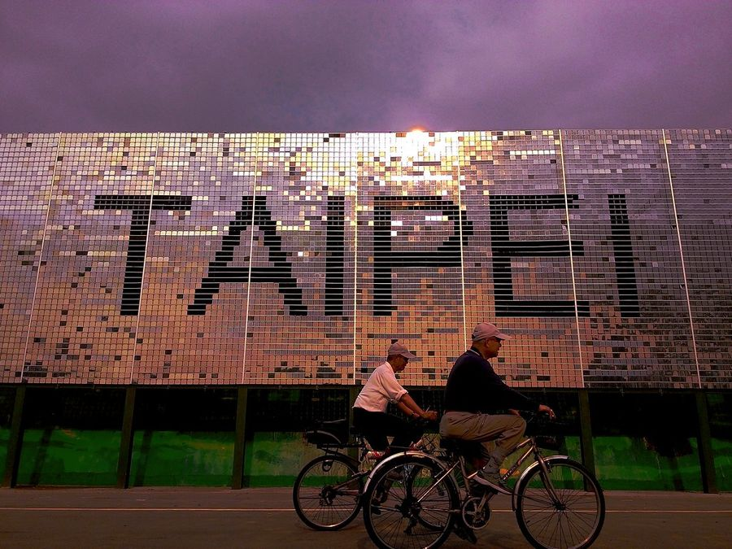

🇯🇵 日本 2件
 高市内閣、崩れぬ支持率 相次ぐ閣僚問題 能條桃子さんが語る違和感
高市内閣、崩れぬ支持率 相次ぐ閣僚問題 能條桃子さんが語る違和感 台湾の統一地方選、きょう投開票 「双北」に注目、総統選挙に影響も
台湾の統一地方選、きょう投開票 「双北」に注目、総統選挙に影響も🇺🇸 アメリカ 13件
 アボット氏退任で、テキサス州のデータセンターの将来はどうなるのか？With Abbott out, what does the future look like for data centers in Texas?テキサス州はデータセンターを最も歓迎してきた州の一つだが、新知事の就任でそれが変わる可能性がある。
アボット氏退任で、テキサス州のデータセンターの将来はどうなるのか？With Abbott out, what does the future look like for data centers in Texas?テキサス州はデータセンターを最も歓迎してきた州の一つだが、新知事の就任でそれが変わる可能性がある。 AI広告の事後検証Postmortem of AI adsAI企業がこのサイクルで蓄積してきたデータは、今後、極めて限定的に絞り込まれたオーディエンスへの広告配信に役立つだろう。
AI広告の事後検証Postmortem of AI adsAI企業がこのサイクルで蓄積してきたデータは、今後、極めて限定的に絞り込まれたオーディエンスへの広告配信に役立つだろう。 ヨハネスブルクの議員ら、市長選でヘレン・ジレ氏を退けるJohannesburg Lawmakers Snub Helen Zille in Mayoral Election南アフリカで最も裕福な都市を率いる人物としてハーマン・マシャバ氏が選ばれたことは、選挙で最も多くの票を獲得した政党の候補者であるヘレン・ジレ氏にとって打撃となった。
ヨハネスブルクの議員ら、市長選でヘレン・ジレ氏を退けるJohannesburg Lawmakers Snub Helen Zille in Mayoral Election南アフリカで最も裕福な都市を率いる人物としてハーマン・マシャバ氏が選ばれたことは、選挙で最も多くの票を獲得した政党の候補者であるヘレン・ジレ氏にとって打撃となった。 共和党が歓迎した最高裁判決が、結局は同党を傷つけたSupreme Court Rulings Cheered by Republicans Wound Up Hurting Them投票権、移民、汚職に関する判決は反発を生み、民主党による議会の圧勝につながった投票率の上昇を後押しした。
共和党が歓迎した最高裁判決が、結局は同党を傷つけたSupreme Court Rulings Cheered by Republicans Wound Up Hurting Them投票権、移民、汚職に関する判決は反発を生み、民主党による議会の圧勝につながった投票率の上昇を後押しした。 ニューヨーク州初の女性上院多数党院内総務、アンドレア・スチュワート＝カズンズ氏が死去Andrea Stewart-Cousins, New York’s First Female Senate Majority Leader, Diesスチュワート＝カズンズ氏は76歳で、州上院議員を20年間務めた。
ニューヨーク州初の女性上院多数党院内総務、アンドレア・スチュワート＝カズンズ氏が死去Andrea Stewart-Cousins, New York’s First Female Senate Majority Leader, Diesスチュワート＝カズンズ氏は76歳で、州上院議員を20年間務めた。 民主党対トランプの争いで、敗者となるのは連邦政府の請負業者かもしれないIn Democrats vs. Trump, the Loser May Be Federal Contractors新たに多数派を占める民主党は、計画している調査で企業やその他の外部関係者を標的にし始めたが、大統領は彼らを解雇すると脅した
民主党対トランプの争いで、敗者となるのは連邦政府の請負業者かもしれないIn Democrats vs. Trump, the Loser May Be Federal Contractors新たに多数派を占める民主党は、計画している調査で企業やその他の外部関係者を標的にし始めたが、大統領は彼らを解雇すると脅した スペインの極右時代は1975年に終わった。この男がそれを変えるのか？Spain’s Far-Right Era Ended in 1975. Will This Man Change That?世論調査が正しければ、サンティアゴ・アバスカル率いるVox党は、フランコ時代以来初めてスペイン政府に加わる極右団体となる可能性がある。
スペインの極右時代は1975年に終わった。この男がそれを変えるのか？Spain’s Far-Right Era Ended in 1975. Will This Man Change That?世論調査が正しければ、サンティアゴ・アバスカル率いるVox党は、フランコ時代以来初めてスペイン政府に加わる極右団体となる可能性がある。 2028年大統領選に向けた5つの大きな疑問Five Big Questions for the 2028 Presidential RaceJ・D・バンスとマルコ・ルビオは出馬するのか。カマラ・ハリスとアレクサンドリア・オカシオ＝コルテスはどうか。そしてもちろん、トランプ大統領はどのような役割を果たすのか。
2028年大統領選に向けた5つの大きな疑問Five Big Questions for the 2028 Presidential RaceJ・D・バンスとマルコ・ルビオは出馬するのか。カマラ・ハリスとアレクサンドリア・オカシオ＝コルテスはどうか。そしてもちろん、トランプ大統領はどのような役割を果たすのか。 中国批判のプーマ・シェン氏、次期台北市長になる可能性Puma Shen, Critic of China, Could be the Next Mayor of Taipei侵攻に備えて民間人を準備させる取り組みを理由に中国から制裁を受けているプーマ・シェン氏は、勝利すれば台湾の次の政治スターになる可能性がある。
中国批判のプーマ・シェン氏、次期台北市長になる可能性Puma Shen, Critic of China, Could be the Next Mayor of Taipei侵攻に備えて民間人を準備させる取り組みを理由に中国から制裁を受けているプーマ・シェン氏は、勝利すれば台湾の次の政治スターになる可能性がある。 私は政府の汚職を訴追してきた。私たちは窮地にあるI Prosecuted Government Corruption. We’re in Trouble.連邦検察官は今後何年も、腐敗した政府当局者を訴追するのに苦労することになるだろう。
私は政府の汚職を訴追してきた。私たちは窮地にあるI Prosecuted Government Corruption. We’re in Trouble.連邦検察官は今後何年も、腐敗した政府当局者を訴追するのに苦労することになるだろう。 トランプは事実上、亡命を終わらせた。擁護者たちは最高裁にその復活を求めているTrump effectively ended asylum. Advocates look to the Supreme Court to restore it亡命の禁止、大規模な解雇、新たな法的手段といったトランプの広範な移民制度の変更は、亡命をほぼ終わらせた。最高裁は近く、…するかどうかを審理する。
トランプは事実上、亡命を終わらせた。擁護者たちは最高裁にその復活を求めているTrump effectively ended asylum. Advocates look to the Supreme Court to restore it亡命の禁止、大規模な解雇、新たな法的手段といったトランプの広範な移民制度の変更は、亡命をほぼ終わらせた。最高裁は近く、…するかどうかを審理する。 朝のニュース概要Morning news brief感謝祭の嵐が東海岸を襲い、アメリカ人はブラックフライデーで過去最高額を使う見通しで、イスラエルの対立する派閥は新たな…を結成する競争の中で取引を検討している
朝のニュース概要Morning news brief感謝祭の嵐が東海岸を襲い、アメリカ人はブラックフライデーで過去最高額を使う見通しで、イスラエルの対立する派閥は新たな…を結成する競争の中で取引を検討している 元『タイム』誌記者で国務副長官を務めたストローブ・タルボット氏が死去Strobe Talbott, former Time magazine reporter and deputy secretary of state, has diedストローブ・タルボット氏は元『タイム』誌の記者で、後にビル・クリントン大統領の下で国務副長官を務め、その後ブルッキングス研究所を率いた。
元『タイム』誌記者で国務副長官を務めたストローブ・タルボット氏が死去Strobe Talbott, former Time magazine reporter and deputy secretary of state, has diedストローブ・タルボット氏は元『タイム』誌の記者で、後にビル・クリントン大統領の下で国務副長官を務め、その後ブルッキングス研究所を率いた。🇨🇳 中国 1件
 ウクライナ、レーザー兵器でロシアのドローンを初めて撃墜したと発表Ukraine says it used laser weapon to shoot down Russian drone for first timeウクライナは初めて、レーザー兵器を使ってロシアのジェット推進式ドローンを撃墜したと、政府系の防衛団体ブレイブ1が金曜日に発表した。
ウクライナ、レーザー兵器でロシアのドローンを初めて撃墜したと発表Ukraine says it used laser weapon to shoot down Russian drone for first timeウクライナは初めて、レーザー兵器を使ってロシアのジェット推進式ドローンを撃墜したと、政府系の防衛団体ブレイブ1が金曜日に発表した。🇰🇷 韓国 4件

[ローカルの再発見] 火山・川・花が作ったシンフォニー…鉄原・漢灘江観光ベルト[로컬의 재발견] 화산·강·꽃이 만든 심포니…철원 한탄강 관광 벨트[※編集者注＝少子化・高齢化と若者の流出で地域消滅の危機が高まる中、聯合ニュースは発想の転換を通じて各地域の隠れた自慢や物語... 「米大使を追放せよ」、カナダの国民請願が議会に提出…29万人が署名'美대사 추방하라' 캐나다 국민청원, 의회에 제출…29만명 서명（ニューヨーク＝聯合ニュース）イム・スジョン特派員＝ドナルド・トランプ米大統領の対カナダ強硬政策を擁護してきたピート・フックストラ駐カナダ米大使の追放を求める…
「米大使を追放せよ」、カナダの国民請願が議会に提出…29万人が署名'美대사 추방하라' 캐나다 국민청원, 의회에 제출…29만명 서명（ニューヨーク＝聯合ニュース）イム・スジョン特派員＝ドナルド・トランプ米大統領の対カナダ強硬政策を擁護してきたピート・フックストラ駐カナダ米大使の追放を求める… 国民の力党、きょう大田で「捏造起訴特検法」糾弾大会국힘, 오늘 대전서 '조작기소 특검법' 규탄 대회（ソウル＝聯合ニュース）クォン・ヒウォン記者＝国民の力党は28日、大田で捏造起訴特検法に反対する「100％違憲 李在明脱獄法 忠清圏糾弾大会」を開く。選挙の惨敗にもかかわらず関税を振り回すトランプ氏…与党でも不満が高まる선거 참패에도 관세 휘두르는 트럼프…여당서도 불만 고개（ワシントン＝聯合ニュース）ペク・ナリ特派員＝ドナルド・トランプ米大統領が中間選挙での惨敗にもかかわらず関税カードを振り回しているが、与党の共和党内では関税の見直しをめぐる…
国民の力党、きょう大田で「捏造起訴特検法」糾弾大会국힘, 오늘 대전서 '조작기소 특검법' 규탄 대회（ソウル＝聯合ニュース）クォン・ヒウォン記者＝国民の力党は28日、大田で捏造起訴特検法に反対する「100％違憲 李在明脱獄法 忠清圏糾弾大会」を開く。選挙の惨敗にもかかわらず関税を振り回すトランプ氏…与党でも不満が高まる선거 참패에도 관세 휘두르는 트럼프…여당서도 불만 고개（ワシントン＝聯合ニュース）ペク・ナリ特派員＝ドナルド・トランプ米大統領が中間選挙での惨敗にもかかわらず関税カードを振り回しているが、与党の共和党内では関税の見直しをめぐる…🇬🇧 イギリス 20件
英国の年金担当省が「深刻なサイバーインシデント」に見舞われたと大臣 ― ライブ経過UK pensions department hit by ‘serious cyber incident’, minister says – as it happenedこのブログは終了しました。この記事の詳細はこちらで読めます。オンラインサービスの障害を追跡するDowndetectorによると、政府の…に関する問題の報告が… ナチュラル・イングランドがデータセンターに反対。数週間後、閣僚らが同機関の廃止をちらつかせ脅したNatural England objected to a datacentre. Weeks later ministers threatened to abolish the agency同機関は、近隣の保護された野生生物と生息地へのリスクを理由に、ブリストル市議会に計画を却下するよう求めた。ナチュラル・イングランドは大規模なAI
ナチュラル・イングランドがデータセンターに反対。数週間後、閣僚らが同機関の廃止をちらつかせ脅したNatural England objected to a datacentre. Weeks later ministers threatened to abolish the agency同機関は、近隣の保護された野生生物と生息地へのリスクを理由に、ブリストル市議会に計画を却下するよう求めた。ナチュラル・イングランドは大規模なAI スペイン首相とライバルら、投票を呼びかける最後の訴えで支持者を結集Spanish PM and rivals rally supporters in final pitch for votesペドロ・サンチェス首相は世論調査の予想に反することを望んでおり、主要なライバルらは同首相が真実を語らず、「裏切り」を犯したと非難している。
スペイン首相とライバルら、投票を呼びかける最後の訴えで支持者を結集Spanish PM and rivals rally supporters in final pitch for votesペドロ・サンチェス首相は世論調査の予想に反することを望んでおり、主要なライバルらは同首相が真実を語らず、「裏切り」を犯したと非難している。 保守党とブレグジットを描くマーティン・ローソン――漫画Martin Rowson on the Conservatives and Brexit – cartoon続きを読む…ローズバンクをめぐる労働党内の対立が深まる、数十人の議員が首相に油田を阻止しないよう警告Labour row over Rosebank deepens as dozens of MPs warn PM not to block oilfield「スコットランドにおける労働党の灯は消える」と警告される中、バーナム氏は北海掘削プロジェクトをめぐって対立する派閥の間で選択に直面している。賛成派の労働党議員数十人が…元議会指導者、詐欺と脱税で収監Ex-council leader jailed for fraud and tax evasionジェイソン・ザドロズニー被告は、27か月の禁錮刑を言い渡される際、被告席で号泣した。保守党候補者はネットゼロ目標の廃止を誓う文書に署名しなければならない、とベーデノック氏Tory candidates must sign pledge to scrap net-zero targets, says Badenoch保守党党首は、自身の「候補者誓約」が党への信頼を築くと述べているが、一部の元議員はこの動きを批判している。リフォーム党の政治家、セネッズでの禁止措置をめぐり法的措置を求めるReform politician seeks legal action over Senedd banジョー・マーティンは、白人の「置き換え」に言及したことについて謝罪しなければならないと告げられた。
保守党とブレグジットを描くマーティン・ローソン――漫画Martin Rowson on the Conservatives and Brexit – cartoon続きを読む…ローズバンクをめぐる労働党内の対立が深まる、数十人の議員が首相に油田を阻止しないよう警告Labour row over Rosebank deepens as dozens of MPs warn PM not to block oilfield「スコットランドにおける労働党の灯は消える」と警告される中、バーナム氏は北海掘削プロジェクトをめぐって対立する派閥の間で選択に直面している。賛成派の労働党議員数十人が…元議会指導者、詐欺と脱税で収監Ex-council leader jailed for fraud and tax evasionジェイソン・ザドロズニー被告は、27か月の禁錮刑を言い渡される際、被告席で号泣した。保守党候補者はネットゼロ目標の廃止を誓う文書に署名しなければならない、とベーデノック氏Tory candidates must sign pledge to scrap net-zero targets, says Badenoch保守党党首は、自身の「候補者誓約」が党への信頼を築くと述べているが、一部の元議員はこの動きを批判している。リフォーム党の政治家、セネッズでの禁止措置をめぐり法的措置を求めるReform politician seeks legal action over Senedd banジョー・マーティンは、白人の「置き換え」に言及したことについて謝罪しなければならないと告げられた。 スペインのペドロ・サンチェス首相、世論調査にもかかわらず選挙勝利に自信――ライブ更新Spanish prime minister Pedro Sánchez confident of election victory despite polls – as it happenedこのブログは終了しました。マドリードを拠点とし、『ソブレメサ』ポッドキャストのホストを務めるフリーランス・ジャーナリスト。Voxは国際報道ではしばしば…な政党として描かれてきた。政府、内部告発者を黙らせることを目的とした高額な法的請求を制限へGovernment to limit costly legal claims aimed at silencing whistleblowersある国会議員は、元ハロッズ所有者のモハメド・アル＝ファイドを、自身の「恐るべき虐待」を抑圧するために法的措置を利用した人物として挙げた。
スペインのペドロ・サンチェス首相、世論調査にもかかわらず選挙勝利に自信――ライブ更新Spanish prime minister Pedro Sánchez confident of election victory despite polls – as it happenedこのブログは終了しました。マドリードを拠点とし、『ソブレメサ』ポッドキャストのホストを務めるフリーランス・ジャーナリスト。Voxは国際報道ではしばしば…な政党として描かれてきた。政府、内部告発者を黙らせることを目的とした高額な法的請求を制限へGovernment to limit costly legal claims aimed at silencing whistleblowersある国会議員は、元ハロッズ所有者のモハメド・アル＝ファイドを、自身の「恐るべき虐待」を抑圧するために法的措置を利用した人物として挙げた。 ブラジル、マクロンが自国の食肉を「ドーピングされた」と呼んだことに反発Brazil pushes back on Macron calling its meat 'doped'フランス大統領は、EUがブラジル産牛肉と家禽製品を禁止してから数カ月後、フランスの農業関係者に語る中でこの発言をした。『恋はデジャ・ブ』の破滅的なループと『エルム街の悪夢』を掛け合わせると、ほら――ピーター・マンデルソンだ｜ロバート・ハットンThey crossed the doom loop of Groundhog Day with Nightmare on Elm Street. Voilà – it’s Peter Mandelson | Robert Hutton彼は常に不名誉な存在でありながら、決して姿を消そうとしない――今度は最新のブレグジット論争に加わった。ミュートボタンはないのか、それとも本当に機能する追放計画はないのか
ブラジル、マクロンが自国の食肉を「ドーピングされた」と呼んだことに反発Brazil pushes back on Macron calling its meat 'doped'フランス大統領は、EUがブラジル産牛肉と家禽製品を禁止してから数カ月後、フランスの農業関係者に語る中でこの発言をした。『恋はデジャ・ブ』の破滅的なループと『エルム街の悪夢』を掛け合わせると、ほら――ピーター・マンデルソンだ｜ロバート・ハットンThey crossed the doom loop of Groundhog Day with Nightmare on Elm Street. Voilà – it’s Peter Mandelson | Robert Hutton彼は常に不名誉な存在でありながら、決して姿を消そうとしない――今度は最新のブレグジット論争に加わった。ミュートボタンはないのか、それとも本当に機能する追放計画はないのか リフォーム党のジョー・マーティン、セネッズでの発言禁止を受け法的措置を取る構えReform's Joe Martin threatens legal challenge after being banned from speaking in Seneddジョー・マーティンは、白人の「置き換え」に言及したことについて謝罪しなければならないと告げられた。
リフォーム党のジョー・マーティン、セネッズでの発言禁止を受け法的措置を取る構えReform's Joe Martin threatens legal challenge after being banned from speaking in Seneddジョー・マーティンは、白人の「置き換え」に言及したことについて謝罪しなければならないと告げられた。 『ヒュー・エドワーズから話を聞くことに関心はない』とダウニング街'We have no interest in hearing from Huw Edwards', Downing Street says失脚した元BBCニュースプレゼンターへの新たなインタビューに反発が広がっている。
『ヒュー・エドワーズから話を聞くことに関心はない』とダウニング街'We have no interest in hearing from Huw Edwards', Downing Street says失脚した元BBCニュースプレゼンターへの新たなインタビューに反発が広がっている。 バーナム氏のクリスマスの誓いの後、路上生活者の3分の1がベッドや支援を提供されたA third of rough sleepers offered bed or support after Burnham Christmas vow首相が『早期の進展』を称賛する中、活動家たちは、提供の申し出が何件断られたのかを閣僚たちが隠していると非難している。英国政治ライブ－最新情報 路上生活者の3分の1をわずかに上回る人々が
バーナム氏のクリスマスの誓いの後、路上生活者の3分の1がベッドや支援を提供されたA third of rough sleepers offered bed or support after Burnham Christmas vow首相が『早期の進展』を称賛する中、活動家たちは、提供の申し出が何件断られたのかを閣僚たちが隠していると非難している。英国政治ライブ－最新情報 路上生活者の3分の1をわずかに上回る人々が 攻撃的な発言を受けて行われた補欠選挙でリフォームが勝利Reform wins by-elections after offensive commentsこの補欠選挙は、前議員のアラン・フィーニー氏がアジア系の住宅所有者を「寄生虫」と呼ぶ様子が撮影されたことを受けて実施された。純移民数が数万人台となり「大きな瞬間」'Big moment' as net migration now in tens of thousands純移民数が数万人台に減少し、「大きな瞬間」。BBCの政治編集者クリス・メイソンは、英国の移民数が7万7000人に減少したことの意義を解説する。
攻撃的な発言を受けて行われた補欠選挙でリフォームが勝利Reform wins by-elections after offensive commentsこの補欠選挙は、前議員のアラン・フィーニー氏がアジア系の住宅所有者を「寄生虫」と呼ぶ様子が撮影されたことを受けて実施された。純移民数が数万人台となり「大きな瞬間」'Big moment' as net migration now in tens of thousands純移民数が数万人台に減少し、「大きな瞬間」。BBCの政治編集者クリス・メイソンは、英国の移民数が7万7000人に減少したことの意義を解説する。 クリス・メイソン：移民統計は減少したが、それでこの問題は終わるのか？Chris Mason: Immigration stats are down but will that be the end of the issue?純移民が数万人規模に減少したことは、移民をめぐる私たち国民全体の議論における画期的な瞬間だと、クリス・メイソンは言う。
クリス・メイソン：移民統計は減少したが、それでこの問題は終わるのか？Chris Mason: Immigration stats are down but will that be the end of the issue?純移民が数万人規模に減少したことは、移民をめぐる私たち国民全体の議論における画期的な瞬間だと、クリス・メイソンは言う。 バーナムのスローな政治について最も驚くべきことはこれだ：それがうまくいっているかもしれないことだ｜アンディ・ベケットThe most surprising thing about Burnham’s slow politics is this: it could be working | Andy Beckett「アンディ・タイム」は、メディアや変化を待ちきれない有権者を苛立たせるかもしれない。しかし、短命な首相や性急な政策が何年も続いた後では、これこそウェストミンスターのリセットではないだろうか。
バーナムのスローな政治について最も驚くべきことはこれだ：それがうまくいっているかもしれないことだ｜アンディ・ベケットThe most surprising thing about Burnham’s slow politics is this: it could be working | Andy Beckett「アンディ・タイム」は、メディアや変化を待ちきれない有権者を苛立たせるかもしれない。しかし、短命な首相や性急な政策が何年も続いた後では、これこそウェストミンスターのリセットではないだろうか。 「カナダ人に対する虐待的で侮辱的な」：米国大使の追放を求める運動が議会に提出‘Abusive and insulting to Canadians’: campaign to oust US ambassador presented to parliament数十万人のカナダ人が、ピート・フックストラ氏を「ペルソナ・ノン・グラータ」に宣言するよう求めている。約29万人のカナダ人が署名した請願は、マーク・カーニー氏に呼びかけている。
「カナダ人に対する虐待的で侮辱的な」：米国大使の追放を求める運動が議会に提出‘Abusive and insulting to Canadians’: campaign to oust US ambassador presented to parliament数十万人のカナダ人が、ピート・フックストラ氏を「ペルソナ・ノン・グラータ」に宣言するよう求めている。約29万人のカナダ人が署名した請願は、マーク・カーニー氏に呼びかけている。🇩🇪 ドイツ 20件
ジャン＝リュック・メランション：メランション氏、ドイツ敵視の非難を退けるJean-Luc Mélenchon: Mélenchon weist Vorwurf der Deutschlandfeindlichkeit zurückジャン＝リュック・メランション氏はドイツに対する批判的な態度を擁護した。フランスの左派ポピュリストの大統領候補である同氏は、現在ベルリンを訪問中である。ドイツ連邦軍：ハイコ・ヒュブナー氏が新しい陸軍総監に就任へBundeswehr: Heico Hübner wird neuer Inspekteur des Heeresピストリウス国防相は、クリスティアン・フロイディング氏の後任を見つけた。中将のハイコ・ヒュブナー氏が今後、陸軍を率いることになる。同氏は経験をもたらすカナダ：最高裁、ケベック州の世俗主義法案をほぼ支持Canada: Supreme Court largely upholds Quebec secularism billケベック州政府は、公務員が宗教的シンボルを身に着けることを禁止する法案21号を可決し、世俗主義社会を守るために必要だと主張した。批判派は… カナダ：最高裁、ケベック州の世俗主義法案をほぼ支持Canada: Supreme Court largely upholds Quebec secularism billケベック州政府は、公務員が宗教的シンボルを身に着けることを禁止する法案21号を可決し、世俗主義社会を守るために必要だと主張した。批判派は…州議会選挙を前に、SPDの筆頭候補をめぐる権力闘争は結末が見えないVor der Landtagswahl: Machtkampf um SPD-Spitzenkandidatur mit offenem Ausgang年金改革：ハイジ・ライヒネック、年金計画を「削減プログラム」と批判Rentenreform: Heidi Reichinnek kritisiert Rentenpläne als »Kürzungsprogramm«左派党と労働組合はシュヴァイツァー労働相の年金パッケージを批判し、解雇の波が起きると警告している。CSUからも批判が出ている。
カナダ：最高裁、ケベック州の世俗主義法案をほぼ支持Canada: Supreme Court largely upholds Quebec secularism billケベック州政府は、公務員が宗教的シンボルを身に着けることを禁止する法案21号を可決し、世俗主義社会を守るために必要だと主張した。批判派は…州議会選挙を前に、SPDの筆頭候補をめぐる権力闘争は結末が見えないVor der Landtagswahl: Machtkampf um SPD-Spitzenkandidatur mit offenem Ausgang年金改革：ハイジ・ライヒネック、年金計画を「削減プログラム」と批判Rentenreform: Heidi Reichinnek kritisiert Rentenpläne als »Kürzungsprogramm«左派党と労働組合はシュヴァイツァー労働相の年金パッケージを批判し、解雇の波が起きると警告している。CSUからも批判が出ている。 アンドレアス・バブラー：アンドレアス・バブラーの失脚と大衆紙の力Andreas Babler: Der Fall des Andreas Babler und die Macht des Boulevardsオーストリア副首相アンドレアス・バブラーの失脚は、政治文化に良いことを何も期待させない。大衆紙は再び、自らに何ができるかを示した。イスラエル：アイゼンコット氏、連立協議の引き延ばしでリクード党を非難Israel: Eisenkot wirft Likud-Partei Verschleppung der Koalitionsgespräche vorリクードは政権樹立に向けた具体的な提案の提示を拒んでいると、ガディ・アイゼンコット氏は言う。ベンヤミン・ネタニヤフ氏の党は新たな選挙を強行しようとしている。英国の若年失業：失業の世代Jugendarbeitslosigkeit in Großbritannien: Generation arbeitslosZ世代の苦境は欧州全体で話題になっている。英国では特に極端で、ほぼ100万人の若者が仕事を持っていない。どうしてこんなことに…スペイン議会選挙：サンチェスの危険なポーカーゲームParlamentswahl in Spanien: Sánchez’ riskantes Pokerspiel短い選挙戦の後、スペインは新しい議会を選出する。ペドロ・サンチェスは左派の強い支持を期待しているが、極右の方が有利な見通しだ。スペインの選挙：「今や、国全体を停止させる方法がわかった」Wahl in Spanien: »Jetzt wissen wir, wie man ein ganzes Land zum Stillstand bringt«スペインの選挙では家賃が大きな争点となっているが、左派政権は多くの賃借人活動家の支持を失った。その1人であるカルメ・アルカラソ・イ・センペレ氏は年金：年金で何が変わる予定なのかRente: Was sich bei der Rente ändern sollシュヴァイツァー労働相が年金改革のための法案を提出した。これは待望の妥協案なのか？ 最も重要なポイント
アンドレアス・バブラー：アンドレアス・バブラーの失脚と大衆紙の力Andreas Babler: Der Fall des Andreas Babler und die Macht des Boulevardsオーストリア副首相アンドレアス・バブラーの失脚は、政治文化に良いことを何も期待させない。大衆紙は再び、自らに何ができるかを示した。イスラエル：アイゼンコット氏、連立協議の引き延ばしでリクード党を非難Israel: Eisenkot wirft Likud-Partei Verschleppung der Koalitionsgespräche vorリクードは政権樹立に向けた具体的な提案の提示を拒んでいると、ガディ・アイゼンコット氏は言う。ベンヤミン・ネタニヤフ氏の党は新たな選挙を強行しようとしている。英国の若年失業：失業の世代Jugendarbeitslosigkeit in Großbritannien: Generation arbeitslosZ世代の苦境は欧州全体で話題になっている。英国では特に極端で、ほぼ100万人の若者が仕事を持っていない。どうしてこんなことに…スペイン議会選挙：サンチェスの危険なポーカーゲームParlamentswahl in Spanien: Sánchez’ riskantes Pokerspiel短い選挙戦の後、スペインは新しい議会を選出する。ペドロ・サンチェスは左派の強い支持を期待しているが、極右の方が有利な見通しだ。スペインの選挙：「今や、国全体を停止させる方法がわかった」Wahl in Spanien: »Jetzt wissen wir, wie man ein ganzes Land zum Stillstand bringt«スペインの選挙では家賃が大きな争点となっているが、左派政権は多くの賃借人活動家の支持を失った。その1人であるカルメ・アルカラソ・イ・センペレ氏は年金：年金で何が変わる予定なのかRente: Was sich bei der Rente ändern sollシュヴァイツァー労働相が年金改革のための法案を提出した。これは待望の妥協案なのか？ 最も重要なポイント イスラエル：ガディ・アイゼンコット氏、連立協議をめぐりベンヤミン・ネタニヤフ氏のリクードを批判Israel: Gadi Eisenkot kritisiert Likud von Benjamin Netanyahu wegen Koalitionsgesprächenイスラエルでの政権樹立は失敗の危機にある。大政党同士が互いを非難し合っている。しかしガディ・アイゼンコット氏は成果も報告できる。ジェンダー配慮の言語：緑の党、ジェンダーの特殊記号に対するヴァーデフール氏の取り組みを批判Geschlechtergerechte Sprache: Grüne kritisieren Wadephuls Vorgehen gegen Gendersonderzeichen外務省では、ジェンダーアスタリスクの検索にAIも使用されているとみられる。緑の党は、その禁止を施行するために費やされている労力を問題視している。
イスラエル：ガディ・アイゼンコット氏、連立協議をめぐりベンヤミン・ネタニヤフ氏のリクードを批判Israel: Gadi Eisenkot kritisiert Likud von Benjamin Netanyahu wegen Koalitionsgesprächenイスラエルでの政権樹立は失敗の危機にある。大政党同士が互いを非難し合っている。しかしガディ・アイゼンコット氏は成果も報告できる。ジェンダー配慮の言語：緑の党、ジェンダーの特殊記号に対するヴァーデフール氏の取り組みを批判Geschlechtergerechte Sprache: Grüne kritisieren Wadephuls Vorgehen gegen Gendersonderzeichen外務省では、ジェンダーアスタリスクの検索にAIも使用されているとみられる。緑の党は、その禁止を施行するために費やされている労力を問題視している。 フランス選挙：ダヴィド・リスナール氏はマリーヌ・ル・ペン氏の勝利を阻止できるか？Frankreich-Wahl: Verhindert David Lisnard den Sieg von Marine Le Pen?ダヴィド・リスナール氏はカンヌ市長で、フランス大統領選挙に関する世論調査で急浮上している。彼の計画は、右派ナショナリストの最有力候補マリーヌ・ル・ペン氏を…
フランス選挙：ダヴィド・リスナール氏はマリーヌ・ル・ペン氏の勝利を阻止できるか？Frankreich-Wahl: Verhindert David Lisnard den Sieg von Marine Le Pen?ダヴィド・リスナール氏はカンヌ市長で、フランス大統領選挙に関する世論調査で急浮上している。彼の計画は、右派ナショナリストの最有力候補マリーヌ・ル・ペン氏を… シュヴァイツァーの年金計画への論評：政治の迷走は続くKommentar zu Schweitzers Rentenplänen: Die politische Irrfahrt geht weiter「63歳年金」は下から上への再分配だとダグマル・ペッピングは言う。シュヴァイツァー労働相はそれに終止符を打つべきだった。ところが、
シュヴァイツァーの年金計画への論評：政治の迷走は続くKommentar zu Schweitzers Rentenplänen: Die politische Irrfahrt geht weiter「63歳年金」は下から上への再分配だとダグマル・ペッピングは言う。シュヴァイツァー労働相はそれに終止符を打つべきだった。ところが、 本日のニュース：予算、SAP、ヨハン・ヴァーデフール、ジェンダー配慮表現News des Tages: Haushalt, SAP, Johann Wadephul, gendernドイツの2027年の予算は決定済みだ。ソフトウェア大手SAPにはセキュリティ上の問題がある。そしてヴァーデフール外相はジェンダー・アスタリスクと闘っている。緑の党と左派党、飛行をめぐりメルツ氏に透明性を要求Grüne und Linke fordern wegen Flug Transparenz von Merzフリードリヒ・メルツ氏は、自身の選挙区の実業家の飛行機で党の行事に向かった可能性がある。左派党は説明を求め、緑の党の議員は……について述べている年金：アレクサンダー・シュヴァイツァー労働相が年金改革の法案を提出Rente: Arbeitsminister Alexander Schweitzer legt Gesetzentwurf zur Rentenreform vor年金をめぐる対立に妥協はあるのか。労働相が法案を提出して先手を打った。しかし首相府によれば、それはまだ「…の段階」にあるという
本日のニュース：予算、SAP、ヨハン・ヴァーデフール、ジェンダー配慮表現News des Tages: Haushalt, SAP, Johann Wadephul, gendernドイツの2027年の予算は決定済みだ。ソフトウェア大手SAPにはセキュリティ上の問題がある。そしてヴァーデフール外相はジェンダー・アスタリスクと闘っている。緑の党と左派党、飛行をめぐりメルツ氏に透明性を要求Grüne und Linke fordern wegen Flug Transparenz von Merzフリードリヒ・メルツ氏は、自身の選挙区の実業家の飛行機で党の行事に向かった可能性がある。左派党は説明を求め、緑の党の議員は……について述べている年金：アレクサンダー・シュヴァイツァー労働相が年金改革の法案を提出Rente: Arbeitsminister Alexander Schweitzer legt Gesetzentwurf zur Rentenreform vor年金をめぐる対立に妥協はあるのか。労働相が法案を提出して先手を打った。しかし首相府によれば、それはまだ「…の段階」にあるという フリードリヒ・メルツと連立政権：政府はようやく再び責任ある財政運営をしなければならない ― コメントFriedrich Merz und die Koalition: Die Regierung muss endlich wieder verantwortungsvoll haushalten – Kommentar連立政権は、何に資金を使うかを決めた。しかし予算は会計上の小細工だらけだ。その報いが後に手痛いものになる可能性がある。
フリードリヒ・メルツと連立政権：政府はようやく再び責任ある財政運営をしなければならない ― コメントFriedrich Merz und die Koalition: Die Regierung muss endlich wieder verantwortungsvoll haushalten – Kommentar連立政権は、何に資金を使うかを決めた。しかし予算は会計上の小細工だらけだ。その報いが後に手痛いものになる可能性がある。🇮🇳 インド 14件
「インドが強ければ、サナータン・ダルマも強くなる」：UP州首相ヨギ・アディティヤナート‘If India is strong, Sanatan Dharma will be strong’: UP CM Yogi Adityanath州首相はまた、結果は単なる演説や説教から生まれるのではなく、献身的な努力と勤勉さから生まれるとも指摘した。 ニューヨーク州初の黒人女性上院指導者、アンドレア・スチュワート＝カズンズ氏が76歳で死去Andrea Stewart-Cousins, New York’s first Black woman Senate leader, dies at 76ニューヨーク州上院多数党院内総務のアンドレア・スチュワート＝カズンズ氏（同職に就いた初の女性）が76歳で死去したと、キャシー・ホークル知事が確認した。イラク、日曜日の会合を前にOPECに石油生産上限の引き上げを求めるIraq seeks higher oil production limit from OPEC ahead of Sunday meetingイラクの石油相は、日曜日に開かれる同機構の会合を直前に控え、同国がOPECに石油生産上限の引き上げを求めていると述べた。内閣、ローク・サバーの議席を50％増やし、区割り見直しを2051年まで凍結する法案を承認Cabinet clears bills to raise Lok Sabha seats by 50%, freeze delimitation till 2051連邦内閣は、ローク・サバーを550議席から850議席に拡大することを目的とした新法案にゴーサインを出した。この法案は重要な節目をもたらす…J&K、2年ぶりに法務長官が就任J&K gets advocate general after 2 yearsサイード・ファイサル・カドリがジャンムー・カシミールの法務長官に任命され、重要な役割が埋まった。この重要なポストは2年間、ある理由により空席となっていたカナダ最高裁、公職でのターバンやヒジャブを禁止するケベック州の措置を概ね支持Canada's top court largely upholds Quebec ban on turbans, hijabs at public jobs重要な判決の中で、カナダ最高裁判所は、公務員による宗教的シンボルの着用を禁止するケベック州法第21号の大部分を支持した。この
ニューヨーク州初の黒人女性上院指導者、アンドレア・スチュワート＝カズンズ氏が76歳で死去Andrea Stewart-Cousins, New York’s first Black woman Senate leader, dies at 76ニューヨーク州上院多数党院内総務のアンドレア・スチュワート＝カズンズ氏（同職に就いた初の女性）が76歳で死去したと、キャシー・ホークル知事が確認した。イラク、日曜日の会合を前にOPECに石油生産上限の引き上げを求めるIraq seeks higher oil production limit from OPEC ahead of Sunday meetingイラクの石油相は、日曜日に開かれる同機構の会合を直前に控え、同国がOPECに石油生産上限の引き上げを求めていると述べた。内閣、ローク・サバーの議席を50％増やし、区割り見直しを2051年まで凍結する法案を承認Cabinet clears bills to raise Lok Sabha seats by 50%, freeze delimitation till 2051連邦内閣は、ローク・サバーを550議席から850議席に拡大することを目的とした新法案にゴーサインを出した。この法案は重要な節目をもたらす…J&K、2年ぶりに法務長官が就任J&K gets advocate general after 2 yearsサイード・ファイサル・カドリがジャンムー・カシミールの法務長官に任命され、重要な役割が埋まった。この重要なポストは2年間、ある理由により空席となっていたカナダ最高裁、公職でのターバンやヒジャブを禁止するケベック州の措置を概ね支持Canada's top court largely upholds Quebec ban on turbans, hijabs at public jobs重要な判決の中で、カナダ最高裁判所は、公務員による宗教的シンボルの着用を禁止するケベック州法第21号の大部分を支持した。この チャンドラバブ・ナイドゥ氏、区割り見直し推進を支持し、南部の「人口」をめぐる懸念を示すChandrababu Naidu Backs Delimitation Push, Flags South's 'Population' Concernナイドゥ氏は、ナレンドラ・モディ首相の指導の下での中央政府の決定を支持するため、首都に来たと述べた。中央政府の区割り見直し推進：ローク・サバーでNDAの数字はどうなるのかCentre's Delimitation Push: How Numbers Stack Up For NDA In Lok Sabhaその最初の試みは2026年4月17日に失敗し、NDAはローク・サバーで賛成298票を得た一方、反対は230票だった。出席議員528人のもとで…パンジャーブ州、都市部と農村部のガウシャラ520施設に10億ルピーの支援パッケージを発表Punjab Announces Rs 100-Crore Package For 520 Urban, Rural Gaushalasアマン・アローラ閣僚はこの決定を発表し、政府は都市部と農村部のガウシャラ双方に財政支援を広げるための資金を承認したと述べたシャラド・パワール氏による区割り支持の見返りに、娘のスプリヤ・スレ氏に閣僚ポスト：関係筋In Return For Sharad Pawar's Delimitation Support, Cabinet Berth For Daughter Supriya Sule: SourcesNDTVによると、NCP(SP)は、会議派主導のINDIA連合からBJP主導のNDAへ鞍替えする見返りに、マハーラーシュトラ州政府における2つの大臣ポストについても交渉している。2027年パンジャーブ州選挙を前にBJPの最初の大きな課題がラジプラで浮上：転向者対組織の人間BJP's First Big Challenge Ahead Of 2027 Punjab Polls Emerges in Rajpura: Turncoat vs Organisation Man元インド国民会議派の州議会議員ハルディアル・シン・カンボジ氏のBJP入党が、ラジプラで新たな政治論争を引き起こした。同地では長年のBJP指導者ジャグディッシュ・クマール氏が…
チャンドラバブ・ナイドゥ氏、区割り見直し推進を支持し、南部の「人口」をめぐる懸念を示すChandrababu Naidu Backs Delimitation Push, Flags South's 'Population' Concernナイドゥ氏は、ナレンドラ・モディ首相の指導の下での中央政府の決定を支持するため、首都に来たと述べた。中央政府の区割り見直し推進：ローク・サバーでNDAの数字はどうなるのかCentre's Delimitation Push: How Numbers Stack Up For NDA In Lok Sabhaその最初の試みは2026年4月17日に失敗し、NDAはローク・サバーで賛成298票を得た一方、反対は230票だった。出席議員528人のもとで…パンジャーブ州、都市部と農村部のガウシャラ520施設に10億ルピーの支援パッケージを発表Punjab Announces Rs 100-Crore Package For 520 Urban, Rural Gaushalasアマン・アローラ閣僚はこの決定を発表し、政府は都市部と農村部のガウシャラ双方に財政支援を広げるための資金を承認したと述べたシャラド・パワール氏による区割り支持の見返りに、娘のスプリヤ・スレ氏に閣僚ポスト：関係筋In Return For Sharad Pawar's Delimitation Support, Cabinet Berth For Daughter Supriya Sule: SourcesNDTVによると、NCP(SP)は、会議派主導のINDIA連合からBJP主導のNDAへ鞍替えする見返りに、マハーラーシュトラ州政府における2つの大臣ポストについても交渉している。2027年パンジャーブ州選挙を前にBJPの最初の大きな課題がラジプラで浮上：転向者対組織の人間BJP's First Big Challenge Ahead Of 2027 Punjab Polls Emerges in Rajpura: Turncoat vs Organisation Man元インド国民会議派の州議会議員ハルディアル・シン・カンボジ氏のBJP入党が、ラジプラで新たな政治論争を引き起こした。同地では長年のBJP指導者ジャグディッシュ・クマール氏が… ディーパム論争で法廷侮辱の通知を受けた15人にタミル・ナードゥ州の最高位官僚もTamil Nadu's Top Bureacrat Among 15 Facing Contempt Notices In Deepam Row最高裁判所は、展開した一連の出来事は、行政当局が政治的上層部の指示に従って行動したことを示すものだと述べた。
ディーパム論争で法廷侮辱の通知を受けた15人にタミル・ナードゥ州の最高位官僚もTamil Nadu's Top Bureacrat Among 15 Facing Contempt Notices In Deepam Row最高裁判所は、展開した一連の出来事は、行政当局が政治的上層部の指示に従って行動したことを示すものだと述べた。 区割り法案、委員会の設置を提案 委員に最高裁裁判官や最高選挙委員の指名者らDelimitation Bill proposes formation of commission, SC judge, CEC nominee among membersこの委員会は、法案が議会の両院を通過し、大統領の承認を得て法律となれば設置される。MK・スターリン氏とシャラド・パワール氏の政党が選挙区画割り推進の背後に？ カルティ・チダンバラム独占インタビューMK Stalin, Sharad Pawar's Parties Behind Delimitation Push? Karti Chidambaram Exclusive3つの別個の提案された法律と一括化された選挙区画割り法案は、3分の2の多数が得られなかったため、8月に議会を通過しなかった。
区割り法案、委員会の設置を提案 委員に最高裁裁判官や最高選挙委員の指名者らDelimitation Bill proposes formation of commission, SC judge, CEC nominee among membersこの委員会は、法案が議会の両院を通過し、大統領の承認を得て法律となれば設置される。MK・スターリン氏とシャラド・パワール氏の政党が選挙区画割り推進の背後に？ カルティ・チダンバラム独占インタビューMK Stalin, Sharad Pawar's Parties Behind Delimitation Push? Karti Chidambaram Exclusive3つの別個の提案された法律と一括化された選挙区画割り法案は、3分の2の多数が得られなかったため、8月に議会を通過しなかった。🇮🇹 イタリア 20件
ウクライナ・ロシア戦争、最新情報。ロシア：「キーウ政権は脅威。イタリアは目を開け」Guerra Ucraina-Russia, le news. Russia: “Regime di Kiev una minaccia. Italia apra gli occhi”ウクライナ大統領はBBCに対し、リビア領海でのキーウの攻撃について「パートナーと連携せずに行動することは決してない」と述べた。タヤーニ氏は否定し、コンテ氏は攻勢に出たメロネルム、ラ・ルッサ氏が憲法裁判所を攻撃：「首相の指名にノー？ 左派への支援になる」Melonellum, La Russa attacca la Consulta: “No a indicazione premier? Sarebbe aiuto alla sinistra”上院議長によると、新しい選挙法に対する裁判所の介入は「憲法違反」にもなるという。判事、移民、ムスリム、デモ参加者：政権維持のため右派が狙うのはどこかMagistrati, migranti, musulmani, manifestanti: dove colpisce la destra per restare al governo過去4年間を特徴づけてきた構図が、今後数か月を決定づける。メロネッルム、ラ・ルッサが憲法裁判所を攻撃：「首相候補の明示にノー？それは左派を助けることになるだろう」Melonellum, La Russa attacca la Consulta: “No a indicazione premier? Sarebbe aiuto alla sinistra”上院議長によれば、新しい選挙法に対する裁判所の介入は「憲法違反」にもなるというエリザベッタ・グアルミーニ氏がレポーレ氏に対抗して市長候補に：「私はボローニャのジェームズ・タラリコだと感じている」Elisabetta Gualmini candidata sindaco contro Lepore: “Mi sento la James Talarico di Bologna”元民主党で、アクツィオーネ所属の欧州議会議員が2027年の地方選挙に出馬する：「決選投票に進むのは私で、私が勝つ。住宅と治安が私の最大の関心事だ」スロベニアで冷蔵庫にハッカー攻撃、サルヴィーニ氏の顔とともに：「マッテオおじさんに感謝して」Attacchi hacker ai frigoriferi in Slovenia con la faccia di Salvini: “Ringraziate lo zio Matteo”ウーディネ近郊のトルミンにある食品会社が被害を受けた。冷蔵セルが過熱した。副首相の写真がコンピューターシステムを停止させた。警報はゼレンスキー氏：「リビア？ パートナーと連携せずに行動することはない」。クロセット氏：「虚偽だ」。タヤーニ氏も否定Zelensky: “Libia? Non agiamo senza coordinarci con partner”. Crosetto: “Falso”. Anche Tajani negaリビア領海におけるキーウの攻撃についてウクライナ大統領が発言。イタリア外相：「われわれのうち誰も知らされていなかった、誰も知ら…」ゼレンスキー氏：「リビア？パートナーと連携せずに行動することはない」。クロセット氏：「虚偽だ」。タヤーニ氏も否定Zelensky: “Libia? Non agiamo senza coordinarci con partner”. Crosetto: “Falso”. Anche Tajani negaリビア領海におけるキーウの攻撃についてウクライナ大統領が言及。イタリア外相：「私たちの誰も知らされておらず、誰も知らなかった」ヴァンナッチ、世論調査に宣戦布告：「FNが下落？ でたらめだ。電話を受けた人を一人も知らない」Vannacci dichiara guerra ai sondaggi: “Fn in calo? Fasullo. Non conosco uno che sia stato chiamato”フトゥーロ・ナツィオナーレの指導者は下院で、6％に落ち込んだ自党の下落について語る：「世論調査会社は最も多く金を払う者の利益のために働いている。つまり政党の メローニ氏：「年金は一切削減されていない」。締め付けが購買力を低下させる仕組みMeloni: “Nessuna pensione tagliata”. Come la stretta riduce il potere di acquisto首相は動画の中で批判に反論し、「削減は一切ない」と述べた。しかし問題は、現在支給されている年金の減額ではなく、増額が行われないことであるスペイン、投票結果を変えかねないフェイホーのコラウへの侮辱：「黙れ」Spagna, l’insulto di Feijóo a Colau che può cambiare l’esito del voto: “Stia zitta”日曜日に首相の座を争う4人の候補者による昨夜のテレビ討論の最中、国民党の党首は…FdI、政府の活動に関する右派チャットボットを立ち上げ：肯定的な答えしか返さず、問題を否定FdI lancia chatbot di destra sull’azione del governo: dà solo risposte positive e nega i problemi選挙を前に、成果や施策について答えるAI搭載のバーチャルアシスタント。首相と同盟相手への称賛ばかりで、批判は一切FdI、政府の取り組みに関する右派チャットボットを公開：肯定的な回答のみで問題を否定FdI lancia chatbot di destra sull’azione del governo: dà solo risposte positive e nega i problemi投票を前に、成果と施策に関する人工知能を活用したバーチャルアシスタント。首相と同盟者への称賛ばかりで、批判は一切モットーラ氏が『レポート』を離れファンページへ：同僚への手紙で発表Mottola lascia Report e va a Fanpage: in una lettera l’annuncio ai colleghi「世に出ていた中で最も自由で独立し、誠実な調査報道を私に与えてくれた編集部を離れる」農業法案、マッタレッラ大統領が両院とメローニ首相に「トリュフ採取の規則は州の管轄」Ddl agricoltura, Mattarella a Camere e Meloni: “Regole su raccolta tartufi spettano alle regioni”大統領は法律を公布し、下院と上院の議長と首相に書簡を送った。メローニ：「年金は一切削減されていない」。引き締めが購買力を低下させる仕組みMeloni: “Nessuna pensione tagliata”. Come la stretta riduce il potere di acquisto首相は動画の中で批判に反論し、「削減はない」と述べた。しかし論点は、支給中の年金額の削減ではなく、増額が行われていないことだ。人生の終末期、FdIが党員に意向調査：「選挙前に法律が必要か？」Fine vita, FdI sonda i militanti: “Serve una legge prima delle elezioni?”ベネト州に対する異議申し立てから3週間後、メローニ氏の政党は党員を対象に調査を開始した人生の終末期、FdIが党員に意向調査：「選挙前に法律が必要か？」Fine vita, FdI sonda i militanti: “Serve una legge prima delle elezioni?”ベネト州に対する異議申し立てから3週間後、メローニ氏の政党は党員を対象に調査を開始した政治世論調査：幅広い陣営が中道右派を2ポイントリードSondaggi politici: il campo largo in vantaggio di due punti sul centrodestra総選挙に向けた投票意向に関するYoutrendのスーパー平均
メローニ氏：「年金は一切削減されていない」。締め付けが購買力を低下させる仕組みMeloni: “Nessuna pensione tagliata”. Come la stretta riduce il potere di acquisto首相は動画の中で批判に反論し、「削減は一切ない」と述べた。しかし問題は、現在支給されている年金の減額ではなく、増額が行われないことであるスペイン、投票結果を変えかねないフェイホーのコラウへの侮辱：「黙れ」Spagna, l’insulto di Feijóo a Colau che può cambiare l’esito del voto: “Stia zitta”日曜日に首相の座を争う4人の候補者による昨夜のテレビ討論の最中、国民党の党首は…FdI、政府の活動に関する右派チャットボットを立ち上げ：肯定的な答えしか返さず、問題を否定FdI lancia chatbot di destra sull’azione del governo: dà solo risposte positive e nega i problemi選挙を前に、成果や施策について答えるAI搭載のバーチャルアシスタント。首相と同盟相手への称賛ばかりで、批判は一切FdI、政府の取り組みに関する右派チャットボットを公開：肯定的な回答のみで問題を否定FdI lancia chatbot di destra sull’azione del governo: dà solo risposte positive e nega i problemi投票を前に、成果と施策に関する人工知能を活用したバーチャルアシスタント。首相と同盟者への称賛ばかりで、批判は一切モットーラ氏が『レポート』を離れファンページへ：同僚への手紙で発表Mottola lascia Report e va a Fanpage: in una lettera l’annuncio ai colleghi「世に出ていた中で最も自由で独立し、誠実な調査報道を私に与えてくれた編集部を離れる」農業法案、マッタレッラ大統領が両院とメローニ首相に「トリュフ採取の規則は州の管轄」Ddl agricoltura, Mattarella a Camere e Meloni: “Regole su raccolta tartufi spettano alle regioni”大統領は法律を公布し、下院と上院の議長と首相に書簡を送った。メローニ：「年金は一切削減されていない」。引き締めが購買力を低下させる仕組みMeloni: “Nessuna pensione tagliata”. Come la stretta riduce il potere di acquisto首相は動画の中で批判に反論し、「削減はない」と述べた。しかし論点は、支給中の年金額の削減ではなく、増額が行われていないことだ。人生の終末期、FdIが党員に意向調査：「選挙前に法律が必要か？」Fine vita, FdI sonda i militanti: “Serve una legge prima delle elezioni?”ベネト州に対する異議申し立てから3週間後、メローニ氏の政党は党員を対象に調査を開始した人生の終末期、FdIが党員に意向調査：「選挙前に法律が必要か？」Fine vita, FdI sonda i militanti: “Serve una legge prima delle elezioni?”ベネト州に対する異議申し立てから3週間後、メローニ氏の政党は党員を対象に調査を開始した政治世論調査：幅広い陣営が中道右派を2ポイントリードSondaggi politici: il campo largo in vantaggio di due punti sul centrodestra総選挙に向けた投票意向に関するYoutrendのスーパー平均 7年間で220億の削減、メローニ氏の怒り：「このままでは署名しない」In sette anni taglio da 22 miliardi, l’ira di Meloni: “Io così non firmo”「われわれは全く見通しが立っておらず、より多くを出しながら、より少なく受け取るよう求められている」。選挙を控えた首相の懸念
7年間で220億の削減、メローニ氏の怒り：「このままでは署名しない」In sette anni taglio da 22 miliardi, l’ira di Meloni: “Io così non firmo”「われわれは全く見通しが立っておらず、より多くを出しながら、より少なく受け取るよう求められている」。選挙を控えた首相の懸念🇨🇦 カナダ 14件
カナダは最近、より分断されているのか？ルイーズ・アルブール総督は心配していないIs Canada more divided these days? Governor General Louise Arbour isn't worriedルイーズ・アルブール総督は、比較的新しい役職にどのように慣れてきたか、そしてカナダ人がますます不確実な世界に共にどう立ち向かえるかを語る。カナダ・ポスト、第3四半期の損失を4億5100万ドルに縮小 小包・チラシ事業が好調Canada Post narrows Q3 loss to $451M as parcel and flyer business picks up第3四半期の損失は、前年同期の5億4100万ドルの損失と比べて約17％改善した。郵便事業者は…オンタリオ州司法長官、住宅侵入をめぐる正当防衛の規則強化をオタワに要請Ontario attorney general urges Ottawa to strengthen self-defence rules around home invasionsオンタリオ州の司法長官と法務長官は、連邦政府宛ての書簡で、規則の明確化と住宅所有者に対する保護の強化を求めた。北朝鮮の工作員と疑われるこの人物は、トロントにIT企業を持っていると語った。それは実在しなかったThis suspected North Korean operative said he had an IT company in Toronto. It wasn't real過去1年間、『The Fifth Estate』は、オンラインでカナダ住民を装う北朝鮮の工作員と疑われる複数の人物を調査してきた。彼らは…を確保することができていた適用除外条項（notwithstanding clause）の今後は政治指導者たちに委ねられたThe future of the notwithstanding clause is now up to political leaders適用除外条項の行使を統制する役割は、政治の舞台に立つ当事者たちに委ねられた。もし同条項の発動が政治的に…カーニー氏、プロジェクト迅速化のための物議を醸す法案の採決で自由党議員に党議拘束をかけると発言Carney says vote on controversial bill to fast-track projects will be whipped for Liberal MPsマーク・カーニー首相は、自由党議員全員が、連邦…の迅速化を目的に設計された政府の物議を醸す法案、C-39法案に賛成票を投じることが期待されると述べた。政府、24サセックスの大改修に向けた請負業者の候補リストを公表Government reveals contractor shortlist for 24 Sussex overhaul連邦政府は、24サセックス・ドライブを再び居住可能な邸宅に改修するため検討している請負業者7社の候補リストを作成した。オンタリオ州、住居侵入被害者への保護強化に向けた刑法改正を要請Ontario calls for Criminal Code changes to give home invasion victims more protectionオンタリオ州は、暴力的な住居侵入事件が相次いだことを受け、自宅で侵入者に対抗するカナダ国民により強い保護を与えるため、連邦法の改正をオタワに求めている。CRTC、ベル、ロジャーズ、テルスに12月27日までに禁止されている無線通信料金の徴収停止を命令CRTC orders Bell, Rogers, Telus to stop charging prohibited wireless fees by Dec. 27カナダの通信規制当局は、ベル、ロジャーズ、テルスが電気通信法で禁止されている料金を消費者に請求していたと述べ、命じ…マーク・カーニー首相、マッケンジー・バレー・ハイウェイを国家的重要性を持つプロジェクトに正式に指定Prime Minister Mark Carney officially lists Mackenzie Valley Highway as project of national interest 21号法案をめぐる判決を受け、カーニー氏は適用除外条項を使わないと約束Carney commits to not using notwithstanding clause after Bill 21 rulingケベック州の合憲性について最高裁判所が金曜午前に判決を出す際、カナダ各地の州首相が注視すると予想される最高裁判事らがケベック州の世俗主義法を支持したことを受け、カーニー氏は最高裁の独立性を尊重すると発言Carney says he respects top court's independence after justices uphold Quebec's secularism lawベンヤミン・ネタニヤフ氏に対する汚職事件は大きな打撃を受けたばかりだ。この先どうなるのかThe corruption case against Benjamin Netanyahu just suffered a serious blow. What comes next?イスラエルのベンヤミン・ネタニヤフ首相は今週、大きな法的勝利を手にした。長年続く汚職裁判の裁判官らが…を示唆したためだゼレンスキー氏、プーチン氏にすり寄るトランプ氏を批判 EUはウクライナ資金支援を先送りZelenskyy criticizes Trump for cozying up to Putin as EU kicks Ukraine funding down the roadウクライナのウォロディミル・ゼレンスキー大統領は、ロシアのウラジーミル・プーチン大統領にすり寄り、約束したパトリオット・ミサイルの引き渡しを遅らせているとしてドナルド・トランプ氏を批判した
21号法案をめぐる判決を受け、カーニー氏は適用除外条項を使わないと約束Carney commits to not using notwithstanding clause after Bill 21 rulingケベック州の合憲性について最高裁判所が金曜午前に判決を出す際、カナダ各地の州首相が注視すると予想される最高裁判事らがケベック州の世俗主義法を支持したことを受け、カーニー氏は最高裁の独立性を尊重すると発言Carney says he respects top court's independence after justices uphold Quebec's secularism lawベンヤミン・ネタニヤフ氏に対する汚職事件は大きな打撃を受けたばかりだ。この先どうなるのかThe corruption case against Benjamin Netanyahu just suffered a serious blow. What comes next?イスラエルのベンヤミン・ネタニヤフ首相は今週、大きな法的勝利を手にした。長年続く汚職裁判の裁判官らが…を示唆したためだゼレンスキー氏、プーチン氏にすり寄るトランプ氏を批判 EUはウクライナ資金支援を先送りZelenskyy criticizes Trump for cozying up to Putin as EU kicks Ukraine funding down the roadウクライナのウォロディミル・ゼレンスキー大統領は、ロシアのウラジーミル・プーチン大統領にすり寄り、約束したパトリオット・ミサイルの引き渡しを遅らせているとしてドナルド・トランプ氏を批判した🇦🇺 オーストラリア 7件
ジェス・ウィルソンのメルボルン下水処理場計画は、債務を減らすことなく水と湿地を危険にさらすと専門家が指摘Jess Wilson’s plan for Melbourne sewage plants risks water and wetlands without bringing debt down, experts say学者は、処理場を民営化し、サービスを損なうことなく利益を生むというビクトリア州自由党の提案は「まったくのデタラメ」だと述べた。ビクトリア州選挙20ライブ：ビクトリア州でまもなく投票開始、有権者は次期政権の選択へLive: Polls open soon in Victoria as voters prepare to decide next governmentビクトリア州民は本日投票に行き、今後4年間、オーストラリアで2番目に人口の多い州を誰が率いるかを決める。ライブでフォロー。 ビクトリア州選挙で誰に投票すればよいか迷っている人へ：労働党、連合、緑の党、ワン・ネイションの主要な公約と政策のガイドConfused about who you should vote for in the Victoria state election? A guide to key promises and policies from Labor, Coalition, Greens and One Nation生活費から医療、交通、犯罪まで、2026年ビクトリア州選挙を前に各党が発表した主要な公約と政策の一部をまとめたものがこちら。
ビクトリア州選挙で誰に投票すればよいか迷っている人へ：労働党、連合、緑の党、ワン・ネイションの主要な公約と政策のガイドConfused about who you should vote for in the Victoria state election? A guide to key promises and policies from Labor, Coalition, Greens and One Nation生活費から医療、交通、犯罪まで、2026年ビクトリア州選挙を前に各党が発表した主要な公約と政策の一部をまとめたものがこちら。 2026年ビクトリア州選挙での投票方法・場所・時期：投票日に有権者が知っておくべきことWhen, where and how to vote in Victoria’s 2026 state election: what voters need to know on polling day労働党は4期連続の政権を目指し、自由党は躍進を狙っているが、ワン・ネイションがキャスティングボートを握ることになるのだろうか。そしていつ、どのように投票すればよいのか。世論調査の低迷で議会での勝利に陰りが見える中、アルバニージーは政治的に厳しい長い夏に直面 | トム・マキロイAs bad polling dims his parliamentary wins, Albanese faces a long summer of political heat | Tom McIlroy普段は意気消沈しがちな保守連合の議員たちでさえ、自分たちの方が首相側よりも訴求力があると考えている。法案を可決した後、勝利を誇示して回り有権者が自由党とワン・ネーションに流れる中、労働党はビクトリア州で選挙での壊滅的敗北の可能性に直面Labor faces prospect of electoral wipeout in Victoria as voters turn to Liberals and One Nation元オーストラリア労働党の戦略担当者は、ベン・キャロル政権は土曜日の選挙で30議席以上を失い、ポーリーン・ハンソンの党に後れを取る危険があると語る。ビクトリア州選挙NSW労働党は党首の一存による候補者選定で「党の原則を踏みにじっている」と党員らが指摘NSW Labor is ‘trampling over party principles’ with preselections by captain’s call, members say独占：ライド市議会議員のペニー・ペダーセンは、3月の州選挙でレーン・コーブ選挙区から立候補しないよう労働党本部から求められた。速報メールを無料で受け取る
2026年ビクトリア州選挙での投票方法・場所・時期：投票日に有権者が知っておくべきことWhen, where and how to vote in Victoria’s 2026 state election: what voters need to know on polling day労働党は4期連続の政権を目指し、自由党は躍進を狙っているが、ワン・ネイションがキャスティングボートを握ることになるのだろうか。そしていつ、どのように投票すればよいのか。世論調査の低迷で議会での勝利に陰りが見える中、アルバニージーは政治的に厳しい長い夏に直面 | トム・マキロイAs bad polling dims his parliamentary wins, Albanese faces a long summer of political heat | Tom McIlroy普段は意気消沈しがちな保守連合の議員たちでさえ、自分たちの方が首相側よりも訴求力があると考えている。法案を可決した後、勝利を誇示して回り有権者が自由党とワン・ネーションに流れる中、労働党はビクトリア州で選挙での壊滅的敗北の可能性に直面Labor faces prospect of electoral wipeout in Victoria as voters turn to Liberals and One Nation元オーストラリア労働党の戦略担当者は、ベン・キャロル政権は土曜日の選挙で30議席以上を失い、ポーリーン・ハンソンの党に後れを取る危険があると語る。ビクトリア州選挙NSW労働党は党首の一存による候補者選定で「党の原則を踏みにじっている」と党員らが指摘NSW Labor is ‘trampling over party principles’ with preselections by captain’s call, members say独占：ライド市議会議員のペニー・ペダーセンは、3月の州選挙でレーン・コーブ選挙区から立候補しないよう労働党本部から求められた。速報メールを無料で受け取る🇪🇸 スペイン 16件
サンチェス氏、選挙戦の締めくくりにアルモドバル氏とロス・プラネタスを起用し、フェイホー氏の「あなた、黙っていなさい」を利用する：「女性たちは退行に反対して、はっきりと声を上げるだろう」Sánchez ficha a Almodóvar y Los Planetas para su cierre de campaña y exprime el "usted, calladita" de Feijóo: "Las mujeres hablarán alto y claro en contra de la involución"PSOEの党首は選挙戦で初めて、フレンテ・アンプリオとの連立を再編する意向を口にした。これまでは「戦略投票」だけを訴えてきた。フレンテ・アンプリオ、総選挙で「再び勝つ」ため2023年の精神を呼び起こすFrente Amplio evoca el espíritu de 2023 para “volver a ganar” las generales左派連合は、木曜日の討論会の効果に後押しされ、ビジャベルデ（マドリード）での選挙運動の締めくくりを祝祭のように盛り上げた。フェイホー氏、右派の過半数を確信しながらも左派に訴え「正直さを取り戻すため、あなたの一票を貸してください」Feijóo apela a la izquierda pese a confiar en una mayoría de derechas: “Préstanos tu voto para volver a la honestidad”PPの候補はセビリアでの選挙戦の締めくくりで、日曜日の勝利を確実視した。「今度こそ、そうだ。やってみせよう！勝つだけでなく、統治する…」11月29日総選挙の選挙戦最終日、ライブ｜各党は参加と未決定層を促すため大規模な集会で選挙戦を締めくくるCierre de campaña de las elecciones generales del 29-N, en directo | Los partidos cierran la campaña con actos multitudinarios para animar la participación y a los indecisosサンチェス氏は選挙を自分に対する国民投票に変えたとして右派を非難｜フェイホー氏はセビリアで選挙戦を締めくくる：「今度こそ、やってみせる」世代ごとに一通の手紙――Voxは選挙のメッセージを受け手の年齢に合わせてどう適応させるのかUna carta para cada generación: así adapta Vox su discurso electoral a la edad del destinatario言語学者のアンナ・マルティネスは、内容をより説得力のあるものにすることを目指す、オーディエンス・デザインとして知られるメッセージ調整の戦略を指摘している。フェイホー氏、選挙運動を締めくくり、「迷っている人」やこれまでPPに投票したことがない人に投票を呼びかけ：「品位は左派のものでも右派のものでもない」Feijóo cierra la campaña pidiendo el voto a "quienes dudan" y que nunca antes votaron al PP: "La decencia no es de izquierdas ni de derechas"人民党の候補者は大規模な集会で選挙運動を締めくくった。集会でPPは、アグルパシオン・ムシカル・ビルヘン・デ・ロス・レ…とともに「希望」に託した。サンチェス氏、6回目の選挙戦を自身最大規模の集会で締めくくる：「進歩派の多数派は目の前にある、やればできる！」Sánchez culmina su sexta campaña con el mitin más multitudinario de su trayectoria: “Tenemos la mayoría progresista a la vista, ¡sí se puede!”大統領は、フェイホー氏がコラウ氏に言い放った「黙っていろ」という言葉を材料に、アルモドバル氏とロス・プラネタスを迎えた型破りな締めくくりで女性票の獲得を目指すパブロ・イグレシアス氏、ポデモス救済のため選挙戦の締めくくりに登場：「我々は売られない少数派であり、鼻をつまんで投票することは決してない」Pablo Iglesias irrumpe en el cierre de campaña para rescatar a Podemos: "Somos una minoría que no se vende y nunca vota con la nariz tapada"元ポデモスのリーダーは、モラタラスで支持者から熱狂的に迎えられたイレーネ・モンテロ氏に寄り添い、モンテロ氏はポデモスへの投票は「…よりも価値のある勇気の一滴だ」と宣言した ペドロ・アルモドバル、Los Planetas、アレホ・エスティベル、パレスチナ人シンガーソングライター：ペドロ・サンチェス、「Caja Roja」での選挙戦の締めくくりに向け文化界を揺り動かすPedro Almodóvar, Los Planetas, Alejo Estivel y una cantautora palestina: Pedro Sánchez agita al mundo cultural para el cierre de campaña en la "Caja Roja"ラ・マンチャ出身の同監督は、アンヘラ・フィゲラ・アイメリチの詩を朗読し、フランコ主義の犠牲者の孫娘を紹介した。続きを読む各党が選挙戦を締めくくる、塹壕から選ぶ選挙：政権交代か否かLos partidos cierran una campaña de unas elecciones en las que se elige desde la trinchera: cambio de Gobierno, sí o no社会党の候補者は、さらに左への新たな転換を提示している。「国民党」の候補者は、清廉さ、穏健さ、マネジメント、対話を売り込んでいる。両者とも投票を迎えるポデモスの最後の一手はパブロ・イグレシアス：「私たちが十分な数になることを願う」La última bala de Podemos se llama Pablo Iglesias: “Ojalá seamos suficientes”創設者は、イレーネ・モンテロが議会に残れない恐れがある中、党員を動員するため、選挙集会に初めて再び姿を見せた政府、ムルシア州政府の反対の中、メド・エムレ号のカルタヘナへの曳航開始を命令El Gobierno ordena iniciar el remolque del Med Emre a Cartagena con la oposición del Gobierno de Murciaバレアレス州政府とバレンシア州政府は、メド・エムレ号を自州の港へ連れて行くことを拒否していたが、それは港に十分な水深がないため不可能なことだった
ペドロ・アルモドバル、Los Planetas、アレホ・エスティベル、パレスチナ人シンガーソングライター：ペドロ・サンチェス、「Caja Roja」での選挙戦の締めくくりに向け文化界を揺り動かすPedro Almodóvar, Los Planetas, Alejo Estivel y una cantautora palestina: Pedro Sánchez agita al mundo cultural para el cierre de campaña en la "Caja Roja"ラ・マンチャ出身の同監督は、アンヘラ・フィゲラ・アイメリチの詩を朗読し、フランコ主義の犠牲者の孫娘を紹介した。続きを読む各党が選挙戦を締めくくる、塹壕から選ぶ選挙：政権交代か否かLos partidos cierran una campaña de unas elecciones en las que se elige desde la trinchera: cambio de Gobierno, sí o no社会党の候補者は、さらに左への新たな転換を提示している。「国民党」の候補者は、清廉さ、穏健さ、マネジメント、対話を売り込んでいる。両者とも投票を迎えるポデモスの最後の一手はパブロ・イグレシアス：「私たちが十分な数になることを願う」La última bala de Podemos se llama Pablo Iglesias: “Ojalá seamos suficientes”創設者は、イレーネ・モンテロが議会に残れない恐れがある中、党員を動員するため、選挙集会に初めて再び姿を見せた政府、ムルシア州政府の反対の中、メド・エムレ号のカルタヘナへの曳航開始を命令El Gobierno ordena iniciar el remolque del Med Emre a Cartagena con la oposición del Gobierno de Murciaバレアレス州政府とバレンシア州政府は、メド・エムレ号を自州の港へ連れて行くことを拒否していたが、それは港に十分な水深がないため不可能なことだった ランセス・デ・フトゥーロ、PPに闘牛についても他の文化公演と同様の税控除を提案Lances de Futuro plantea al PP la misma deducción fiscal para los toros de otros espectáculos culturalesセビリア選挙区の候補者名簿の筆頭であるフアン・ブラボ氏は、ガルソン氏が提示した提案を好意的に評価し、「興味深く合理的な取り組みだ」と述べた。読むネタニヤフ氏、裁判で決定的な後押しを受ける 一方でアイゼンコット氏は組閣に向けて前進Netanyahu recibe un espaldarazo decisivo en el juicio mientras Eisenkot avanza en la formación de Gobiernoイスラエルの検察は、首相に対する汚職裁判で裁判官らが主要な訴因の取り下げを促したことを受け、対応を検討している政府、選挙の2日前に年金3.5%引き上げを確認：退職者は平均で年間775ユーロ増El Gobierno confirma que subirá las pensiones un 3,5% a dos días de las elecciones: 775 euros más al año de media para los jubilados最低年金と無拠出年金は2027年に8.8%から14.2%引き上げられる。続きを読むコスタリカ政府、イスラエルをジェノサイドで非難する国連報告者の入国を拒否El Gobierno de Costa Rica niega la entrada al país a la relatora de la ONU que acusa a Israel de genocidioコスタリカのラウラ・フェルナンデス大統領は、米国のドナルド・トランプ大統領の緊密な同盟者であり、5月に政権を握って以来、
ランセス・デ・フトゥーロ、PPに闘牛についても他の文化公演と同様の税控除を提案Lances de Futuro plantea al PP la misma deducción fiscal para los toros de otros espectáculos culturalesセビリア選挙区の候補者名簿の筆頭であるフアン・ブラボ氏は、ガルソン氏が提示した提案を好意的に評価し、「興味深く合理的な取り組みだ」と述べた。読むネタニヤフ氏、裁判で決定的な後押しを受ける 一方でアイゼンコット氏は組閣に向けて前進Netanyahu recibe un espaldarazo decisivo en el juicio mientras Eisenkot avanza en la formación de Gobiernoイスラエルの検察は、首相に対する汚職裁判で裁判官らが主要な訴因の取り下げを促したことを受け、対応を検討している政府、選挙の2日前に年金3.5%引き上げを確認：退職者は平均で年間775ユーロ増El Gobierno confirma que subirá las pensiones un 3,5% a dos días de las elecciones: 775 euros más al año de media para los jubilados最低年金と無拠出年金は2027年に8.8%から14.2%引き上げられる。続きを読むコスタリカ政府、イスラエルをジェノサイドで非難する国連報告者の入国を拒否El Gobierno de Costa Rica niega la entrada al país a la relatora de la ONU que acusa a Israel de genocidioコスタリカのラウラ・フェルナンデス大統領は、米国のドナルド・トランプ大統領の緊密な同盟者であり、5月に政権を握って以来、🇲🇽 メキシコ 20件
オーストラリア首相、メキシコ訪問を希望；シェインバウム大統領に「感銘を受けた」：大使Premier de Australia pide visitar México; Sheinbaum lo “impresionó”: embajadorオーストラリアのアンソニー・アルバニージー首相は、最近の…でクラウディア・シェインバウム大統領と会談した際、同大統領に「とても感銘を受けた」…メキシコと中国、科学と高等教育における協力を強化México y China fortalecen cooperación en ciencia y educación superior教育分野の代表者、大学幹部、政府当局者が、…協会で第5回メキシコ・中国学長フォーラムを開幕した…CIA、FBI、USDA、FinCENがハッキングされた。そして今度は米空軍がHackearon a la CIA, al FBI, a la USDA y al FinCEN. Y ahora, a la Fuerza Aérea de EU過去1か月で、ハッカーたちは米政府の5機関のプラットフォームへの侵入に成功した。「野党は2027年を非正統化しようとしている。なぜか？世論調査を見れば分かる」：シェインバウム氏“Opositores quieren deslegitimar 2027. ¿Por qué? Pues vean las encuestas”: Sheinbaum連邦政府の首脳は、ロレンソ・コルドバ氏でさえ比例代表制を擁護していたことを想起させた。現行方式を拒否するなら憲法から比例代表を削除せよ、モレナが野党に挑むEliminar pluris de la Constitución si rechaza la fórmula actual, reta Morena a la oposición上院政治調整委員会（Jucopo）のイグナシオ・ミエル・ベラスコ委員長（モレナ）は、野党に対し、憲法からいわゆる…を削除するよう挑んだゴメス・モント氏、2016年から2018年にかけて架空請求書発行業者から1億7800万ペソを受領Entre 2016 y 2018, Gómez Mont percibió 178 mdp de factureras連邦検察庁（FGR）は告発を行い、2021年9月時点で、メキシコ州トルーカの裁判官から…に対する逮捕状を取得していたQR州では、警官4人によるエルサルバドル人難民の殺害はいまだ処罰されずSigue impune en QR asesinato de refugiada salvadoreña cometido por cuatro policíasエルサルバドル人難民のビクトリア・サラサール氏が、キンタナ・ロー州トゥルムで4人の市警察官に取り押さえられ、公道で死亡してから5年、ウォルデンベルグ氏とペシャール氏、選挙機関に比例代表に関する基準の是正を求めるWoldenberg y Peschard piden al instituto electoral rectificar criterio de pluris国立選挙機関（INE）が比例代表議員の割り当て方式について決定する前日に、元委員のホセ・ウォルデンベルグ氏と…25万人のポリテクニコ関係者のうち、投票したのは6,483人のみSólo han votado en la consulta 6 mil 483 de 250 mil politécnicos公教育省（SEP）は、木曜日時点で、国立工科大学（IPN）コミュニティのメンバー6,483人が…で構成されると発表した エンリケ・ガルバン・オチョア：お金Enrique Galván Ochoa: Dinero中国におけるシェインバウム大統領の働きを評価してください。最も良かったこと、最も重要なことは何でしたか？これが、SNSで実施する週次アンケートのテーマです。その…2州のトウモロコシと豆の生産者、「コーヒー生産者のように」連邦政府の支援を求めるProductores de maíz y de frijol en dos estados piden apoyo federal, “como a los caficultores”サカテカス州サカテカス発。ハリスコ州のトウモロコシ生産者とサカテカス州の豆生産者は昨日、クラウディア・シェインバウム・パルド大統領が生産者らを擁護したことを称賛したペドロ・ミゲル：ゴメス・モントとその他の真相解明につながる事例Pedro Miguel: Gómez Mont y otros casos esclarecedores想像してみてください。私は米国とアフガニスタンの二重国籍を持ち、テキサス州やオクラホマ州、メイン州で一連の犯罪を犯します。その後、メキシコに逃げて、そこにとどまり…エリサ・アクーニャ奨学金が支給されず、UPNでのストライキが続くContinúa el paro en la UPN al no cumplirse la entrega de la Beca Elisa Acuña3週間以上にわたり、国立教育大学（UPN）アフスコ校の施設を保持し続けている学生運動の参加者たちは…ガブリエラ・ロドリゲス*：移動における性と生殖に関する健康Gabriela Rodríguez*: Salud sexual y reproductiva en movilidadセクシュアリティは、世代間の対立と文化的抵抗の場である。性と生殖に関する健康（SSR）サービスへのアクセスは、今も…にとって課題である…公営テレビ局、選挙管理委員会に告発された女性記者を全面的に支持Da televisora pública respaldo total a la periodista denunciada por junta comicialマドリード。スペイン・ラジオ・テレビジョン（RTVE）の理事会は、朝の番組の司会者であるシルビア・インチャウロンドへの全面的な支持を表明した…イスラエル、ガザからさらに100万人のパレスチナ人を追放すると脅すAmenaza Israel con desterrar de Gaza a otro millón de palestinosエルサレム。イスラエルのイスラエル・カッツ国防相は昨日、ハマスが武装解除しなければ、ガザからさらに100万人のパレスチナ人を移動させると脅した。同時に、新たな…コンゴでの戦闘がエボラの拡大を助長、症例は1万2000件にCombates propician la propagación del ébola en el Congo; van 12 mil casosブニア。政府のデータによると、コンゴ民主共和国東部で急速に広がっているエボラの流行は、確認症例が1万2000件を超えた…スペインの選挙討論で左派と右派のブロックが衝突Chocan los bloques de izquierda y derecha en debate electoral españolマドリード。総選挙に向けた主要候補4人による討論は、来週の日曜日に投票で決着がつけられる争い、すなわち…を浮き彫りにした…
エンリケ・ガルバン・オチョア：お金Enrique Galván Ochoa: Dinero中国におけるシェインバウム大統領の働きを評価してください。最も良かったこと、最も重要なことは何でしたか？これが、SNSで実施する週次アンケートのテーマです。その…2州のトウモロコシと豆の生産者、「コーヒー生産者のように」連邦政府の支援を求めるProductores de maíz y de frijol en dos estados piden apoyo federal, “como a los caficultores”サカテカス州サカテカス発。ハリスコ州のトウモロコシ生産者とサカテカス州の豆生産者は昨日、クラウディア・シェインバウム・パルド大統領が生産者らを擁護したことを称賛したペドロ・ミゲル：ゴメス・モントとその他の真相解明につながる事例Pedro Miguel: Gómez Mont y otros casos esclarecedores想像してみてください。私は米国とアフガニスタンの二重国籍を持ち、テキサス州やオクラホマ州、メイン州で一連の犯罪を犯します。その後、メキシコに逃げて、そこにとどまり…エリサ・アクーニャ奨学金が支給されず、UPNでのストライキが続くContinúa el paro en la UPN al no cumplirse la entrega de la Beca Elisa Acuña3週間以上にわたり、国立教育大学（UPN）アフスコ校の施設を保持し続けている学生運動の参加者たちは…ガブリエラ・ロドリゲス*：移動における性と生殖に関する健康Gabriela Rodríguez*: Salud sexual y reproductiva en movilidadセクシュアリティは、世代間の対立と文化的抵抗の場である。性と生殖に関する健康（SSR）サービスへのアクセスは、今も…にとって課題である…公営テレビ局、選挙管理委員会に告発された女性記者を全面的に支持Da televisora pública respaldo total a la periodista denunciada por junta comicialマドリード。スペイン・ラジオ・テレビジョン（RTVE）の理事会は、朝の番組の司会者であるシルビア・インチャウロンドへの全面的な支持を表明した…イスラエル、ガザからさらに100万人のパレスチナ人を追放すると脅すAmenaza Israel con desterrar de Gaza a otro millón de palestinosエルサレム。イスラエルのイスラエル・カッツ国防相は昨日、ハマスが武装解除しなければ、ガザからさらに100万人のパレスチナ人を移動させると脅した。同時に、新たな…コンゴでの戦闘がエボラの拡大を助長、症例は1万2000件にCombates propician la propagación del ébola en el Congo; van 12 mil casosブニア。政府のデータによると、コンゴ民主共和国東部で急速に広がっているエボラの流行は、確認症例が1万2000件を超えた…スペインの選挙討論で左派と右派のブロックが衝突Chocan los bloques de izquierda y derecha en debate electoral españolマドリード。総選挙に向けた主要候補4人による討論は、来週の日曜日に投票で決着がつけられる争い、すなわち…を浮き彫りにした… EU、予算とキーウへの支援で合意できずUE no logra acuerdo sobre presupuesto y ayuda a Kievブリュッセル。欧州連合（EU）の国家元首・政府首脳は、12月17日と18日の首脳会議で次期…に関する交渉を再開すると決めたトランプ、感謝祭メッセージを使って移民を侮辱Usa Trump mensaje de Acción de Gracias para insultar a inmigrantes米国のドナルド・トランプ大統領は、感謝祭の日のメッセージの中で昨日、不法移民や左派、そして…を激しく攻撃した…
EU、予算とキーウへの支援で合意できずUE no logra acuerdo sobre presupuesto y ayuda a Kievブリュッセル。欧州連合（EU）の国家元首・政府首脳は、12月17日と18日の首脳会議で次期…に関する交渉を再開すると決めたトランプ、感謝祭メッセージを使って移民を侮辱Usa Trump mensaje de Acción de Gracias para insultar a inmigrantes米国のドナルド・トランプ大統領は、感謝祭の日のメッセージの中で昨日、不法移民や左派、そして…を激しく攻撃した…🇷🇺 ロシア 2件
ガガウジアで選挙前の沈黙の日が始まったВ Гагаузии стартовал день тишины перед выборами前線で初めて、メドヴェージェフ大統領時代に生まれた兵士が死亡 戦争開始時、彼は13歳だったНа фронте впервые погиб военный, родившийся во время президентства Медведева. Когда началась война, ему было 13 летウクライナとの戦争で18歳のロシア人ダニル・クルレーニャが死亡した。「メジアゾーナ」によると、これはメドヴェージェフ大統領時代に生まれた兵士の死亡として初めて知られた事例だ🇮🇩 インドネシア 4件
【写真】タシクマラヤで148億ルピアがサーキットさながらの道路に生まれ変わるFOTO: Ketika Rp14,8 M Disulap Jadi Jalan Bak Sirkuit di Tasikmalaya西ジャワ州政府は、西ジャワ州タシクマラヤ県のカランヌンガル・チパトゥジャ道路を再建している。プジャケスマ、副大統領候補スギオノ氏を支持、父親の足跡にも言及Pujakesuma Dukung Cawapres Sugiono, Singgung Jejak Sang Ayahプジャケスマ中央執行部（DPP）は、ジブラン氏の後任の副大統領候補としてスギオノ氏を支持する。この支持は、歴史的なつながりの深さとスギオノ氏の経験に基づくものだ。プラボウォ、森林・土地火災は貪欲さが原因と強調Prabowo tegaskan karhutla disebabkan oleh keserakahanANTARA ― プラボウォ・スビアント大統領は、森林・土地火災（karhutla）は……によって引き起こされたと強調した動画：副大統領候補入りでプラボウォの信頼に感謝するアムランVIDEO: Amran Syukuri Kepercayaan Prabowo Masuk Kandidat Cawapresアムラン・スライマン農業相は、自身の名前を副大統領候補に含めたプラボウォ大統領の信頼に感謝していると述べた。🇳🇱 オランダ 11件
 米国の法律を阻止するために「全力を尽くす」：オランダに何ができるか？'Alles op alles' om Amerikaanse wet tegen te houden: wat kan Nederland doen?内閣は、米国で半導体技術に関する法案が可決されるのを防ぐため「全力を尽くしている」と、ショールト・ショールツ大臣は述べているセルビア学生リスト、化学教授を大統領候補に擁立Servische Studentenlijst schuift scheikundehoogleraar naar voren als presidentskandidaatセルビアの化学教授がセルビア大統領になるためのレースに参加している。10月に議会選挙で勝利した政党、学生リストは、イラン戦争が10カ月目に入り、和平の見通しはないIranoorlog gaat tiende maand in en uitzicht op vrede ontbreekt約1カ月続くはずだったイランに対する米イスラエル戦争は、10カ月目に入った。交渉は完全に行き詰まっている。ワシントンは…内閣、批判にもかかわらず青少年ケアの自己負担案をやはり提出Kabinet komt ondanks kritiek toch met plan voor eigen bijdrage in de jeugdzorg内閣の意向通りなら、一部の親は今後、青少年ケアの自己負担をやはり支払うことになる。ミリャム・ステルク大臣は金曜日、法案の草案を…空虚な約束から高騰する家賃まで：住宅危機がスペインの選挙を支配Van loze beloftes tot torenhoge huren: woningcrisis domineert Spaanse verkiezingen政府はこの問題をめぐって崩壊し、選挙キャンペーンにおける最も重要なテーマの一つとなっているのは、スペインの都市における住宅危機だ。特に若者たちは…ジョー・バイデン氏の回顧録、売れ行きは期待外れ 初週はわずか2万1000部Verkoop memoires Joe Biden valt vies tegen: slechts 21.000 exemplaren in eerste weekジョー・バイデン氏（84歳）の回顧録『Promise Me, America』は、初週に2万1000部売れた。11月17日に発売された同書で、元大統領は…ポッドキャスト『De Stemming』：庭用ホース、衝撃クッション、そして沈黙するブマPodcast De Stemming: De Tuinslang, een stootkussen en stille BumaVVDではしばらく不穏な動きがあったが、今では本当に大きく荒れているようだ。複数のVVD関係者が、党首イェ…氏の座を公然と脅かしているポッドキャスト『De Dag』：スペイン首相の九つの命Podcast De Dag: de negen levens van de Spaanse premier今度の日曜日、スペインで投票が行われる。スペインの社会党のペドロ・サンチェス首相が政権を維持するのか、それともスペインは右へ舵を切るのか。世論調査はVVD所属閣僚がイェシルギョズ氏を擁護、本人はしばらくカメラを避けるVVD-ministers verdedigen Yesilgöz, die zelf camera's even mijdt内閣で同僚のVVD所属閣僚らは、VVD党首のイェシルギョズ氏が党の顔であるだけでなく、国防相と副首相も務めていることに問題はないと見ている。「アメリカ式の選挙戦」を経て、深く分断されたスペインが投票へTot op het bot verdeeld Spanje naar de stembus na 'Amerikaanse verkiezingsrace'スペインは、今後4年間の国の進路を定める議会選挙を翌日に控えている。選択肢は二つある：続行することイエッテン首相、G20サミットでトランプ大統領とASMLについて協議を希望Premier Jetten wil tijdens G20-top overleg met Trump over ASMLロブ・イエッテン首相は来月、マイアミで開かれるG20サミットでドナルド・トランプ大統領と、輸出の可能性を…米国の法案について話し合いたいと考えている
米国の法律を阻止するために「全力を尽くす」：オランダに何ができるか？'Alles op alles' om Amerikaanse wet tegen te houden: wat kan Nederland doen?内閣は、米国で半導体技術に関する法案が可決されるのを防ぐため「全力を尽くしている」と、ショールト・ショールツ大臣は述べているセルビア学生リスト、化学教授を大統領候補に擁立Servische Studentenlijst schuift scheikundehoogleraar naar voren als presidentskandidaatセルビアの化学教授がセルビア大統領になるためのレースに参加している。10月に議会選挙で勝利した政党、学生リストは、イラン戦争が10カ月目に入り、和平の見通しはないIranoorlog gaat tiende maand in en uitzicht op vrede ontbreekt約1カ月続くはずだったイランに対する米イスラエル戦争は、10カ月目に入った。交渉は完全に行き詰まっている。ワシントンは…内閣、批判にもかかわらず青少年ケアの自己負担案をやはり提出Kabinet komt ondanks kritiek toch met plan voor eigen bijdrage in de jeugdzorg内閣の意向通りなら、一部の親は今後、青少年ケアの自己負担をやはり支払うことになる。ミリャム・ステルク大臣は金曜日、法案の草案を…空虚な約束から高騰する家賃まで：住宅危機がスペインの選挙を支配Van loze beloftes tot torenhoge huren: woningcrisis domineert Spaanse verkiezingen政府はこの問題をめぐって崩壊し、選挙キャンペーンにおける最も重要なテーマの一つとなっているのは、スペインの都市における住宅危機だ。特に若者たちは…ジョー・バイデン氏の回顧録、売れ行きは期待外れ 初週はわずか2万1000部Verkoop memoires Joe Biden valt vies tegen: slechts 21.000 exemplaren in eerste weekジョー・バイデン氏（84歳）の回顧録『Promise Me, America』は、初週に2万1000部売れた。11月17日に発売された同書で、元大統領は…ポッドキャスト『De Stemming』：庭用ホース、衝撃クッション、そして沈黙するブマPodcast De Stemming: De Tuinslang, een stootkussen en stille BumaVVDではしばらく不穏な動きがあったが、今では本当に大きく荒れているようだ。複数のVVD関係者が、党首イェ…氏の座を公然と脅かしているポッドキャスト『De Dag』：スペイン首相の九つの命Podcast De Dag: de negen levens van de Spaanse premier今度の日曜日、スペインで投票が行われる。スペインの社会党のペドロ・サンチェス首相が政権を維持するのか、それともスペインは右へ舵を切るのか。世論調査はVVD所属閣僚がイェシルギョズ氏を擁護、本人はしばらくカメラを避けるVVD-ministers verdedigen Yesilgöz, die zelf camera's even mijdt内閣で同僚のVVD所属閣僚らは、VVD党首のイェシルギョズ氏が党の顔であるだけでなく、国防相と副首相も務めていることに問題はないと見ている。「アメリカ式の選挙戦」を経て、深く分断されたスペインが投票へTot op het bot verdeeld Spanje naar de stembus na 'Amerikaanse verkiezingsrace'スペインは、今後4年間の国の進路を定める議会選挙を翌日に控えている。選択肢は二つある：続行することイエッテン首相、G20サミットでトランプ大統領とASMLについて協議を希望Premier Jetten wil tijdens G20-top overleg met Trump over ASMLロブ・イエッテン首相は来月、マイアミで開かれるG20サミットでドナルド・トランプ大統領と、輸出の可能性を…米国の法案について話し合いたいと考えている🇧🇪 ベルギー 4件
政府危機：ベルギー人が今日投票すれば、連邦選挙で勝つのはこちらCrise gouvernementale : voici qui gagnerait les élections fédérales si les Belges votaient aujourd'hui金曜日にHLNとVTMが発表した速報世論調査によると、今日連邦選挙が行われれば、フラームス・ベラングがフランドル地方で勝者となる見通しだサン＝ユベールでは一部の請求書の支払いが2027年まで先送りに：「市の信用を失墜させる」Certaines factures devront attendre 2027 pour être payées à Saint-Hubert: "Cela discrédite la Ville"前回の議会で予算修正案が採決されなかった後、木曜日のサン＝ユベールは落ち着きを取り戻した。政府危機：世論調査によると、早期選挙が行われればフラームス・ベランフが利益を得る見込みCrise gouvernementale : le Vlaams Belang tirerait profit d'élections anticipées, selon un sondageHLNとVTMが金曜日に発表した緊急世論調査によると、もし今日連邦選挙が行われれば、フラームス・ベランフがフランドル地方での勝者となるだろうウラジーミル・プーチン氏、新型原子力潜水艦を就役させ、2030年までにさらに5隻の引き渡しを発表Vladimir Poutine inaugure un nouveau sous-marin nucléaire et annonce cinq autres livraisons d’ici 2030北西部セヴェロドヴィンスクにあるセヴマシュ社の造船所で、ロシア大統領は…に出席した。🇸🇪 スウェーデン 6件
プーチン氏、新型原子力潜水艦を披露Putin visade upp ny atomubåtロシアのウラジーミル・プーチン大統領は金曜日、同国の新しい…の進水式に参加した複数の議員がタンド・リングクビスト氏に逆らう意向Flera ledamöter tänker trotsa Thand Ringqvist最後の最後まで、政権樹立がどう決着するかは不透明だ。日曜日には中央党の信任評議会が開かれ、エコットの聞き取り調査では、複数の議員がMP、独自の予算案を提出 ― 将来的には共同案に期待MP lägger fram egen budget – hoppas på gemensam framöver本日金曜日は、リクスダーグの各政党が予算動議を提出する最終日である。環境党は、自党の最も重要な提案を明確に示すため、独自の動議を提出した…分断する台湾が選挙へ：「中国に対する見方が異なる」Polariserat Taiwan går till val: ”Olika syn på Kina”台湾では明日、地方選挙が行われ、同時に中国軍は島への上陸演習を行っている。台北では、与党の民進党が市長ポストを獲得する可能性がある。民進党はウクライナ、黒海での停戦を提案Ukrainskt förslag om vapenvila i Svarta havetウクライナは黒海での停戦を望み、ロシアに提案を提出した。Cへの提案：冷えたビールとユーロに関する調査――SDについては一言もなしErbjudandet till C: Kall öl och euroutredning – inte ett ord om SD穏健党はこのほど、中道右派政党間で交渉された協定を公表した。この協定は、ウルフ・クリステルソンの政権協力の基礎となるもので🇸🇦 サウジアラビア 2件
ニジェール南西部で兵士13人が死亡、ダーイシュが犯行を主張した攻撃Thirteen soldiers killed in southwest Niger in attack claimed by Daeshニアメ発：国防省によると、木曜日にニジェール南西部の国家警備隊の拠点が攻撃され、兵士13人が死亡、20人が負傷した。プーチン大統領が新型原子力潜水艦を公開Putin unveils new nuclear submarineロシアのウラジーミル・プーチン大統領は新型原子力潜水艦を公開し、2030年までに艦隊にさらに5隻を追加する計画を発表した。式典はセ🇹🇷 トルコ 12件
ポーランド、国内防衛生産のモデルとしてトルコに注目Poland looks to Türkiye as model for domestic defense productionポーランドの国防副大臣がトルコの防衛工場を視察し、国内調達が安全保障を強化し、ポーランド経済を支えることができると述べた。メッカ同盟の主目的は平和と安定への貢献：トルコ外相Mecca Alliance's primary goal is to contribute to peace, stability: Turkish foreign ministerハカン・フィダン氏は、同盟は加盟国の軍事・防衛産業能力を結集することで、より大きな力と影響力を生み出すことを目指していると述べたトルコ大統領、イスタンブールでギリシャ大統領と会談へTurkish president to meet Greek counterpart in Istanbulトルコのコミュニケーション局長によると、レジェップ・タイイップ・エルドアン氏とコンスタンティノス・タスーラス氏は土曜日に会談する予定だトルコ外相、イスラマバードでパキスタン外相と会談Turkish foreign minister meets Pakistani counterpart in Islamabadハカン・フィダン氏とイスハク・ダル氏は、戦略政治・防衛委員会の第2回定例会合の傍らで会談したトルコ、国連の機能不全を受け、MIKTAに新たなグローバルシステムの構築支援を要請Türkiye urges MIKTA to help build new global system amid UN failures国会議長は、国連安全保障理事会の構造的な欠陥が、イスラエルによるパレスチナへの攻撃を止めるための国際的な取り組みを損なっているとし、MIKTAグループに構築への支援を求めた。 トルコ大統領、イスタンブールでユネスコ事務局長と会談Turkish president meets UNESCO director-general in Istanbulトルコ大統領府広報局によると、非公開の会談はドルマバフチェ・オフィスで行われたオーストラリア・ビクトリア州で州選挙の投票が始まるPolls open in Australia's Victoria for state elections1000人超の候補者が下院88議席と上院40議席を争い、野党は労働党政権の打倒を目指す英首相、あらゆる形態の反イスラム憎悪に取り組むと誓うUK premier vows to tackle anti-Muslim hatred in all its forms「信仰を理由に誰も差別を受けたり、恐怖の中で生きなければならなかったりしてはならない」とアンディ・バーナム氏は述べた。プーチン氏、ロシアは潜水艦艦隊の戦闘能力の強化を続けると発言Putin says Russia will continue strengthening submarine fleet's combat capabilitiesロシア大統領は、モスクワは脅威に対抗し、世界の海洋における地位を強化するため、近代的で機動性の高い海軍力の構築を目指していると述べた
トルコ大統領、イスタンブールでユネスコ事務局長と会談Turkish president meets UNESCO director-general in Istanbulトルコ大統領府広報局によると、非公開の会談はドルマバフチェ・オフィスで行われたオーストラリア・ビクトリア州で州選挙の投票が始まるPolls open in Australia's Victoria for state elections1000人超の候補者が下院88議席と上院40議席を争い、野党は労働党政権の打倒を目指す英首相、あらゆる形態の反イスラム憎悪に取り組むと誓うUK premier vows to tackle anti-Muslim hatred in all its forms「信仰を理由に誰も差別を受けたり、恐怖の中で生きなければならなかったりしてはならない」とアンディ・バーナム氏は述べた。プーチン氏、ロシアは潜水艦艦隊の戦闘能力の強化を続けると発言Putin says Russia will continue strengthening submarine fleet's combat capabilitiesロシア大統領は、モスクワは脅威に対抗し、世界の海洋における地位を強化するため、近代的で機動性の高い海軍力の構築を目指していると述べた 国連事務総長、クウェートへの致命的なドローン攻撃を受け「壊滅的な結果」を警告UN chief warns of ‘devastating consequences’ after deadly drone attack on Kuwaitアントニオ・グテーレス氏は、対話と外交が恒久的な平和への唯一の実行可能な道であり続けると改めて述べたドイツ議会、2027年の過去最大となる6100億ドルの予算を承認German parliament approves record $610B budget for 2027議員らは、対外援助と国連への拠出金を削減し、加糖飲料とアルコールへの新たな課税を導入する一方で、防衛費の大幅な増額を承認した。専門家、欧州各国政府にICCを米国の制裁から守るよう求めるExperts urge European governments to shield ICC from US sanctions提案には、中央銀行へのアクセス、不可欠なサービスの代替供給業者、裁判所のデジタル面での独立性を強化する措置などが含まれる。
国連事務総長、クウェートへの致命的なドローン攻撃を受け「壊滅的な結果」を警告UN chief warns of ‘devastating consequences’ after deadly drone attack on Kuwaitアントニオ・グテーレス氏は、対話と外交が恒久的な平和への唯一の実行可能な道であり続けると改めて述べたドイツ議会、2027年の過去最大となる6100億ドルの予算を承認German parliament approves record $610B budget for 2027議員らは、対外援助と国連への拠出金を削減し、加糖飲料とアルコールへの新たな課税を導入する一方で、防衛費の大幅な増額を承認した。専門家、欧州各国政府にICCを米国の制裁から守るよう求めるExperts urge European governments to shield ICC from US sanctions提案には、中央銀行へのアクセス、不可欠なサービスの代替供給業者、裁判所のデジタル面での独立性を強化する措置などが含まれる。🇵🇱 ポーランド 14件
 ポーランドの隣国が来年度予算を可決、軍費は過去最高にSąsiad Polski uchwalił przyszłoroczny budżet. Rekordowe wydatki na armię長期にわたる論争の末、連邦議会は来年度の連邦予算を可決した。記録的な国防費（冷戦期以来最高）が目を引く。数百万人のポーランド人に減税はなし。大統領の決定Nie będzie niższych podatków dla milionów Polaków. Decyzja prezydentaカロル・ナヴロツキ大統領が法案に拒否権を行使した。アレクサンドラ・レオ氏：大統領は最も貧しい人々から奪い、最も裕福な人々に与えているAleksandra Leo: prezydent zabiera najuboższym, a daje najbogatszymカロル・ナヴロツキ大統領は、祝日を台無しにするグリンチのように振る舞った——TVN24の番組「#BezKitu」で、チェントルムの国会議員アレクサンドラ・レオ氏と政治家ノ…は意見が一致した
ポーランドの隣国が来年度予算を可決、軍費は過去最高にSąsiad Polski uchwalił przyszłoroczny budżet. Rekordowe wydatki na armię長期にわたる論争の末、連邦議会は来年度の連邦予算を可決した。記録的な国防費（冷戦期以来最高）が目を引く。数百万人のポーランド人に減税はなし。大統領の決定Nie będzie niższych podatków dla milionów Polaków. Decyzja prezydentaカロル・ナヴロツキ大統領が法案に拒否権を行使した。アレクサンドラ・レオ氏：大統領は最も貧しい人々から奪い、最も裕福な人々に与えているAleksandra Leo: prezydent zabiera najuboższym, a daje najbogatszymカロル・ナヴロツキ大統領は、祝日を台無しにするグリンチのように振る舞った——TVN24の番組「#BezKitu」で、チェントルムの国会議員アレクサンドラ・レオ氏と政治家ノ…は意見が一致した 大統領が感情を呼び起こす。経済学者：PITの実効負担は増加するPrezydent rozbudził emocje. Ekonomiści: Efektywne obciążenie PIT wzrośnieカロル・ナヴロツキ大統領はPITの税率表を変更する法律に拒否権を行使し、コメントする専門家の感情を呼び起こした。大統領の決定を批判する政治家たちの中には（とりわけアリス・ワイデル氏が語る「クーデター」。ラドスワフ・シコルスキ氏：ロシアの嘘を繰り返しているAlice Weidel o "zamachu stanu". Radosław Sikorski: powtarza rosyjskie kłamstwaラドスワフ・シコルスキ外相は、共同代表の発言にコメントし、ヴィクトル・ヤヌコーヴィチ大統領は民主的に選ばれたウクライナ議会によって解任されたと述べた
大統領が感情を呼び起こす。経済学者：PITの実効負担は増加するPrezydent rozbudził emocje. Ekonomiści: Efektywne obciążenie PIT wzrośnieカロル・ナヴロツキ大統領はPITの税率表を変更する法律に拒否権を行使し、コメントする専門家の感情を呼び起こした。大統領の決定を批判する政治家たちの中には（とりわけアリス・ワイデル氏が語る「クーデター」。ラドスワフ・シコルスキ氏：ロシアの嘘を繰り返しているAlice Weidel o "zamachu stanu". Radosław Sikorski: powtarza rosyjskie kłamstwaラドスワフ・シコルスキ外相は、共同代表の発言にコメントし、ヴィクトル・ヤヌコーヴィチ大統領は民主的に選ばれたウクライナ議会によって解任されたと述べた カチンスキ氏、トゥスク氏にブリュッセルで拒否権を行使するよう要求 PiS党首が最後通告Kaczyński wzywa Tuska do weta w Brukseli. Prezes PiS stawia ultimatumPiSのヤロスワフ・カチンスキ党首は、ドナルド・トゥスク首相への書簡で、今後数年間の欧州連合の財政枠組み案に拒否権を行使するよう求めた。「政府は残骸を回収していない」 大統領報道官が専門家の見解に反応"Rząd nie odzyskał wraku". Rzecznik prezydenta reaguje na opinię biegłych―政府が航空機の残骸を回収していない時点で、スモレンスクでの墜落事故が起きた状況について最終的な結論を導き出すことはできない。
カチンスキ氏、トゥスク氏にブリュッセルで拒否権を行使するよう要求 PiS党首が最後通告Kaczyński wzywa Tuska do weta w Brukseli. Prezes PiS stawia ultimatumPiSのヤロスワフ・カチンスキ党首は、ドナルド・トゥスク首相への書簡で、今後数年間の欧州連合の財政枠組み案に拒否権を行使するよう求めた。「政府は残骸を回収していない」 大統領報道官が専門家の見解に反応"Rząd nie odzyskał wraku". Rzecznik prezydenta reaguje na opinię biegłych―政府が航空機の残骸を回収していない時点で、スモレンスクでの墜落事故が起きた状況について最終的な結論を導き出すことはできない。 世論調査：連立には共同出馬が有利 各党が期待できる票はこれだSondaż: Koalicji opłaca się wspólny start. Na te głosy partie mogą liczyć現在の与党陣営がセイム選挙に共同の選挙委員会で臨めば、41％を超える得票と単独過半数が見込める。United Surveyの調査によるキエルヴィンスキ氏の選挙資金が精査対象に トゥスク氏が報道に反応Finansowanie kampanii Kierwińskiego pod lupą. Tusk reaguje na doniesieniaドナルド・トゥスクはブリュッセルで、内務行政省長官の選挙キャンペーンの資金調達に関するメディア報道に言及した。首相は徹底した検証を約束した教師ら、大統領の拒否権に憤慨。「より多く働いても、稼ぎは少なくなる」Nauczyciele oburzeni prezydenckim wetem. "Pracując więcej, zarabiają mniej"教師らは、税法に対する大統領の拒否権への不満を隠していない。ポーランド教員組合の計算では、…に入る教師たちの「損失」は大統領宮殿前での放火。検察からの新たな発表Podpalenie przed Pałacem Prezydenckim. Nowy komunikat prokuratury大統領宮殿前でウクライナ出身の22歳男性が焼身を図った件について捜査が開始されたと、検察の報道官であるピョトル・アントニ・スキバ検察官が明らかにした。同氏が付け加えたところによると、
世論調査：連立には共同出馬が有利 各党が期待できる票はこれだSondaż: Koalicji opłaca się wspólny start. Na te głosy partie mogą liczyć現在の与党陣営がセイム選挙に共同の選挙委員会で臨めば、41％を超える得票と単独過半数が見込める。United Surveyの調査によるキエルヴィンスキ氏の選挙資金が精査対象に トゥスク氏が報道に反応Finansowanie kampanii Kierwińskiego pod lupą. Tusk reaguje na doniesieniaドナルド・トゥスクはブリュッセルで、内務行政省長官の選挙キャンペーンの資金調達に関するメディア報道に言及した。首相は徹底した検証を約束した教師ら、大統領の拒否権に憤慨。「より多く働いても、稼ぎは少なくなる」Nauczyciele oburzeni prezydenckim wetem. "Pracując więcej, zarabiają mniej"教師らは、税法に対する大統領の拒否権への不満を隠していない。ポーランド教員組合の計算では、…に入る教師たちの「損失」は大統領宮殿前での放火。検察からの新たな発表Podpalenie przed Pałacem Prezydenckim. Nowy komunikat prokuratury大統領宮殿前でウクライナ出身の22歳男性が焼身を図った件について捜査が開始されたと、検察の報道官であるピョトル・アントニ・スキバ検察官が明らかにした。同氏が付け加えたところによると、 砂糖税、大統領が2度目の拒否権行使Opłata cukrowa po raz drugi zawetowana przez prezydenta砂糖税の税率引き上げは再び大統領の拒否権に遭った。カロル・ナヴロツキ氏は、この変更が甘い炭酸飲料だけでなく、にも影響を及ぼすと主張した
砂糖税、大統領が2度目の拒否権行使Opłata cukrowa po raz drugi zawetowana przez prezydenta砂糖税の税率引き上げは再び大統領の拒否権に遭った。カロル・ナヴロツキ氏は、この変更が甘い炭酸飲料だけでなく、にも影響を及ぼすと主張した PITをめぐる大統領の拒否権で最も損をするのは誰か。専門家の試算Kto straci najwięcej na prezydenckim wecie w sprawie PIT. Wyliczenia eksperta最も大きな損失を受けるのは所得が12万ズウォティを超える労働者だと、inFaktの専門家ピオトル・ユシュチク氏はtvn24.plへのコメントで強調した。カロル大統領の拒否権大統領が税金引き下げに拒否権を行使。「小さなトランプごっこをしている」Prezydent zawetował niższe podatki. "Bawi się w takiego małego Trumpa"何百万人もの人々のための大統領になるはずだったのに、百万長者のための大統領になった――左派の欧州議会議員クシシュトフ・シュミシェクは「Fakty po Faktach」で、拒否権についてコメントしてこう述べた
PITをめぐる大統領の拒否権で最も損をするのは誰か。専門家の試算Kto straci najwięcej na prezydenckim wecie w sprawie PIT. Wyliczenia eksperta最も大きな損失を受けるのは所得が12万ズウォティを超える労働者だと、inFaktの専門家ピオトル・ユシュチク氏はtvn24.plへのコメントで強調した。カロル大統領の拒否権大統領が税金引き下げに拒否権を行使。「小さなトランプごっこをしている」Prezydent zawetował niższe podatki. "Bawi się w takiego małego Trumpa"何百万人もの人々のための大統領になるはずだったのに、百万長者のための大統領になった――左派の欧州議会議員クシシュトフ・シュミシェクは「Fakty po Faktach」で、拒否権についてコメントしてこう述べた🇦🇷 アルゼンチン 19件
政治、人物、出来事：Netflixシリーズ『ゴードン』でフィクションなのは何か、現実なのは何かPolítica, personajes y hechos: qué hay de ficción y qué de realidad en Gordon, la serie de Netflixこの作品は、暴力に彩られた時代へのアプローチを通じ、アルゼンチンの1960年代と70年代についての公共の議論に新たな場を開いた。ペドロ・サンチェス氏、マドリードで選挙運動を締めくくり、ミレイ氏への新たな批判で逆転の物語を後押しPedro Sánchez cerró su campaña en Madrid con nuevas críticas a Milei y buscó alimentar el relato de una remontada社会主義者の大統領はマドリードでの集会で最後の切り札を使い、「はさみ」と「チェーンソー」に反対する投票を呼びかけた。これは2人のライバルへの言及である。ハビエル・ミレイ氏とその施策をライブで：政府は2027年度予算とPASO停止について一院での承認を獲得Javier Milei y sus medidas, en vivo: el Gobierno logró la media sanción del Presupuesto 2027 y la suspensión de las PASO大統領の決定、野党の反応、政府関係者の発言を分刻みでお伝えする。年末までに、政府は重要ポストへのさらなる司法任命案を進めるAntes de que termine el año, el Gobierno avanza con más pliegos judiciales para cargos clave選挙管轄権を持つコリエンテス州とサンフアン州の判事2人が、上院で自らの候補者指名を擁護した。政府の対応を待つ州は他に9州あるリオ・ガジェゴスの連邦判事、ラサロ・バエスの2つのエスタンシアの管理をサンタクルス州政府に移管El juez federal de Río Gallegos le entregó la administración de dos estancias de Lázaro Báez al gobierno de Santa Cruzクラウディオ・バスケス判事は、アルキンタとラ・エントレリアーナの両エスタンシアの資産と家畜を保護するため、州による共同管理体制を設けた。 スペインでコロンビアの元知事を逮捕、性的虐待容疑で指名手配され、3か月後にカナリア諸島で発見Detuvieron en España a un exgobernador de Colombia: lo buscaban por abuso sexual y lo encontraron tres meses después en Canariasカルロス・カイセド氏はマグダレナ県の元知事で、2018年の選挙で左派の候補者となるべくグスタボ・ペトロ氏と競った。9月以来…「私たちの生活は変わらない」：リリア・レモイネ氏、ギャンブル依存症法は同盟者への単なる「譲歩」にすぎなかったと述べ、マキシ・フェラーロ氏が反論"No nos cambia la vida": Lilia Lemoine dijo que la ley de ludopatía fue solo una "concesión" a los aliados y Maxi Ferraro salió a cruzarla下院議員は、オンラインギャンブルの広告を禁止し、上院で全会一致で支持されたその法案の意義を軽んじた。それは交渉だったと主張している…政府、予算案における大学向け資金の増額を懸念し、司法からの何らかのシグナルに期待Preocupa en el Gobierno la suba de fondos para las universidades en el Presupuesto y apuestan a alguna señal de la Justicia野党は下院での可決により、7兆ペソから11兆ペソへの増額を押し通した。ブルリッチ氏は上院でそれを覆すのはほぼ不可能だと警告しミシオネス州：ウーゴ・パサラクア氏、3期目を目指すことを確認し、ロビラ氏との決別について語るMisiones: Hugo Passalacqua confirmó que irá por un tercer mandato y habló de la ruptura con Rovira州知事は、独自の連合から知事選に立候補することを確認した。「あなたは黙っていなさい」：スペイン選挙戦の最終局面で衝撃を与えたフェイホー氏のコラウ氏への攻撃的な発言"Usted, calladita": la agresiva frase de Feijóo a Colau que impactó en la recta final de la campaña electoral en España国民党の党首は、討論の最中に拡大戦線の進歩派指導者と激しくやり合った。ペドロ・サンも参加した緊迫した応酬だった。リオ・ガジェゴスの裁判所、ラサロ・バエスの2つの農場をサンタクルス州政府が管理するよう命じるLa Justicia de Río Gallegos ordenó que dos campos de Lázaro Báez sean manejados por el gobierno de Santa Cruz検察官が要請し、裁判官が承認した。対象は、牛と羊が1,600頭以上いるラ・エントレリアナ農場とアルキンタ農場で、「社会的な目的のため」にブルリッチ氏、産業への減税を求め、リベルタリアン内部に向けてもう一つのメッセージ：「垂直主義は好きではない。パートナーであることが好きだ」Bullrich pidió bajar impuestos a la industria y dejó otro mensaje a la interna libertaria: “No me gusta el verticalismo, me gusta ser socia”ラ・リベルタード・アバンサの上院議員団代表は、ハビエル・ミレイ大統領が主導する計画への支持を改めて表明したが、今後のことについては発言を避けたオイル・コンブスティブレス：裁判所、事件の終結を退けクリストバル・ロペス氏とファビアン・デ・ソウサ氏に不利な判断Oil Combustibles: la Justicia falló en contra de Cristóbal López y Fabián de Sousa al rechazar el cierre de la causa連邦刑事破棄院は決定の中で、燃料税の不正な源泉徴収に関する案件は時効になっていないとの見解を示した。2026年スペイン選挙、ライブ：投票まで48時間を切る中、選挙委員会が鍵となり得る決定を下したElecciones en España 2026, EN VIVO: a 48 horas de los comicios, la Junta Electoral tomó una decisión que podría ser clave同機関は領事館と県選挙管理委員会に対し、「孫の法」により国籍を取得した人々の投票と文書を保管するよう命じた。ミレイ、ライブ：「前例のない崩壊から国を救った」とルイス・カプト氏がBCRA改革の承認後に断言Milei, EN VIVO: "Salvamos al país de una debacle sin precedentes", aseguró Luis Caputo tras la sanción de la reforma del BCRA経済相はSNSで、通貨当局が実施した政策が、Boprealの創設や廃止とともに、と強調した。新たな世論調査：クリスティーナ・キルチネル、マウリシオ・マクリ、ビクトリア・ビジャルエルのデータに驚きNueva encuesta: sorpresa con los datos de Cristina Kirchner, Mauricio Macri y Victoria Villarruel調査会社プルソ・リサーチによる最新の全国調査。与党と野党の指導者12人のイメージを測定した。また、人々にも…について尋ねたストリーミングチャンネル『Cenital』のパートナーが、『Olga』を獲得する候補に浮上Un socio del canal de streaming Cenital, candidato a quedarse con Olgaアルゼンチンの実業家セバスティアン・セリア氏が、ミゲ・グラナドスのチャンネルへの投資を検討している。他にも関心を示す者はいるが、同社は取引を否定しているアビナデル氏、米国議会に初めて進出したドミニカ人アドリアノ・エスパイヤット氏を表彰Abinader condecora a Adriano Espaillat, primer dominicano que llegó al Congreso de EE.UU.ドミニカの指導者は、ニューヨーク選出の下院議員にメリット勲章を授与し、ヒスパニック・コミュニティにおける同氏の影響力を称えた。エスパイヤット氏はこの栄誉を捧げたウォロディミル・ゼレンスキー氏、ウラジーミル・プーチン氏をヒトラーになぞらえ、ドナルド・トランプ氏が彼を「友人」と呼ぶことを批判Volodimir Zelenski compara a Vladimir Putin con Hitler y critica que Donald Trump lo llame "amigo"ウクライナ大統領はBBCのインタビューで、ロシアの侵略に対する米国のさらなる関与を改めて求めた。戦争は激化し、
スペインでコロンビアの元知事を逮捕、性的虐待容疑で指名手配され、3か月後にカナリア諸島で発見Detuvieron en España a un exgobernador de Colombia: lo buscaban por abuso sexual y lo encontraron tres meses después en Canariasカルロス・カイセド氏はマグダレナ県の元知事で、2018年の選挙で左派の候補者となるべくグスタボ・ペトロ氏と競った。9月以来…「私たちの生活は変わらない」：リリア・レモイネ氏、ギャンブル依存症法は同盟者への単なる「譲歩」にすぎなかったと述べ、マキシ・フェラーロ氏が反論"No nos cambia la vida": Lilia Lemoine dijo que la ley de ludopatía fue solo una "concesión" a los aliados y Maxi Ferraro salió a cruzarla下院議員は、オンラインギャンブルの広告を禁止し、上院で全会一致で支持されたその法案の意義を軽んじた。それは交渉だったと主張している…政府、予算案における大学向け資金の増額を懸念し、司法からの何らかのシグナルに期待Preocupa en el Gobierno la suba de fondos para las universidades en el Presupuesto y apuestan a alguna señal de la Justicia野党は下院での可決により、7兆ペソから11兆ペソへの増額を押し通した。ブルリッチ氏は上院でそれを覆すのはほぼ不可能だと警告しミシオネス州：ウーゴ・パサラクア氏、3期目を目指すことを確認し、ロビラ氏との決別について語るMisiones: Hugo Passalacqua confirmó que irá por un tercer mandato y habló de la ruptura con Rovira州知事は、独自の連合から知事選に立候補することを確認した。「あなたは黙っていなさい」：スペイン選挙戦の最終局面で衝撃を与えたフェイホー氏のコラウ氏への攻撃的な発言"Usted, calladita": la agresiva frase de Feijóo a Colau que impactó en la recta final de la campaña electoral en España国民党の党首は、討論の最中に拡大戦線の進歩派指導者と激しくやり合った。ペドロ・サンも参加した緊迫した応酬だった。リオ・ガジェゴスの裁判所、ラサロ・バエスの2つの農場をサンタクルス州政府が管理するよう命じるLa Justicia de Río Gallegos ordenó que dos campos de Lázaro Báez sean manejados por el gobierno de Santa Cruz検察官が要請し、裁判官が承認した。対象は、牛と羊が1,600頭以上いるラ・エントレリアナ農場とアルキンタ農場で、「社会的な目的のため」にブルリッチ氏、産業への減税を求め、リベルタリアン内部に向けてもう一つのメッセージ：「垂直主義は好きではない。パートナーであることが好きだ」Bullrich pidió bajar impuestos a la industria y dejó otro mensaje a la interna libertaria: “No me gusta el verticalismo, me gusta ser socia”ラ・リベルタード・アバンサの上院議員団代表は、ハビエル・ミレイ大統領が主導する計画への支持を改めて表明したが、今後のことについては発言を避けたオイル・コンブスティブレス：裁判所、事件の終結を退けクリストバル・ロペス氏とファビアン・デ・ソウサ氏に不利な判断Oil Combustibles: la Justicia falló en contra de Cristóbal López y Fabián de Sousa al rechazar el cierre de la causa連邦刑事破棄院は決定の中で、燃料税の不正な源泉徴収に関する案件は時効になっていないとの見解を示した。2026年スペイン選挙、ライブ：投票まで48時間を切る中、選挙委員会が鍵となり得る決定を下したElecciones en España 2026, EN VIVO: a 48 horas de los comicios, la Junta Electoral tomó una decisión que podría ser clave同機関は領事館と県選挙管理委員会に対し、「孫の法」により国籍を取得した人々の投票と文書を保管するよう命じた。ミレイ、ライブ：「前例のない崩壊から国を救った」とルイス・カプト氏がBCRA改革の承認後に断言Milei, EN VIVO: "Salvamos al país de una debacle sin precedentes", aseguró Luis Caputo tras la sanción de la reforma del BCRA経済相はSNSで、通貨当局が実施した政策が、Boprealの創設や廃止とともに、と強調した。新たな世論調査：クリスティーナ・キルチネル、マウリシオ・マクリ、ビクトリア・ビジャルエルのデータに驚きNueva encuesta: sorpresa con los datos de Cristina Kirchner, Mauricio Macri y Victoria Villarruel調査会社プルソ・リサーチによる最新の全国調査。与党と野党の指導者12人のイメージを測定した。また、人々にも…について尋ねたストリーミングチャンネル『Cenital』のパートナーが、『Olga』を獲得する候補に浮上Un socio del canal de streaming Cenital, candidato a quedarse con Olgaアルゼンチンの実業家セバスティアン・セリア氏が、ミゲ・グラナドスのチャンネルへの投資を検討している。他にも関心を示す者はいるが、同社は取引を否定しているアビナデル氏、米国議会に初めて進出したドミニカ人アドリアノ・エスパイヤット氏を表彰Abinader condecora a Adriano Espaillat, primer dominicano que llegó al Congreso de EE.UU.ドミニカの指導者は、ニューヨーク選出の下院議員にメリット勲章を授与し、ヒスパニック・コミュニティにおける同氏の影響力を称えた。エスパイヤット氏はこの栄誉を捧げたウォロディミル・ゼレンスキー氏、ウラジーミル・プーチン氏をヒトラーになぞらえ、ドナルド・トランプ氏が彼を「友人」と呼ぶことを批判Volodimir Zelenski compara a Vladimir Putin con Hitler y critica que Donald Trump lo llame "amigo"ウクライナ大統領はBBCのインタビューで、ロシアの侵略に対する米国のさらなる関与を改めて求めた。戦争は激化し、🇳🇴 ノルウェー 4件
政府：物議を醸す実業家、ノルウェーの鉱山を購入できることにRegjeringen: Omstridt forretningsmann får kjøpe gruver i Norge鉱山所有者には、安全保障法に基づく届出義務が課される。警察が彼のオフィスでワニを発見。「それは略奪だ」Politiet fant en krokodille på kontoret hans. – Det er plyndring.スキャンダルは、ウクライナのドニプロでの奇妙なワニの発見から始まった。今ではウクライナ政府の最上層にまで及んでいる。プーチン氏が新型原子力潜水艦を公開Putin avduket ny atomubåtロシアのウラジーミル・プーチン大統領は金曜日、新型の原子力潜水艦を公開し、公開された映像によると、ロシアは2030年までにさらに5隻を艦隊に加えると述べたジョー・バイデンの回顧録、前任者たちよりはるかに売れ行き不振Joe Bidens memoarbok selger langt dårligere enn hans forgjengeres元米大統領ジョー・バイデンの著書『Promise Me, America』は約21売れた。🇩🇰 デンマーク 1件
マティヤ、アリ、ヌーラディンは社会民主党員：彼女の言葉をまったく異なるように受け止めているMatija, Ali og Nuuradiin er socialdemokrater: De hører hendes ord meget forskelligt外国にルーツを持つオールボーの社会民主党員3人は皆、人口置換とデンマークの民族的血統に関する党首の発言に注目している。そのうち2人は🇦🇹 オーストリア 5件
ギリシャの大臣、ルワンダへの送還センター計画を擁護Griechischer Minister verteidigt Plan für Abschiebezentrum in Ruandaギリシャの保守政権は「不規則移民に対抗するための追加的な手段」を歓迎している。フランス選挙の影に置かれたEU予算EU-Budget im Schatten der Frankreich-WahlEUの国家・政府首脳による特別サミットは木曜日、予定より早く、合意のないまま終了した。しかし時間は迫っている。特に、フラ報道：ウクライナ、黒海での停戦を目指すBericht: Ukraine strebt Waffenruhe im Schwarzen Meer an台湾：選挙を前に中国の活動が活発化Taiwan: Verstärkte chinesische Aktivitäten vor Wahlドイツ連邦議会、2027年予算を可決Deutscher Bundestag beschloss Budget für 2027🇮🇪 アイルランド 13件
「52 bomboclaat pussywagon chicken nuggets」と言ったのは誰か、そしてそれは私たちについて何を物語るのか？Who said ‘52 bomboclaat pussywagon chicken nuggets’ and what does it tell us about ourselves?インフルエンサーを政治陣営に取り込むのは素晴らしいアイデアだが、リスクのある行為でもある。マッケンティー氏、フィアナ・フォイル反対派の「トリプルロック2.0」を拒否、自身の修正案で懸念の緩和へMcEntee rejects Fianna Fáil rebels' Triple Lock 2.0 but will soothe concerns with own amendment今週初め、外務・国防大臣は、フィアナ・フォイルのウィリー・オデア氏が提出した修正案を検討すると述べていた。「セックス不況」は誰にとっても驚きではないThe 'sex recession' should surprise nobody「私たちは私的な領域でも公的な領域でもリスクのない人生を期待すべきではないが、今の英国の政治家の話を聞いていると、危険があると信じてしまうだろう解説：なぜスペインの選挙が重要なのか、誰が勝つ可能性があるのかExplainer: Why Spain's election matters and who might winスペインの有権者は、住宅危機が主要な争点となっている解散総選挙で日曜日に投票する緊急宿泊施設で暮らす子ども、約6000人Nearly 6,000 children living in emergency accommodation住宅省の数字によると、緊急宿泊施設で暮らす人の数は再び増加した。閣僚ら、キャロル・マクニール氏への信任を表明Ministers express confidence in Carroll MacNeillHSE最高責任者アン・オコナー氏の解任を受け、閣僚らがジェニファー・キャロル・マクニール氏への信任を表明する中、最新動向をライブでお伝えする。閣僚たちはスペイン首相、鍵となる選挙を前に右派に勝利しようと奮闘Spanish PM in bid to beat the right ahead of key pollスペイン社会党のペドロ・サンチェス首相は、…をもたらすと予想される選挙の選挙戦最終日、劣勢を覆すべく最後の追い込みをかけている。 ドイツの失業、11月に予想以上に増加German unemployment rises more than expected in Novemberドイツの失業者数は11月に季節調整済みで予想以上に増加し、政治的に重要な300万人を上回ったオコナー氏、大臣は自分をHSEのCEOに就かせることを決して望んでいなかったと主張O'Connor claims minister never wanted her as HSE CEOアン・オコナー氏は、ジェニファー・キャロル・マクニール保健大臣が、自分がHSEのトップの職に就くことを決して望んでいなかったと主張した。ニュージーランドの与党連合、過半数に届かずNew Zealand's ruling coalition falls short of majorityニュージーランドのクリストファー・ラクソン首相は、中道右派の与党連合を政権にとどめるため、中道のオポチュニティ党の支持を求める見通しだギニアビサウの軍事政権、大統領選挙を延期Guinea-Bissau junta postpones presidential electionギニアビサウの軍事政権は、来月予定されていた大統領選挙と議会選挙を2年間延期すると発表した。プーチン氏は友人にはなれない、ヒトラーのような男だ――ゼレンスキー氏Putin can't be a friend, he's like Hitler - Zelenskyウクライナのウォロディミル・ゼレンスキー氏は、ドナルド・トランプ米大統領がロシアのウラジーミル・プーチン氏を「私の友人」と呼んだのは奇妙で、アド…に対して同じことを言うようなものだと述べた。アルゼンチンのミレイ氏、ルーラ氏の就任式に招待されずArgentina's Milei not invited to Lula inaugurationブラジルは、1月5日に行われるルイス・イナシオ・ルーラ・ダ・シルバ大統領の就任式の招待客リストから、アルゼンチンのハビエル・ミレイ大統領を除外した
ドイツの失業、11月に予想以上に増加German unemployment rises more than expected in Novemberドイツの失業者数は11月に季節調整済みで予想以上に増加し、政治的に重要な300万人を上回ったオコナー氏、大臣は自分をHSEのCEOに就かせることを決して望んでいなかったと主張O'Connor claims minister never wanted her as HSE CEOアン・オコナー氏は、ジェニファー・キャロル・マクニール保健大臣が、自分がHSEのトップの職に就くことを決して望んでいなかったと主張した。ニュージーランドの与党連合、過半数に届かずNew Zealand's ruling coalition falls short of majorityニュージーランドのクリストファー・ラクソン首相は、中道右派の与党連合を政権にとどめるため、中道のオポチュニティ党の支持を求める見通しだギニアビサウの軍事政権、大統領選挙を延期Guinea-Bissau junta postpones presidential electionギニアビサウの軍事政権は、来月予定されていた大統領選挙と議会選挙を2年間延期すると発表した。プーチン氏は友人にはなれない、ヒトラーのような男だ――ゼレンスキー氏Putin can't be a friend, he's like Hitler - Zelenskyウクライナのウォロディミル・ゼレンスキー氏は、ドナルド・トランプ米大統領がロシアのウラジーミル・プーチン氏を「私の友人」と呼んだのは奇妙で、アド…に対して同じことを言うようなものだと述べた。アルゼンチンのミレイ氏、ルーラ氏の就任式に招待されずArgentina's Milei not invited to Lula inaugurationブラジルは、1月5日に行われるルイス・イナシオ・ルーラ・ダ・シルバ大統領の就任式の招待客リストから、アルゼンチンのハビエル・ミレイ大統領を除外した🇸🇬 シンガポール 3件
パキスタンとトルコ、防衛協定に基づきフーシ派の攻撃に対してサウジアラビアを支援すると誓約Pakistan, Turkey pledge to support Saudi Arabia against Houthi attacks under defence pact国防・軍当局者はイスラマバードで2時間以上にわたる協議を行った。ヨハネスブルグ、ANCが支持する合意でマシャバ氏を市長に選出Johannesburg picks Mashaba as mayor in ANC-backed dealヨハネスブルグ、11月27日――ヨハネスブルグ市議会は金曜日、ヘルマン・マシャバ氏を市長に選出した。権力分担の合意により、かつて支配的だったアフリカ国民ゼレンスキー氏、米国にプーチン氏への圧力を促し、トランプ氏の「私の友人」発言を奇妙だと述べるZelenskyy urges the US to pressure Putin, calling Trump’s 'my friend' remark strangeウクライナ大統領の発言は、パトリオットミサイルの納入遅延、スターリンクの障害、EU首脳がUS$49に関する合意に至らなかったことなどをめぐる緊張が高まる中で行われた🇲🇾 マレーシア 1件
中道派のアウトサイダーはどのようにしてニュージーランドのキングメーカーになったのかHow a centrist outsider became New Zealand's kingmaker政党の新たな党首を求める求人広告を見つけてから15か月後、キウラエ・ウォン氏は首相の後、ニュージーランドの次期政府を決める役割を担うことになる🇹🇭 タイ 2件
 米タイ貿易関係を詳しく見るA closer look at US-Thai trade relationsタイと米国の貿易関係は、ドナルド・トランプ米大統領が2025年4月2日に相互関税を発表して以来、注目を集めている。この動きは懸念を引き起こしブラジルのルラ大統領、勝利を後押しした運動の学生たちに感謝Brazil's Lula thanks students for movement that fueled victoryニテロイ（ブラジル）――ブラジルのルイス・イナシオ・ルラ・ダ・シルバ大統領は金曜日、彼の勝利を後押しした大規模な運動を始動させた大学生たちに感謝した
米タイ貿易関係を詳しく見るA closer look at US-Thai trade relationsタイと米国の貿易関係は、ドナルド・トランプ米大統領が2025年4月2日に相互関税を発表して以来、注目を集めている。この動きは懸念を引き起こしブラジルのルラ大統領、勝利を後押しした運動の学生たちに感謝Brazil's Lula thanks students for movement that fueled victoryニテロイ（ブラジル）――ブラジルのルイス・イナシオ・ルラ・ダ・シルバ大統領は金曜日、彼の勝利を後押しした大規模な運動を始動させた大学生たちに感謝した🇻🇳 ベトナム 7件
カンボジア首相がベトナムに到着Thủ tướng Campuchia đến Việt Namカンボジアのフン・マネット首相は、第12回CLMV首脳会議と第11回ACMECS首脳会議に出席するため、ハノイに到着した。「2027年ベトナム・ラオス連帯友好年」に向けた実践的な活動を開催Tổ chức các hoạt động thiết thực trong "Năm Đoàn kết Hữu nghị Việt Nam - Lào 2027"VTV.vn - レ・ミン・フン首相とラオスのサルムサイ・コンマシット首相が会談し、両国間の包括的協力の促進と戦略的連携の強化に向けた措置で合意したホーチミン市、大雨と高潮が重なり交通が混乱Giao thông rối loạn sau mưa lớn kết hợp triều cường ở TP HCM高潮の日に1時間にわたって降り続いた大雨で、11月27日夜、トゥードゥック卸売市場近くの地域が深く浸水し、交通が混乱した。700年の歴史を持つ寺院にある地下トンネルĐịa đạo trong ngôi chùa 700 tuổi特別国家遺跡であるボイケー寺は、「内工外国」の配置で建てられ、「前仏後聖」の形式に従っており、特に2つの…に使用された地下トンネル網を備えている。トー・ラム書記長・国家主席、ラオスのサレウムサイ・コマシット首相と会見Tổng Bí thư, Chủ tịch nước Tô Lâm tiếp Thủ tướng Lào Saleumxay KommasithVTV.vn - トー・ラム書記長・国家主席がラオスのサレウムサイ・コマシット首相を迎え、戦略的結びつきの強化とベトナ…の全面的な協力を推進するための方策について協議した。政治局、7月27日の感謝の儀式を国家レベルで研究するよう要求Bộ Chính trị yêu cầu nghiên cứu nghi thức tri ân ngày 27/7 ở tầm quốc gia政治局は、7月27日の開催形式に関する規定を整備し、追悼と感謝の儀式を国家レベルで段階的に統一し、厳粛さを確保するよう求めた、 ゼレンスキー氏、トランプ氏がプーチン氏を友人とみなすことに失望Ông Zelensky thất vọng khi ông Trump coi ông Putin là bạnゼレンスキー大統領は、トランプ氏がロシアの指導者を「私の友人」と呼ぶことを「奇妙だ」と感じるとともに、米国によるパトリオット・ミサイルの引き渡しが遅れていることに不満を述べた。
ゼレンスキー氏、トランプ氏がプーチン氏を友人とみなすことに失望Ông Zelensky thất vọng khi ông Trump coi ông Putin là bạnゼレンスキー大統領は、トランプ氏がロシアの指導者を「私の友人」と呼ぶことを「奇妙だ」と感じるとともに、米国によるパトリオット・ミサイルの引き渡しが遅れていることに不満を述べた。🇵🇭 フィリピン 6件
洪水対策資金をミンダナオに振り向けるよう議会に要請Congress urged to redirect flood control funding to Mindanaoコタバト市——大統領和平顧問のメル・セネン・サルミエント氏は、移行を支援するため、平和構築の取り組みに対する政府資金を増額するよう議会に要請していたハーグは彼らの名前を明かさないThe Hague won’t say their names月曜日の朝、オランダ・ハーグの国際刑事裁判所（ICC）の判事が、ロドリゴ・ドゥテルテ前大統領に対する起訴内容を読み上げるサラ・ドゥテルテ氏、マルコス氏が父親のハーグ移送に関与したのかと問うSara Duterte asks if Marcos had hand in father's transfer to The Hagueフィリピン、マニラ ― サラ・ドゥテルテ副大統領は金曜日、大統領府報道官のクレア・カストロ氏が、フェルディナンド・マルコス大統領がサラ・ドゥテルテ氏、父親の事件でICCから「公正な裁判」は期待せずSara Duterte not expecting 'fair trial' from ICC on father's caseマニラ（フィリピン）―サラ・ドゥテルテ副大統領は金曜日、国際刑事裁判所（ICC）で父親が「公正な裁判」を受けるとは期待していないと述べた。スアン議員、議院内閣制への移行と選挙延期に関する偽の投稿を否定Rep. Suan debunks fake posts about parliamentary shift, poll delayマニラ（フィリピン）――カガヤン・デ・オロ選出のローダン・スアン下院議員の事務所は金曜日、同議員が…を提案していたとする、オンラインで拡散した虚偽情報を否定したコーヒー課税案、上院議員を活気づけるには至らずCoffee tax proposal fails to perk up senatorsマニラ（フィリピン）――上院議員らは、コーヒー製品に課税するという蒸留酒業者らの案に反発し、ジョエル・ビリヤヌエバ上院議員はこの措置が…につながる可能性があると述べた🇳🇿 ニュージーランド 3件
選挙の勝敗が決まった場所――そしてオポチュニティが有権者を見つけた場所Where the election was won and lost – and where Opportunity found its votersインタラクティブコンテンツで、都市部の議席がキウラエ・ウォン氏の躍進をどう後押ししたか、特別投票でどの議席が逆転したか、そして戦術的な票の分散がナショナルをなぜ…ご覧くださいウィンストン対ウォン：私たちを再び選挙へ引き戻しかねない「除外」をめぐる膠着状態Winston vs Wong: The ‘rule-out’ stand-off that might drag us back to another election2026年選挙。誰も勝たなかった選挙であり、答えは2027年まで得られないかもしれない。動画：ゼレンスキー氏、トランプ氏とプーチン氏の「奇妙な」友情を非難Watch: Zelenskyy slams Trump’s ‘strange’ friendship with Putinウクライナ大統領のこの発言は、キーウとワシントンの間で緊張が深まっていることを示す最新の兆候だ。🇵🇰 パキスタン 3件
政府、価格上昇を抑えるため小麦輸入上限を引き上げGovt increases wheat import ceiling to curb price increasesイスラマバード：政府は金曜、小麦価格の継続的な上昇を抑えるため、小麦の輸入上限を150％引き上げて250万トンとすることを決定したザルダリ大統領とPML-Qのシュジャート党首が国の政治情勢について協議President Zardari, PML-Q chief Shujaat discuss country's political situationアシフ・アリ・ザルダリ大統領は金曜日、元首相でパキスタン・ムスリム連盟カーイド（PML-Q）のシュジャート党首との会談で、同国の政治情勢について協議した。トランプ氏、出生地主義の市民権をめぐり再び敗北：誰が今も米国市民になれるのか？Trump suffers another defeat over birthright citizenship: Who can still become a US citizen?トランプ氏、出生地主義の市民権をめぐり再び敗北：誰が今も米国市民になれるのか？連邦判事がトランプ大統領の新たな規制の試みを阻止した🇧🇩 バングラデシュ 1件
RMGの受注がバングラデシュから他国へ移った：BGMEARMG work orders shifted from Bangladesh to other countries: BGMEABGMEA会長のマフムード・ハサン・カーン氏によると、RMG労働者の抗議活動のため、工場は買い手への納期通りの出荷ができなかったという。🇮🇱 イスラエル 9件
関係筋：米議員200人超がヨルダン川西岸の入植者暴力をめぐる制裁法案を支持へOver 200 US lawmakers to back sanctions bill over West Bank settler violence, sources say報道によると、米議員200人超が、ヨルダン川西岸の入植者暴力をめぐりイスラエルの閣僚や当局者に個人制裁を科す可能性のある法案を支持しているレバノン首相、国連平和維持部隊の駐留継続に向けた提案が進行中と述べるLebanese prime minister says proposal underway to have UN peacekeepers stay onフランスは、縮小期間中にUNIFILの平和維持部隊が一部の任務を継続できるようにする国連決議を準備している、とナワフ・サラーム首相がAP通信に語った。その計画は…アイゼンコット氏、8日以内に政権を樹立すると誓い、リクードが統一協議を遅らせていると非難Eisenkot vows to form government within 8 days, accuses Likud of stalling unity talksYasharの党首はB'Yachadのベネット氏との連立合意を目指している。ベネット氏はリクードとの統一政権を望んでいるが、ネタニヤフ氏の政党は超正統派なしでの参加を拒否していると報じられているアイゼンコット氏、ネタニヤフ氏のリクードが統一交渉を引き延ばしたと述べ、8日以内に政府を樹立すると誓うEisenkot says Netanyahu's Likud dragged out unity talks, vows to form government in 8 daysアイゼンコット氏、ネタニヤフ氏のリクードが統一交渉を引き延ばしたと述べ、8日以内に政府を樹立すると誓うネタニヤフ首相、挙国一致政権樹立のためアイゼンコット氏との輪番制で2番手になることを検討、関係者が『ポスト』に語るNetanyahu considers being second in rotation with Eisenkot to form unity gov't, sources tell 'Post'ネタニヤフ首相はヤシャルのガディ・アイゼンコット党首との挙国一致政権の樹立を推進しており、両党はその樹立方法をめぐって交渉している。ラアムのアッバス氏、ハマスをテロ組織と宣言へ、アイゼンコット氏との連立への道を開くRa’am’s Abbas set to declare Hamas a terror group, paving way for Eisenkot coalitionネタニヤフ氏の盟友らはアラブ政党を欺瞞だと非難している。ラアムはアッバス氏の閣僚ポストを求める一方、アイゼンコット政権の安全保障上の決定を支持すると約束したと報じられている。取引で決着か、起訴取り下げか、続行か：ネタニヤフ氏の裁判における検事総長の選択肢Close a deal, drop charges or proceed: The attorney general's options in Netanyahu's trial首相の汚職裁判における裁判官らの立場により、一部の訴因を取り下げずに裁判を続けることが困難になる可能性がある。しかし検察関係者は安全保障閣議、米国の圧力の中、停滞するトランプ氏のガザ計画の前進を協議へと報じられるSecurity cabinet said set to discuss advancing stalled Trump Gaza plan amid US pressureISFの展開を認めるものを含む措置についての閣議での採決は、平和理事会の特使が安全保障理事会に同理事会の進捗状況について報告する前日に行われる予定だハッカーが国防総省の主要システムの一つに侵入、米空軍のデータやレーダーにアクセスHackers breach one of Pentagon's top systems, access U.S. Air Force data, radarsCloud Oneと呼ばれるこのシステムは、北米全域の防空レーダーやその他のデータフィードと、爆弾やミサイルを追跡する弾薬システムを集約している🇦🇪 UAE 1件
イスラエル、ガザの「停戦」にもかかわらずハマスのメンバーとされる人物を殺害したと発表Israel says it killed alleged Hamas members despite Gaza ‘ceasefire’🇶🇦 カタール 6件
イラクは再び不安定化に直面しているのかIs Iraq facing renewed instability?首相は、半自治のクルド人地域における資源に対する国家の管理を主張している。キーウ、穀物輸出を守るため黒海での停戦を提案Kyiv offers Black Sea ceasefire to protect grain exportsこの提案は、ゼレンスキー大統領がトランプ氏のプーチン氏との「友情」を批判する中でのものだ。スペインのペドロ・サンチェス氏、選挙予測を覆すため左派票の急増に賭けるSpain’s Pedro Sanchez bets on left-wing voting surge to defy election pollsペドロ・サンチェス首相は、日曜日のスペインの投票を前に右派政党を破るため、最後の試みに打って出ている。「熊の罠」：ロシアの死傷者が増える中、ウクライナが新たな作戦を称える‘Bear trap’: Ukraine hails new operation as Russian casualties mount西側諸国が停戦案を協議する中、ロシアの攻撃は前線で堅固な防御に阻まれている。イスラエルのアイゼンコット氏、ネタニヤフ首相の政党が連立協議を引き延ばしていると非難Israel’s Eisenkot accuses Netanyahu’s party of stalling coalition talksヤシャル党の党首は、リクードが退陣する政府の下でイスラエルを再び選挙に引きずり込もうとしていると述べた。トランプ氏、イラク首相による石油密輸取り締まりを支持Trump backs Iraqi PM’s oil smuggling crackdownクルド当局が憲法違反を警告し、会合の開催を求める中、バグダッドは国境検問所を閉鎖した。🇰🇼 クウェート 1件
クウェート国防相、イランの攻撃による負傷者を見舞うKuwait Defense Minister visits those injured in Iranian aggressionクウェートのシェイク・アブドラ・アリ・アブドラ・アル・サレム・アル・サバーハ国防相は、イランの攻撃で負傷した人々を訪ね、健康状態を確認し、…を評価した🇮🇷 イラン 5件
イラン、米・イスラエルによるミナブの学校での残虐行為を決して忘れないIran will never forget Minab school atrocity by US, Israelテヘラン、11月27日（MNA）— イランのマスード・ペゼシュキアン大統領は、南部にある学校に対する死者を出した攻撃について、米国とイスラエルに責任を取らせると述べたイランは脅しに屈しないと外交トップIran will not be intimidated, top diplomat saysテヘラン ― アッバース・アラグチ外相は、あらゆる脅威から自国を守るイランの備えを再確認し、同国が同様に…への備えも整えていると強調したイスラエル、ガザ住民100万人の強制移住を脅迫Israel threatens to displace one million Gazansイスラエル暫定政府の戦争相は木曜日、ハマスが武器を放棄しなければガザのパレスチナ人100万人を強制移住させると新たに脅迫した。パレスチナ人被拘束者が政府の承認のもと広範な拷問に直面：人権団体Palestinian detainees face widespread torture with govt approval: rights groupイスラエルの人権団体は金曜日、政府の承認のもとパレスチナ人被拘束者に広範な拷問を行っているとして、イスラエルを非難した。アラグチ氏、パリのイベントでの「サーカス」を揶揄、フランスの表現の自由への取り組みに疑問Araghchi mocks ‘circus’ at Paris event, questions France’s commitment to freedom of expressionテヘラン―イランのアッバス・アラグチ外相は、フランスのジャン＝ノエル・バロ外相も出席したパリでのイベントの妨害を批判し、疑問を呈した。🇰🇿 カザフスタン 1件
カザフスタンで「沈黙の日」が始まる：選挙前にしてはいけないことВ Казахстане наступил день тишины: чего нельзя делать перед выборами11月28日午前0時から、カザフスタンでは全国のマスリハト議員選挙を前に「沈黙の日」が始まった。この期間について知っておくべきこと🇺🇦 ウクライナ 11件
ゼレンスキー氏、メローニ氏にウクライナはリビア作戦を欧州と調整しなかったと確認Zelensky confirms to Meloni that Ukraine did not coordinate Libya operation with Europeウクライナのウォロディミル・ゼレンスキー大統領は、イタリアのジョルジャ・メローニ首相に対し、リビアでの作戦は事前の調整なしに実施されたと確認した CPJ：ウクライナ当局はUPの記者に対する監視の報告について調査すべきだCPJ: Українська влада має провести розслідування щодо повідомлень про стеження за журналістами УП米国の非政府組織「ジャーナリスト保護委員会」（CPJ）は、ウクライナ当局に対し、「ウクライナ・プラウダ」の記者に対する監視の報告を調査するよう求めたシビハ氏、欧州評議会事務総長とプーチン氏のための特別法廷の批准について協議Сибіга обговорив з генсеком Ради Європи ратифікацію Спецтрибуналу для Путіна国家汚職対策局（NABU）局長、出張前に臨時調査委員会への招待は届いていなかったと述べるДиректор НАБУ заявив, що перед відрядженням йому не надходило запрошення на ТСК国家汚職対策局のセメン・クリヴォノス局長は、その時点で議会の臨時調査委員会の会合への招待を受け取っていなかったと述べた。ゼレンスキー大統領、リベリア外相と会談Zelensky meets with Liberia's Foreign Ministerウォロディミル・ゼレンスキー大統領は、リベリアのサラ・ベイソロー・ニャンティ外相と協力の可能性のある分野について話し合い、主に農業に焦点を当てた。内閣、2027年国家予算の修正案を第2読会に向けて承認、防衛費に約5兆フリヴニャを配分Cabinet approves revised 2027 State Budget for second reading, allocating nearly UAH 5 trillion to defense内閣は、議会での第2読会を前に、2027年国家予算の修正案を承認した。ゼレンスキー氏、リビアにおけるロシア艦船への攻撃をパートナーと調整していなかったとメローニ氏に確認Зеленський підтвердив Мелоні, що атаку на російський корабель в Лівії не координували з партнерамиゼレンスキー大統領はメローニ氏に対し、リビアでの作戦は欧州のパートナーとの調整なしに行われたと伝えた。ウクライナは情報交換の用意がある。プーチン氏は西側諸国に対して外交的攻撃を仕掛けている――チェコ野党指導者Putin waging diplomatic aggression against the West – Czech opposition leaderウクライナを支援することはチェコ共和国と欧州全体にとって重要である。プーチン氏は露骨な要求を通じて外交的攻撃に訴えており、…参謀本部、イスカンデルミサイル用燃料を生産するトゥーラの工場への攻撃を確認General Staff confirms strike on Tula factory producing fuel for Iskander missiles11月27日夜、ウクライナ国防軍は反乱運動「チェルナヤ・イスクラ」と連携し、エフレモフの合成ゴム工場を攻撃した。シビハ外相：ロシアは黒海の農産物停戦合意に石油輸出を含めようとしているFM Sybiha: Russia seeks to include oil exports in Black Sea agricultural truce dealウクライナは、黒海での停戦合意は海上航行の安全と農産物の輸送に焦点を当てるよう提案している一方で、ゼレンスキー氏、攻撃でロシアの軍事生産をさらに減速させたい考えЗеленський хоче ударами сильніше загальмувати російське воєнне виробництвоゼレンスキー大統領は、ロシアの兵器生産をさらに減速させるための作戦の調整と、パートナーとの連携について述べた。
CPJ：ウクライナ当局はUPの記者に対する監視の報告について調査すべきだCPJ: Українська влада має провести розслідування щодо повідомлень про стеження за журналістами УП米国の非政府組織「ジャーナリスト保護委員会」（CPJ）は、ウクライナ当局に対し、「ウクライナ・プラウダ」の記者に対する監視の報告を調査するよう求めたシビハ氏、欧州評議会事務総長とプーチン氏のための特別法廷の批准について協議Сибіга обговорив з генсеком Ради Європи ратифікацію Спецтрибуналу для Путіна国家汚職対策局（NABU）局長、出張前に臨時調査委員会への招待は届いていなかったと述べるДиректор НАБУ заявив, що перед відрядженням йому не надходило запрошення на ТСК国家汚職対策局のセメン・クリヴォノス局長は、その時点で議会の臨時調査委員会の会合への招待を受け取っていなかったと述べた。ゼレンスキー大統領、リベリア外相と会談Zelensky meets with Liberia's Foreign Ministerウォロディミル・ゼレンスキー大統領は、リベリアのサラ・ベイソロー・ニャンティ外相と協力の可能性のある分野について話し合い、主に農業に焦点を当てた。内閣、2027年国家予算の修正案を第2読会に向けて承認、防衛費に約5兆フリヴニャを配分Cabinet approves revised 2027 State Budget for second reading, allocating nearly UAH 5 trillion to defense内閣は、議会での第2読会を前に、2027年国家予算の修正案を承認した。ゼレンスキー氏、リビアにおけるロシア艦船への攻撃をパートナーと調整していなかったとメローニ氏に確認Зеленський підтвердив Мелоні, що атаку на російський корабель в Лівії не координували з партнерамиゼレンスキー大統領はメローニ氏に対し、リビアでの作戦は欧州のパートナーとの調整なしに行われたと伝えた。ウクライナは情報交換の用意がある。プーチン氏は西側諸国に対して外交的攻撃を仕掛けている――チェコ野党指導者Putin waging diplomatic aggression against the West – Czech opposition leaderウクライナを支援することはチェコ共和国と欧州全体にとって重要である。プーチン氏は露骨な要求を通じて外交的攻撃に訴えており、…参謀本部、イスカンデルミサイル用燃料を生産するトゥーラの工場への攻撃を確認General Staff confirms strike on Tula factory producing fuel for Iskander missiles11月27日夜、ウクライナ国防軍は反乱運動「チェルナヤ・イスクラ」と連携し、エフレモフの合成ゴム工場を攻撃した。シビハ外相：ロシアは黒海の農産物停戦合意に石油輸出を含めようとしているFM Sybiha: Russia seeks to include oil exports in Black Sea agricultural truce dealウクライナは、黒海での停戦合意は海上航行の安全と農産物の輸送に焦点を当てるよう提案している一方で、ゼレンスキー氏、攻撃でロシアの軍事生産をさらに減速させたい考えЗеленський хоче ударами сильніше загальмувати російське воєнне виробництвоゼレンスキー大統領は、ロシアの兵器生産をさらに減速させるための作戦の調整と、パートナーとの連携について述べた。🇨🇿 チェコ 5件
ドイツ予算、ドレスデン―プラハ間の高速鉄道に数十億を計上Německý rozpočet počítá s miliardami na vysokorychlostní trať z Drážďan do Prahyドイツ議会で、支出5,559億ユーロ（13.6兆コルナ）の予算が可決された。その中にはドレスデンからの高速鉄道向けの資金も含まれて…プーチン氏、新型原子力潜水艦「ペルム」に旗を掲揚。さらなる近代化を約束Putin vztyčil vlajku na nové jaderné ponorce Perm. Slíbil další modernizaciロシアは海軍の近代化を続ける意向だと、ロシアのウラジーミル・プーチン大統領が述べた。同大統領は本日、旗の掲揚式に出席した。セルビア大統領への学生運動の候補者は化学教授のサイチッチ氏Kandidátem studentského hnutí na srbského prezidenta je profesor chemie Saičić10月にセルビアの議会選挙で勝利した学生運動は金曜日、12月の国家元首選挙の候補者を選出した。選ばれたのは65歳の大学スモレンスク近郊の惨事は着陸時の一連の出来事が原因、報告書が指摘Katastrofu u Smolenska zavinil sled událostí při přistávání, uvádí zpráva2010年に当時のポーランド大統領レフ・カチンスキ氏が他の95人とともに命を落とした、ロシアの都市スモレンスク近郊での航空機事故は、一連の連鎖マジャル氏の浄化が最初の成果をもたらすが、新たな疑問も生むMagyarova očista přináší první výsledky, ale i nové otázkyペーテル・マジャル氏は半年前、ハンガリー政府の首脳としてヴィクトル・オルバーン氏と交代し、腐敗と前内閣の下で築かれた権力構造を国から取り除くと約束した🇸🇰 スロバキア 9件
スメル、海外在住で移動困難なスロバキア人はもう投票できなくなると認めるSmer priznáva, že imobilní Slováci v zahraničí už voliť nebudúブラナール大臣や複数の連立政権の政治家は、在外投票が実際にどのように機能するのか明確に把握していないことを示した。在外郵便投票は廃止される。 プーチン大統領が新型原子力潜水艦を披露、ロシアは2030年までにさらに5隻で艦隊を拡大したい考えPutin predstavil novú jadrovú ponorku. Rusko chce do roku 2030 rozšíriť flotilu o ďalších päťモスクワは海軍の近代化を続けている。新型潜水艦ペルミはヤーセンM級に属し、世界の海洋での作戦を目的としている。
プーチン大統領が新型原子力潜水艦を披露、ロシアは2030年までにさらに5隻で艦隊を拡大したい考えPutin predstavil novú jadrovú ponorku. Rusko chce do roku 2030 rozšíriť flotilu o ďalších päťモスクワは海軍の近代化を続けている。新型潜水艦ペルミはヤーセンM級に属し、世界の海洋での作戦を目的としている。 チュリッラ氏の復帰、NKÚの重大な調査結果、そして政治世論調査の逆転（本日のニュース選）Návrat Čurillu, vážne zistenia NKÚ aj zvrat v politických prieskumoch(denný výber správ)チュリッラ氏の復帰、国営持株会社に関するNKÚの調査結果、フェロ・ヨケの風刺をめぐる論争、そして選挙における新たな逆転。一日の最も重要な出来事の概要。ニュースフィルター：私たちは荒らされ尽くした国家に生きている。政治家たちは何をしているのか？Newsfilter: Žijeme vo vybývanom štáte. Čo robia politici?1. 政治家たち、もしもし！そこで子どもたちが焼け死んだのだ！ 2. 渡さない、売る。 3. リマフスカ・ソボタのサハラ。
チュリッラ氏の復帰、NKÚの重大な調査結果、そして政治世論調査の逆転（本日のニュース選）Návrat Čurillu, vážne zistenia NKÚ aj zvrat v politických prieskumoch(denný výber správ)チュリッラ氏の復帰、国営持株会社に関するNKÚの調査結果、フェロ・ヨケの風刺をめぐる論争、そして選挙における新たな逆転。一日の最も重要な出来事の概要。ニュースフィルター：私たちは荒らされ尽くした国家に生きている。政治家たちは何をしているのか？Newsfilter: Žijeme vo vybývanom štáte. Čo robia politici?1. 政治家たち、もしもし！そこで子どもたちが焼け死んだのだ！ 2. 渡さない、売る。 3. リマフスカ・ソボタのサハラ。 ガディ・アイゼンコット氏、イスラエル政府の樹立まで8日。ネタニヤフ氏の政党が交渉を引き延ばしていると非難Gadi Eizenkot má osem dní na zostavenie izraelskej vlády. Netanjahuovu stranu obvinil z naťahovania rokovaní3党はすでに連立合意を結んだが、議会の過半数にはさらに25人の議員が不足している。アイゼンコット氏は譲歩を代償とする政権を拒否している。ヴチッチ氏が学生たちの統治を複雑にし、同氏に近い放送局の所有者が拘束されるVučić komplikuje študentom vládnutie, majiteľ jemu blízkeho kanálu skončil vo väzbe5日間の協議を経て、セルビア議会の構成会議が今週終了した。新しい議員たちはそこで議席を引き継ぎ、議会委員会の委員を選出した。彼らはゲーム『GTA』も禁止しようとしている。レプブリカの政治家たちが進歩派の刑事告発を巧みに利用Chcú vám zakázať aj hru GTA. Politici Republiky šikovne využili trestné oznámenie progresívcov一部のリベラル派も、シューティングゲーム『GTA』に関連する刑事告発はレプブリカに有利に働いただけだと考えている。コーヒーを飲みながらの話題：エネルギー価格の上限設定が承認された。今、何か手続きをしなければいけないのか？Kauzy pri kávičke: Zastropovanie energií je schválené. Musíte teraz niečo vybavovať?政府は来年のエネルギー支援を承認し、電気、ガス、熱の価格に上限が設けられる。しかし、これは一般のスロバキア人にとって実際には何を意味するのか？
ガディ・アイゼンコット氏、イスラエル政府の樹立まで8日。ネタニヤフ氏の政党が交渉を引き延ばしていると非難Gadi Eizenkot má osem dní na zostavenie izraelskej vlády. Netanjahuovu stranu obvinil z naťahovania rokovaní3党はすでに連立合意を結んだが、議会の過半数にはさらに25人の議員が不足している。アイゼンコット氏は譲歩を代償とする政権を拒否している。ヴチッチ氏が学生たちの統治を複雑にし、同氏に近い放送局の所有者が拘束されるVučić komplikuje študentom vládnutie, majiteľ jemu blízkeho kanálu skončil vo väzbe5日間の協議を経て、セルビア議会の構成会議が今週終了した。新しい議員たちはそこで議席を引き継ぎ、議会委員会の委員を選出した。彼らはゲーム『GTA』も禁止しようとしている。レプブリカの政治家たちが進歩派の刑事告発を巧みに利用Chcú vám zakázať aj hru GTA. Politici Republiky šikovne využili trestné oznámenie progresívcov一部のリベラル派も、シューティングゲーム『GTA』に関連する刑事告発はレプブリカに有利に働いただけだと考えている。コーヒーを飲みながらの話題：エネルギー価格の上限設定が承認された。今、何か手続きをしなければいけないのか？Kauzy pri kávičke: Zastropovanie energií je schválené. Musíte teraz niečo vybavovať?政府は来年のエネルギー支援を承認し、電気、ガス、熱の価格に上限が設けられる。しかし、これは一般のスロバキア人にとって実際には何を意味するのか？ ウクライナ、連れ去られた子どもたちがさらに帰還。ゼレンスキー大統領、ドナルド・トランプ氏の妻の支援を称賛Ukrajina dostala späť ďalšie odvlečené deti. Zelenskyj vyzdvihol pomoc manželky Donalda Trumpaヴォロディミル・ゼレンスキー大統領によると、ロシアの侵攻開始以来、すでに2875人の子どもがウクライナへの帰還を果たした。キーウは、子どもたちの国外追放と強制的な移送の事例を2万件以上記録している
ウクライナ、連れ去られた子どもたちがさらに帰還。ゼレンスキー大統領、ドナルド・トランプ氏の妻の支援を称賛Ukrajina dostala späť ďalšie odvlečené deti. Zelenskyj vyzdvihol pomoc manželky Donalda Trumpaヴォロディミル・ゼレンスキー大統領によると、ロシアの侵攻開始以来、すでに2875人の子どもがウクライナへの帰還を果たした。キーウは、子どもたちの国外追放と強制的な移送の事例を2万件以上記録している🇭🇺 ハンガリー 5件
生き残りの名手は最終的に勝っても敗れる可能性があり、フランコ独裁政権以来初めて極右が政権に就くかもしれないA nagy túlélő akkor is bukhat, ha végül nyer, Franco diktatúrája óta először kerülhet kormányra a szélsőjobb日曜日の前倒し選挙で、スペインでは欧州で最も重要な社会主義指導者の過去8年間に判断が下される。ペドロ・サンチェスは世論…検事総長の代理が任命されたKinevezték a legfőbb ügyész helyettesét国会は11月初めにフェジェシュ・ペーテル氏を検事総長に選出した。首都議会、外に置き忘れられた足場や、より見栄えの良い手荷物ロッカーについても決定Kinnfelejtett állványzatokról és csinosabb csomagmegőrzőkről is döntött a Fővárosi Közgyűlés同議会は公共空間の使用規則を定めたほか、ブダペストはよりデータ主導の運営に向けても動き出す。シャドル・ジェルジの執行官候補者を試験した省の上級顧問の記憶から、時がすべてを洗い流したMindent kimosott az idő a Schadl György végrehajtó-jelöltjeit vizsgáztató minisztériumi főtanácsos emlékezetébőlマルティノヴィチ・ベルナデットは、議会調査委でシャドル・ジェルジとの電話での会話やSMSのやり取りについて尋ねられた際、何も覚えていなかったゼレンスキー氏、トランプ氏を批判しパトリオットミサイルを要請Trumpot bírálta, és Patriot rakétákat kért Zelenszkijウクライナ大統領はBBCのインタビューで、トランプ氏とプーチン氏の中国での親交についてどう考えているかを語った。🇬🇷 ギリシャ 5件
イタリア：メローニ首相とゼレンスキー大統領が電話会談、ベンガジ港のロシア艦船に対するウクライナの作戦が議題にΙταλία: Τηλεφωνική συνομιλία Μελόνι- Ζελένσκι με αντικείμενο την ουκρανική επιχείρηση κατά ρωσικών πλοίων στο λιμάνι της Βεγγάζηςローマ政府は、イタリアのジョルジャ・メローニ首相が本日、ウクライナのウォロディミル・ゼレンスキー大統領と電話会談を行ったと発表した。パソク、「リサイクル小屋」問題で「本件と本日の司法の展開は、政府の政治的責任に関する極めて深刻な問題を提起している」ΠΑΣΟΚ για «σπιτάκια Ανακύκλωσης»: Η υπόθεση και οι σημερινές δικαστικές εξελίξεις εγείρουν σοβαρότατα ζητήματα πολιτικής ευθύνης για την κυβέρνηση「『リサイクル小屋』の件と、重罪での刑事訴追の提起を伴う本日の司法の展開は、政府にとって政治的責任に関する極めて深刻な問題を提起している」スペイン、右傾化の瀬戸際――選挙がマドリードとブリュッセルにもたらす6つの大きな変化Η Ισπανία μπροστά σε δεξιά στροφή – Οι έξι μεγάλες αλλαγές που φέρνουν οι εκλογές για Μαδρίτη και Βρυξέλλεςポリティコは分析記事で、スペインの右派政権がもたらし得る変化を、移民問題からグリーン転換まで概観しているメローニ氏、ゼレンスキー氏を非難：「リビアの主権を侵害し、地中海の安全を危険にさらしている」Επίθεση Μελόνι σε Ζελένσκι: Παραβιάσατε την κυριαρχία της Λιβύης, θέτετε σε κίνδυνο την ασφάλεια στη Μεσόγειοイタリア首相は、港におけるロシア船へのウクライナの攻撃をテーマとした連絡の中で、ウクライナ大統領に厳しいメッセージを送ったイタリア国防相「ゼレンスキー氏はうそをついた。リビアへの攻撃は合意の上で行われたものではない」Ιταλία – Υπ. Άμυνας: Ο Ζελένσκι είπε ψέματα, η επίθεση στη Λιβύη δεν έγινε μετά από συνεννόησηイタリアのアントニオ・タイヤーニ外相に続き、グイド・クロゼット国防相も、ウクライナのウォロディミル・ゼレンスキー大統領の発言について言及した。🇷🇴 ルーマニア 5件
ダニエル・ザンフィル氏、イリエ・ボロジャン氏とルカ・ニクレスク氏の違いを問われ「彼に非難すべき点はない」と回答Răspunsul lui Daniel Zamfir, întrebat care e diferența dintre Ilie Bolojan și Luca Niculescu: „Nu am ce reproș să îi fac”Digi24のスタジオに出演したPSDの経済相は、イリエ・ボロジャン前首相と現政府トップのルカ・ニクレスク氏の違いについて問われた。デイアヌ氏（財政評議会）：「穴が開くはずがない。支払いは分かっていた」 年金の引き上げについて：「可能性はある」Dăianu, Consiliul Fiscal: „Nu are cum să fie gaură. Plățile erau cunoscute”. Despre creșterea pensiilor: „Există o posibilitate”財政評議会のダニエル・デイアヌ会長は金曜日、Digi24で、現政権がまかなうことのできない支払い義務は「穴」ではないと述べた。財政評議会長、ボロジャン政権が残した財政状況をめぐるグリンデアヌ氏の批判を受け「穴が開くはずがない。裁判官への支払いは分かっていた」Șeful Consiliului Fiscal, după ce Grindeanu a criticat situația bugetară lăsată de Guvernul Bolojan: „N-are cum să fie gaură. Plățile la magistrați erau cunoscute”財政評議会のダニエル・ダイアヌ議長は、財務相が金曜日に示した支払義務は国の滞納金であり、…と述べた。ロシアの新型原子力潜水艦、ウラジーミル・プーチン氏が披露：「極めて重要な構成要素」Noul submarin nuclear din arsenalul Rusiei, prezentat de Vladimir Putin: „O componentă vitală”ロシアのウラジーミル・プーチン大統領は金曜日、潜水艦「ペルム」の同国海軍への正式な引き渡しを記念する式典に出席した、と…ニク・シュテファヌツァ氏、ニクショル・ダン氏について「国家元首の英知を祈っている」 大統領に失望した点とはNicu Ștefănuță, despre Nicușor Dan: „Mă rog pentru înțelepciunea șefului statului”. Ce l-a dezamăgit la președinte無所属の欧州議会議員ニク・シュテファヌツァ氏は金曜夜、シビウでの記者会見で、「心が揺れている」「以前ほどの熱意がない」と述べた。🇵🇹 ポルトガル 20件
リスボン市議会、2027年度予算を承認 野党全会派が反対票Câmara de Lisboa aprova orçamento para 2027 com votos contra de toda a oposiçãoPSD/CDS-PP/ILが統治するリスボン市議会（CML）は本日、野党全会派の反対票を受けながら、2027年度市予算を承認し、…を未定のままにした。 セトゥーバル、2028年ポルトガル文化首都への立候補を承認Setúbal aprovou candidatura a Capital Portuguesa da Cultura 2028セトゥーバル市議会は本日、「セトゥーバル ― 文化の海」をモットーに掲げる同市の2028年ポルトガル文化首都への立候補を承認し、確立を目指すスペインの選挙。アバスカル氏、「有利な世論調査」は投票しないとして「総動員」を呼びかけEleições em Espanha. Abascal pede "mobilização total" porque "sondagens favoráveis" não votamスペインの極右政党Voxの党首は本日、「投票箱は有利な世論調査ではいっぱいにならない」と述べ、選…で「総動員」を訴えた「プーチンをヒトラーと比較することは物語だ」"Comparar Putin a Hitler é narrativa"ベルナルド・バレンテは、ゼレンスキーが歴史をどう利用して西側に圧力をかけているかを分析する。また、トランプの外交はモスクワとのビジネスを狙ったものであり、ネタニヤフについても警告している。OE2027：内務省が政治危機を否定OE2027. MAI rejeita crise política内務大臣は、国家予算をめぐる政治危機の存在を否定した。OE2027――政治的行き詰まりの解決はセグーロの手にOE2027. Solução do impasse político poderá estar nas mãos de Seguro国家予算は議会にあり、抜本的な変更はできない。ベレンに届けば、アントニオ・ジョゼ・セグーロは決断を下さなければならない。ルラ氏はCOPを受け入れたが、トルコでの写真には写らなかったのか？Lula recebeu COP, mas fica fora da foto na Turquia?ブラジル大統領が、COPの「ファミリー」写真が撮影されるはずだった階段の中央から外される様子を映した動画は本物だが、文脈から切り離されて伝えられた。20時：サンチェス氏とフェイホー氏、勝利を確信して選挙運動を締めくくる20h Sánchez e Feijóo encerram campanha confiantes na vitóriaチェコ首相、ネタニヤフ氏への挨拶を拒否か？Primeiro-ministro checo recusa cumprimentar Netanyahu?イスラエルを訪問中のアンドレイ・バビシュ氏は、ソーシャルメディアの投稿によると、ベンヤミン・ネタニヤフ氏との握手を拒否したとされる。チェコ首相はさらに批判したとも伝えられる…プーチン大統領は停戦を宣言し、ウクライナから軍を撤退させたのか？Putin declarou um cessar-fogo e retirou tropas da Ucrânia?ソーシャルメディアへの投稿では、ロシア大統領が平和宣言をし、ウクライナから軍を撤退させたとされている。その情報は虚偽である。翌日、ロシアは…モンテネグロは天才なのか、それともPSが楽にしたのか？Montenegro é um génio ou o PS é que facilitou?PSが「列車の下に」身を投じ、シェガがIVAで足場を失うなか、モンテネグロは野党の無能さを利用して政治的主導権を取り戻した。動画はパラグアイを出る「ボルソナロ支持者の列」を映しているのか？Vídeo mostra "fila de bolsonaristas" a sair do Paraguai?ユーザーたちは、同国のサンティアゴ・ペーニャ大統領の逮捕を受け、映像がボルソナロ支持者がパラグアイを離れる様子を映していると主張している。しかし、本当にそうなのだろうか？危機の時、編集部の音量はすぐに上がるNuma crise, o volume de som numa redação aumenta logo電話を手にするジャーナリストがいる。コンマ一つの意味をめぐる議論がある。ラジオ局に出入りする政治家たちがいる。ある記事が…という音声による通知がある。アントニオ・バレトは、衰退から国を救えるのはChegaだけだと言ったのか？António Barreto diz que só Chega salvará país da decadência?元農業大臣が、アンドレ・ヴェントゥーラの政党だけが国を救うだろうと述べたとされるインタビューがSNSで出回っている。アントニオ・バJPP、食料品のIVAをゼロに固定する法案を前進させるJPP avança com projeto para fixar alimentos com IVA zeroマデイラのこの政党は、来週木曜日にも本会議でこのテーマを採決にかけることを望んでいる。この取り組みは、モンテネグロ氏が政府は実施しないと述べたことを受けたものだ18時 スペイン選挙前の最後の訴え18h Últimos argumentos antes das eleições espanholasラドミル・サイチッチがセルビア学生リストの大統領候補にRadomir Saicic é o candidato presidencial da Lista dos Estudantes da Sérvia12月27日に選挙が予定される中、政治経験のない65歳の大学教授は「大統領職に尊厳を取り戻す」と約束している。ソーシャルメディアがスペインの選挙キャンペーンを変えるRedes sociais transformam campanha eleitoral em Espanhaソーシャルメディアは、今週日曜日のスペイン議会選挙に向けたキャンペーンで、ますます決定的な役割を担うようになっている。Instagram、TikTok、WhatsApp、そして……スペイン総選挙。選挙戦終盤に選挙不正の亡霊Eleições gerais Espanha. Fantasma da fraude eleitoral no final da campanha選挙不正が選挙戦の終盤を支配している。国民党とVOXは、ペドロ・サンチェス氏が前回の選挙を操作したと非難し、今回もそうするだろうと考えているゼレンスキー氏、トランプ氏とプーチン氏の友情に疑問を呈するZelensky questiona amizade de Donald Trump com Putinヴォロディミル・ゼレンスキー氏はドナルド・トランプ氏とウラジーミル・プーチン氏の関係を批判した。ウクライナ大統領は両首脳の友情をアドルフとのパートナーシップになぞらえた。
セトゥーバル、2028年ポルトガル文化首都への立候補を承認Setúbal aprovou candidatura a Capital Portuguesa da Cultura 2028セトゥーバル市議会は本日、「セトゥーバル ― 文化の海」をモットーに掲げる同市の2028年ポルトガル文化首都への立候補を承認し、確立を目指すスペインの選挙。アバスカル氏、「有利な世論調査」は投票しないとして「総動員」を呼びかけEleições em Espanha. Abascal pede "mobilização total" porque "sondagens favoráveis" não votamスペインの極右政党Voxの党首は本日、「投票箱は有利な世論調査ではいっぱいにならない」と述べ、選…で「総動員」を訴えた「プーチンをヒトラーと比較することは物語だ」"Comparar Putin a Hitler é narrativa"ベルナルド・バレンテは、ゼレンスキーが歴史をどう利用して西側に圧力をかけているかを分析する。また、トランプの外交はモスクワとのビジネスを狙ったものであり、ネタニヤフについても警告している。OE2027：内務省が政治危機を否定OE2027. MAI rejeita crise política内務大臣は、国家予算をめぐる政治危機の存在を否定した。OE2027――政治的行き詰まりの解決はセグーロの手にOE2027. Solução do impasse político poderá estar nas mãos de Seguro国家予算は議会にあり、抜本的な変更はできない。ベレンに届けば、アントニオ・ジョゼ・セグーロは決断を下さなければならない。ルラ氏はCOPを受け入れたが、トルコでの写真には写らなかったのか？Lula recebeu COP, mas fica fora da foto na Turquia?ブラジル大統領が、COPの「ファミリー」写真が撮影されるはずだった階段の中央から外される様子を映した動画は本物だが、文脈から切り離されて伝えられた。20時：サンチェス氏とフェイホー氏、勝利を確信して選挙運動を締めくくる20h Sánchez e Feijóo encerram campanha confiantes na vitóriaチェコ首相、ネタニヤフ氏への挨拶を拒否か？Primeiro-ministro checo recusa cumprimentar Netanyahu?イスラエルを訪問中のアンドレイ・バビシュ氏は、ソーシャルメディアの投稿によると、ベンヤミン・ネタニヤフ氏との握手を拒否したとされる。チェコ首相はさらに批判したとも伝えられる…プーチン大統領は停戦を宣言し、ウクライナから軍を撤退させたのか？Putin declarou um cessar-fogo e retirou tropas da Ucrânia?ソーシャルメディアへの投稿では、ロシア大統領が平和宣言をし、ウクライナから軍を撤退させたとされている。その情報は虚偽である。翌日、ロシアは…モンテネグロは天才なのか、それともPSが楽にしたのか？Montenegro é um génio ou o PS é que facilitou?PSが「列車の下に」身を投じ、シェガがIVAで足場を失うなか、モンテネグロは野党の無能さを利用して政治的主導権を取り戻した。動画はパラグアイを出る「ボルソナロ支持者の列」を映しているのか？Vídeo mostra "fila de bolsonaristas" a sair do Paraguai?ユーザーたちは、同国のサンティアゴ・ペーニャ大統領の逮捕を受け、映像がボルソナロ支持者がパラグアイを離れる様子を映していると主張している。しかし、本当にそうなのだろうか？危機の時、編集部の音量はすぐに上がるNuma crise, o volume de som numa redação aumenta logo電話を手にするジャーナリストがいる。コンマ一つの意味をめぐる議論がある。ラジオ局に出入りする政治家たちがいる。ある記事が…という音声による通知がある。アントニオ・バレトは、衰退から国を救えるのはChegaだけだと言ったのか？António Barreto diz que só Chega salvará país da decadência?元農業大臣が、アンドレ・ヴェントゥーラの政党だけが国を救うだろうと述べたとされるインタビューがSNSで出回っている。アントニオ・バJPP、食料品のIVAをゼロに固定する法案を前進させるJPP avança com projeto para fixar alimentos com IVA zeroマデイラのこの政党は、来週木曜日にも本会議でこのテーマを採決にかけることを望んでいる。この取り組みは、モンテネグロ氏が政府は実施しないと述べたことを受けたものだ18時 スペイン選挙前の最後の訴え18h Últimos argumentos antes das eleições espanholasラドミル・サイチッチがセルビア学生リストの大統領候補にRadomir Saicic é o candidato presidencial da Lista dos Estudantes da Sérvia12月27日に選挙が予定される中、政治経験のない65歳の大学教授は「大統領職に尊厳を取り戻す」と約束している。ソーシャルメディアがスペインの選挙キャンペーンを変えるRedes sociais transformam campanha eleitoral em Espanhaソーシャルメディアは、今週日曜日のスペイン議会選挙に向けたキャンペーンで、ますます決定的な役割を担うようになっている。Instagram、TikTok、WhatsApp、そして……スペイン総選挙。選挙戦終盤に選挙不正の亡霊Eleições gerais Espanha. Fantasma da fraude eleitoral no final da campanha選挙不正が選挙戦の終盤を支配している。国民党とVOXは、ペドロ・サンチェス氏が前回の選挙を操作したと非難し、今回もそうするだろうと考えているゼレンスキー氏、トランプ氏とプーチン氏の友情に疑問を呈するZelensky questiona amizade de Donald Trump com Putinヴォロディミル・ゼレンスキー氏はドナルド・トランプ氏とウラジーミル・プーチン氏の関係を批判した。ウクライナ大統領は両首脳の友情をアドルフとのパートナーシップになぞらえた。🇨🇱 チリ 1件
ブエノスアイレスで検事フアン・カストロ・ベキオス氏が行った、組織犯罪とテロリズムの結びつきに関する分析El análisis que hizo en Buenos Aires el fiscal Juan Castro Bekios sobre los vínculos entre crimen organizado y terrorismoチリの検事は、両者の根本的な違いは目的と狙いにあると指摘した。一方は政治的な目的を追求するのに対し、🇵🇪 ペルー 4件
ペルーとボリビア、新たな統合の約束を固めるPerú y Bolivia consolidan nuevos compromisos de integraciónペルー共和国大統領のケイコ・フジモリ氏とボリビア大統領のロドリゴ・パス氏が、合意されたさまざまな協定の署名式を主導した。ケイコ・フジモリ氏、国内北部での降雨を受け「今後数時間でピウラに向かう予定だ」Keiko Fujimori tras lluvias en el norte del país: "En las próximas horas estaré viajando a Piura"フジモリ・イグチ氏は、国防相と農業相がすでに現地で清掃作業や人々の救助活動を監視していると述べた。ケイコ・フジモリ大統領、数時間以内に北部へ向かうと発表Presidenta Keiko Fujimori anuncia que en próximas horas viajará al norte del paísケイコ・フジモリ共和国大統領は、数時間以内に北部へ向かうと発表し、ピウラの住民への連帯を表明した。上院、パタス県とロレト州の各県における非常事態の延長を政府に承認Senado autoriza al Ejecutivo prórroga de emergencia en Pataz y provincias de Loreto上院本会議は、12月2日から60暦日間、パタス県における非常事態を延長することを政府に承認した…🇪🇨 エクアドル 6件
OEA、エクアドルに平和的な選挙を求め、選挙暴力に警鐘OEA pide elecciones pacíficas en Ecuador y alerta sobre la violencia electoralOEAは11月29日にエクアドルで平和的な選挙が行われるよう求め、候補者に対する選挙暴力について懸念を表明した。スペインの候補者たちが11月29日を前に集会で選挙運動を締めくくるCandidatos en España cierran la campaña electoral con mítines antes del 29Nスペインの候補者たちは、2026年11月29日の選挙に向けて集会と投票の呼びかけを行い、選挙運動を締めくくった。政府、優先グループへのIVA還付として2230万ドルを入金Gobierno acreditó $ 22,3 millones por devolución del IVA a grupos prioritariosSRIによると、1月から11月にかけて、高齢者と障害のある人々へのこの給付金の支払いは合計4億1300万ドルに上った。選挙に伴いグアヤキルで道路閉鎖とバスの迂回Cierres viales y desvíos de buses en Guayaquil por las eleccionesATMは2026年11月27日から、グアヤス選挙代表部周辺で道路閉鎖を実施すると発表した。グアヤキルの戸籍登録局、11月29日の選挙に向け受付時間を延長Registro Civil amplía horarios de atención en Guayaquil por las elecciones del 29 de noviembre各事務所は今週金曜日と土曜日は19時まで、日曜日は14時まで対応する。サービスは予約なしで利用できる。グアヤス州の地方選挙で、障害のある43人が自宅で投票43 personas con discapacidad votaron en casa en Guayas durante las elecciones seccionalesグアヤキルとミラグロで対象となった51人のうち、43人がこの事前投票方式で投票権を行使した。🇳🇬 ナイジェリア 16件
二度と起こらない――ピーター・オビの2023年ラゴスでの勝利についてファショラ氏It won’t happen again — Fashola on Peter Obi’s 2023 victory in LagosAPCがラゴスを当然視して対立候補を過小評価したのではないかと問われ、ファショラ氏はその見方を否定し、党の予測では…と説明した。「2027年、野党連合は再び失敗する」とファショラ氏がAPCラゴス集会で宣言2027: Opposition alliances ‘ll fail again, Fashola declares at APC Lagos rallyババトゥンデ・ファショラ氏は、新たに生まれつつある野党連合が、ナイジェリアの政治史において過去に失敗した連合と同じ運命をたどることになると宣言した。模擬投票用紙に政党名やロゴは掲載されない――INECMock ballot papers won’t feature party names, logos – INEC独立国家選挙委員会（INEC）は、全国規模の模擬認証演習で使用する見本投票用紙に政党名などが掲載されないと説明した。INEC、エド州の有権者に模擬認証への参加を呼びかけINEC mobilises Edo voters for mock accreditationINECは、2027年総選挙を前に土曜日に192の登録区域で行われる模擬認証演習に向け、エド州の政党と住民に動員を呼びかけている。続きを読む2027年：NDC、OKムーブメントの離脱を「仕組まれた目くらまし」と一蹴2027: NDC dismisses OK Movement’s exit as sponsored distractionNDCは、OKムーブメントのピーター・オビ氏の2027年選挙運動からの離脱は仕組まれた目くらましだと述べ、並行する選挙運動組織に対する以前の禁止を挙げた。選挙暴力により26州で140人が死亡 ― IPACElectoral violence claims 140 lives in 26 states – IPACIPACのチネドゥ・オビ氏は、選挙暴力により26州で約140人が死亡したと述べたうえで、2027年の選挙を前に再発を防ぐための緊急措置を求めた。英国、税金を払わずに物品を国内に持ち込むための2つの条件を提示UK lists two conditions for bringing goods into country without paying tax英国政府は、旅行者が関税や税金を支払わずに物品を国内に持ち込むことができる2つの条件を示し、警告した…ケビ州APC、INECの模擬選挙のため初の選挙運動を延期Kebbi APC postpones inaugural campaign over INEC mock electionケビ州APC選挙運動評議会は、INECの模擬選挙のため初の選挙運動を延期し、2026年12月2日にダンディLGAのカンバで実施するよう日程を変更した。ケビ州警察、政治的暴漢の流入疑惑を捜査Kebbi Police probe alleged importation of political thugsハルナ・アリユー、ビルニン・ケビ発 ケビ州警察は、危険な物を振りかざす政治的暴漢とみられる人物らが映った拡散動画について捜査を開始した…2027年：ナサラワ州、INECのメッセージを現地語に翻訳2027: Nasarawa translates INEC messages into local languages土曜日の模擬演習を前に、政府は農村地域を対象としている。エドウィン・フィリップ、ラフィア発。ナサラワ州政府は翻訳を開始し…写真：アデレケ氏、2期目の就任宣誓 「過去の傷を癒やそう」と述べるPhotos: Adeleke sworn in for 2nd term; says ‘Let’s heal our past wounds’「私たちは過去の傷を癒やし、私たち全体の利益のために団結しなければならない。オスンの政治家層に対し、エリート間の合意、透明性、良い統治を受け入れるよう求める2027年：「オルジ・カルー上院議員の統一候補としての擁立を受け入れよ」、聖職者がアビア北部の立候補希望者に語る2027: ‘Embrace Senator Orji Kalu’s adoption as consensus candidate’, Cleric tells Abia North aspirants聖職者は、上院でアビア北部を代表することを目指す他の立候補希望者らに、元知事の擁立を誠意をもって受け入れ、同氏を祝福するよう促し、ティヌブの身元に関する疑問は、彼が選挙に勝利しそうになるたびに浮上する ― ファショラQuestions about Tinubu’s identity come up anytime he’s about to win election — Fasholaファショラは、こうした論争がナイジェリア人にとってどのような意味を持つのか疑問を呈し、野党政治家は国民の生活を改善する問題に焦点を当てるべきだと述べた 2027年：神よ、不正工作者らを不治の病で打て――エメカ・エニオチャ2027: God strike riggers with incurable sickness — Emeka Enyiochaノリウッドの俳優エメカ・エニオチャ氏は、2027年の総選挙で不正工作を計画するすべての者に呪いをかけ、誰が勝ち上がるかについてはあまり関心がないと宣言したFRC、サステナビリティ報告のためのデジタルプラットフォームを立ち上げFRC launches digital platform for sustainability reportingババジデ・コモラフェ記者による。ナイジェリア財務報告評議会（FRC）は月曜日に国家デジタル・サステナビリティ報告プラットフォームを立ち上げる予定で、これは「われわれの州に近づくな」とイモ州APCがウィケ氏に表明Stay away from our state, Imo APC tells Wikeイモ州APCは、同州は連邦首都地区（FCT）大臣ニエソム・ウィケ氏による政治的操作や干渉の対象にはならないと宣言した
2027年：神よ、不正工作者らを不治の病で打て――エメカ・エニオチャ2027: God strike riggers with incurable sickness — Emeka Enyiochaノリウッドの俳優エメカ・エニオチャ氏は、2027年の総選挙で不正工作を計画するすべての者に呪いをかけ、誰が勝ち上がるかについてはあまり関心がないと宣言したFRC、サステナビリティ報告のためのデジタルプラットフォームを立ち上げFRC launches digital platform for sustainability reportingババジデ・コモラフェ記者による。ナイジェリア財務報告評議会（FRC）は月曜日に国家デジタル・サステナビリティ報告プラットフォームを立ち上げる予定で、これは「われわれの州に近づくな」とイモ州APCがウィケ氏に表明Stay away from our state, Imo APC tells Wikeイモ州APCは、同州は連邦首都地区（FCT）大臣ニエソム・ウィケ氏による政治的操作や干渉の対象にはならないと宣言した🇰🇪 ケニア 5件
ルト大統領、マウントケニア地域の票ブローカーを退け、有権者と直接対話すると誓うRuto dismisses Mt Kenya vote brokers, vows to engage voters directly大統領は金曜日、キアンブ郡でラリ選挙区とキアンバア選挙区の開発視察中に演説し、自身の開発実績を頼りにしていると述べた。マーサ・カルア：私は2027年に大統領に立候補するMartha Karua: I am running for president in 2027人民解放党の党首マーサ・カルア氏は、2027年の総選挙で大統領に立候補する意向を表明した。バブ・オウィノ氏：ライラ氏は私の最後の政治的ボスだったBabu Owino: Raila Was My Last Political Boss「私は言った、ババの次はバブだと。ババの次はバブだと言うとき、それはババが私にとって最後の上司だったという意味だ。私は二度と誰の下でも働かない」カルア氏、2027年大統領選出馬で公正な課税と財政規律を約束Karua pledges fair taxation, fiscal discipline in 2027 presidential bid金曜日に立候補を表明したカルア氏は政府の支出の優先順位を批判し、公的資源が…される中で納税者が苦しみ続けているのはなぜかと疑問を呈したニョンゴ氏、オチェレ氏をキスム郡議会の議長代行として支持Nyong’o endorses Ochele as acting Kisumu assembly speaker知事は、湖畔の都市が好ましい投資先としての評判を維持するには平和と安定が不可欠だと述べ、政治…🇲🇦 モロッコ 2件
スペイン選挙：マドリードでモロッコ系スペイン人がサンチェス氏支持へ結集Élections en Espagne : à Madrid, des Hispano-marocains se mobilisent en faveur de Sánchezマドリードでは、モロッコ系のスペイン人有権者が立法選挙でペドロ・サンチェス氏のスペイン社会労働党を支持する構えを見せている。サンチェス氏は情勢を覆し、スペインでの右派の政権復帰を阻止できるか？هل يقلب سانشيز المعادلة ويُجهض عودة اليمين إلى السلطة في إسبانيا؟今月29日日曜日に予定されているスペインの立法選挙は決定的な局面を迎えている。政治情勢は、首相が率いるスペイン社会労働党と…との接戦が特徴となっている。🇩🇿 アルジェリア 4件
5,995のリストが地方議会の2万9,000議席を争う5995 قائمة تتنافس على 29 ألف مقعد في المجالس المحلية投票率が、政党の有権者を引きつける能力を試す。投票後の連携が「市長」たちの顔ぶれと県議会の議長を決めることになる。今週土曜日、注目は投票箱に集まる。7つの犯罪を追及する10の刑事司法拠点！10 أقطاب قضائية جزائية لملاحقة 7 جرائم!シフィ・グリーブ首相は、10の専門刑事司法拠点の地域管轄を定める執行令に署名し、その管轄と、そこに所属する共和国検事および予審判事の管轄を拡大し、地方選挙を取材する記者800人超أكثر من 800 صحفي لتغطية الانتخابات المحليةムハンマド・ブースリマニ通信相は、11月28日土曜日に予定されている地方選挙の取材を確保するため、外国メディアの特派員42人を含む800人超の記者を認定したと発表した。ビン・ザーイド氏のワシントンへの申し出：シオニストの利益に資する地域の青写真Ben Zayed’s Offer to Washington: A Regional Blueprint Serving Zionist Interests米国の調査報道ジャーナリスト、マシュー・コール氏は新著『Princes and Thieves』の中で、UAE大統領ムハンマド・ビン・…が進めたとされる政治プロジェクトを詳述している。🇹🇼 台湾 20件
《TAIPEI TIMES》 候補者ら、支持を求める最後の訴え《TAIPEI TIMES》 Candidates make final call for support中国関連ニュース：国防部は、台湾周辺で中国の軍用機30機を探知したと発表した。台湾が……《TAIPEI TIMES》 中央選挙委員会、投票所での選挙運動禁止を市民に呼びかけ《TAIPEI TIMES》 CEC reminds public no campaigning at the pollsシュー・ユンチー／スタッフ記者 中央選挙委員会（CEC）は昨日、有権者に対し……と呼びかけた2026年選挙：候補者らが支持を求める最後の訴え2026 Elections: Candidates make final call for support2026年選挙：CEC、投票所での選挙運動禁止を市民に呼びかけ2026 Elections: CEC reminds public no campaigning at the polls2026年選挙：選挙グッズのプレゼント詐欺で61人が被害に2026 Elections: Election goods giveaway scams claim 61 victimsPUMAを着て投票に行ける？ 台中市選委会：ブランド服は着用可、たすきは絶対に持ち込み不可可穿PUMA去投票？中市選委會：可穿品牌服飾、絕不能帶飄帶今日28日は地方統一選挙（九合一選挙）の投票日で、中央選挙委員会の游盈隆主任委員は投票時の9つの注意事項を呼びかけ、そのうち第2項は、候補者名、政党名、標語などを含む選挙運動や選挙支援活動をしてはならないというものだ。中部台湾では1万人を超える「小水滴」が…九合一選挙が今日スタート！投票Q&Aまとめ、違反に関する注意点を一挙にチェック九合一大選今登場！投票QA懶人包、違規須知一次看2026年の九合一地方公職人員選挙は本日（28日）午前8時に投票が始まった。満20歳以上（2006年11月28日以前に生まれた人）で、当該選挙区に戸籍を置いて4か月以上居住していれば投票できる。本紙は投票に関する注意点をまとめ、受け取るべき投票用紙は何枚かなど…最終の街宣車巡回で街中に「小水滴」があふれる》沈伯洋が呼びかけ「この一票を自由に」最終車掃 滿城小水滴》沈伯洋喊話：這一票，投給自由〔記者 甘孟霖、董冠怡、孫唯容、蔡愷恆／台北報道〕今日は九合一選挙の投票日で、台湾全土に「洋流」の旋風を巻き起こした民進党台北市長候補の沈伯洋は昨日、市内全域で最終の街宣車巡回を行い、6つの区で街頭演説を展開した。沈氏は、自分が求める価値は善良さと美しさだと強調し、皆に投票に行くよう呼びかけ、願いを票に変え、光を集めて都市の前進を導く方向にしようと訴え、「どうか私にこの重任を担わせてください！」と述べた。…高雄市長決戦》柯志恩「もう一度チャンスをください、高雄を変えます」高雄市長決戰》柯志恩：再給我一次機會 翻轉高雄〔記者 葛祐豪／高雄報道〕国民党の大物たちは昨夜、台北の蔣万安の救済に集中した。高雄市長候補の柯志恩の選挙前夜の集会は政治の大物を招かず、「市民の夜」と位置づけた。柯氏は「私はもう4年前の柯志恩ではありません、準備はできています！」と強調し、「柯志恩に投票することは陳其邁を否定することではありません！」と訴えた。「柯志恩に投票することは陳其邁を否定することではありません」柯志恩の選挙前夜の集会には高雄出身の歌手・朱海…新北市長選戦》侯友宜が李四川を称賛「すでに『川好勢』」新北市長選戰》侯友宜讚李四川：已經「川好勢」〔記者 羅国嘉、翁聿煌／新北報道〕九合一選挙が今日行われ、国民党新北市長候補の李四川は昨夜、板橋第一運動場で選挙前夜の集会を開き、会場は大いににぎわった。台北市長の蔣万安も応援に駆けつけ、四川氏はパフォーマンスをせず、ねじ一本一本をしっかり締めるだろうと述べ、台北と新北は「川伯」の一本の電話、一つのまなざしだけでシームレスにつながるとし、市民に台北・新北の共同生活圏の未来を守るよう呼びかけた。李四川氏は、当選すれば必ず40…九合一選挙、今日投開票》民進党が緊急対応チームを設置、弁護士団が待機九合一選舉今投開票》民進黨設緊急應變小組 律師團待命〔記者 陳政宇／台北報道〕九合一地方選挙が今日行われ、民進党中央党部は投開票に備え、開票センターと緊急対応チームを設置する。民進党秘書長の徐国勇氏と総統府資政の邱義仁氏が共同で対応チームの召集人を務め、弁護士団を配置して緊急事態の対応に当たる。党内では、選挙民は出所不明の暴露情報や動画に十分注意し、散発的な選挙事務のミスを組織的な不正投票の陰謀論にまで拡大してはならず、台湾の民主主義が混乱に陥れば…と警告している。桃園市長選戦》黄世杰がファイヤーダンス団を招き市民と楽しむ、張善政は配信で若者の票を狙う桃園市長選戰》黃世杰邀火舞團與市民同樂 張善政直播拚年輕人選票〔記者 謝武雄、陳璟民、周敏鴻／桃園報道〕選挙前最後の夜、藍緑両党の桃園市長候補はともに、従来の選挙集会に代わる革新的な形の選挙活動を行った。民進党候補の黄世杰は昨夜「桃園をひっくり返す前夜祭」を開き、芸能人や団体を招いて特技、音楽、ダンスを次々と披露し、集まった人々に気楽で楽しい選挙前夜を過ごしてもらった。国民党の張善政はさらに、オンラインでの「12時間ノンストップ配信」で実体のある活動を完全に置き換え、内…身分証、印鑑、投票通知書 — 今日の投票では三種の必需品を忘れずに身分證、印章、通知單 今天投票 三寶勿忘〔記者 許詠晴、蘇永耀／台北報道〕九合一選挙と国民投票が今日行われ、計1万1051人の地方公職者が選出される見込みだ。そのうち、六都などの県市長選挙の結果は、藍緑の地方政治勢力図の消長に関わり、民進党台北市長候補の沈伯洋が巻き起こした「洋流」効果が、台北市長選挙のみならず各地の選挙情勢に与える影響も注目点となっている。今日の投票時間は午前8時から午後4時までで、市民は必ず「身分証、印鑑、投票通…デマ終結ステーション》ネットで広がる「国民投票第22案に賛成すれば電気料金が下がる」は本当？ 事実確認センター「誤った情報」謠言終結站》網傳公投第22案投同意就能降電價？ 事實查核中心：錯誤訊息ネットで広がった内容：最近、複数のSNSで「もう1枚の投票用紙がある：全国性国民投票第22案」「政府はまったく宣伝していない」、国民投票第22案に賛成票を投じれば電気料金が下がるといった情報が広がった。検証結果：MyGoPenのウェブサイトによる検証では、今日の投票日には確かに第22案の国民投票があり、有効な賛成票が少なくとも500万959票に達し、反対票を上回って初めて成立する。第22案はエネルギー政策に関する国民投票であり、仮に成立したとしても、…沈氏の「市民の夜」配信、視聴者数が52万人超沈「市民之夜」直播 超過52萬人觀看〔記者 董冠怡、甘孟霖、孫唯容、蔡愷恆／台北報道〕民進党台北市長候補の沈伯洋は昨夜、「市民の夜」オンライン配信パーティーを開き、夜10時近くに沈氏と妻、娘が珍しく家族そろって登場し、頼清徳総統と台北101の董事長・賈永婕氏も姿を見せて支持を表明し、オンラインの同時視聴者数は52万人を超えた。沈伯洋氏は、この選挙の主役は市民であり、実体のある活動ではもともと20〜30人の市民を招いて登壇し発言してもらう予定だった…日ロ首脳、7年ぶりに会談 モスクワが確認日俄領袖隔七年會談 莫斯科證實〔林翠儀駐日特派員／東京27日報道〕ロシア外務省は26日、日本の高市早苗首相とプーチン大統領が18日に中国・深圳で約30分間の会談を行ったことを初めて正式に認め、7年ぶりの対話が二国間関係の改善につながることを期待した。NHKの報道によると、ロシア外務省のザハロワ報道官は26日の定例記者会見で日本メディアの質問に答え、プーチン大統領は日本の高市首相の積極的な招きに応じて短時間接触したことを確認した。ザハロワ氏は…韓国をめぐる溝で北朝鮮がミサイルのロシアへの輸出を一時停止因南韓生隙 北韓飛彈暫停輸俄〔国際ニュースセンター／総合報道〕ウクライナ国防省情報総局は26日、北朝鮮とロシアが韓国政策をめぐって外交摩擦が生じ、金正恩指導者の指示を受け、KN-23弾道ミサイルや砲弾の引き渡しを含む対ロシア軍事協力の一部をすでに停止したと発表した。ウクライナ国防省情報総局（GUR）は、北朝鮮の崔善姫外相が先月末、ロシア側に韓国政策の明確化を求め、軍事協力の一部停止を発表したと指摘した。きっかけはロシアの外務次官が…ニュージーランド議会選挙、与党連合は過半数にあと1議席届かず紐國會大選 執政聯盟差1席過半〔管淑平／総合報道〕ニュージーランド議会選挙の最終結果が27日に発表された。現職のラクソン首相が率いる右派の与党連合は1議席足りず過半数に届かず、中道左派連合も多数を獲得できなかったため、7議席を獲得した新興中道派「オポチュニティー党」の華系党首、黄秋蕾（Qiulae Wong）がキャスティングボートを握ることになった。新興小党が7議席獲得し鍵に 7日に発表された暫定結果では、国民党は当初、従来の盟友と… 議員が要求：歴年の検査記録を公開せよ議員要求：公開歷年稽查紀錄〔記者・羅国嘉／新北報道〕新北市芦洲区の精神看護ホーム「敏金」「家妘」で、加重私行拘禁致死事件の疑いが発覚した。市政府は、すでに高リスク対象として不定期検査の対象にしていたと強調しているが、民主進歩党の市議会議員は激しく批判し、新北市政府がこれまで検査を十分に行わず、不備の是正が遅れたことを証明しており、業者が人命を軽視するのを容認し、行政機関の検査・管理が形ばかりだったとして、歴年の検査記録の公開を求め、公権力は一体何をしてきたのかと問うた。取材によると、陳姓の女性とその息子はさらに…
議員が要求：歴年の検査記録を公開せよ議員要求：公開歷年稽查紀錄〔記者・羅国嘉／新北報道〕新北市芦洲区の精神看護ホーム「敏金」「家妘」で、加重私行拘禁致死事件の疑いが発覚した。市政府は、すでに高リスク対象として不定期検査の対象にしていたと強調しているが、民主進歩党の市議会議員は激しく批判し、新北市政府がこれまで検査を十分に行わず、不備の是正が遅れたことを証明しており、業者が人命を軽視するのを容認し、行政機関の検査・管理が形ばかりだったとして、歴年の検査記録の公開を求め、公権力は一体何をしてきたのかと問うた。取材によると、陳姓の女性とその息子はさらに… 新北市政府「7月に異常を発見していた」と主張新北市府稱 七月就發現異常〔記者・羅国嘉／新北報道〕新北市芦洲区の2カ所の精神看護ホームで、加重私行拘禁致死と1億元を超える政府補助金の詐取の疑いが発覚し、新北市政府は検査が不十分だったのではないかと疑問視されている。衛生局は、7月に異常を発見し、証拠収集を始めて9月初めに地方検察署に移送して捜査を依頼したと説明した。法制局も、遺族を支援して集団訴訟を起こす可能性を排除しないと述べた。新北市衛生局の楊時豪主任秘書は、2カ所の精神看護ホームの入所者は、もともと施設内にいたか、違法に…← トップページへ戻る
新北市政府「7月に異常を発見していた」と主張新北市府稱 七月就發現異常〔記者・羅国嘉／新北報道〕新北市芦洲区の2カ所の精神看護ホームで、加重私行拘禁致死と1億元を超える政府補助金の詐取の疑いが発覚し、新北市政府は検査が不十分だったのではないかと疑問視されている。衛生局は、7月に異常を発見し、証拠収集を始めて9月初めに地方検察署に移送して捜査を依頼したと説明した。法制局も、遺族を支援して集団訴訟を起こす可能性を排除しないと述べた。新北市衛生局の楊時豪主任秘書は、2カ所の精神看護ホームの入所者は、もともと施設内にいたか、違法に…← トップページへ戻る